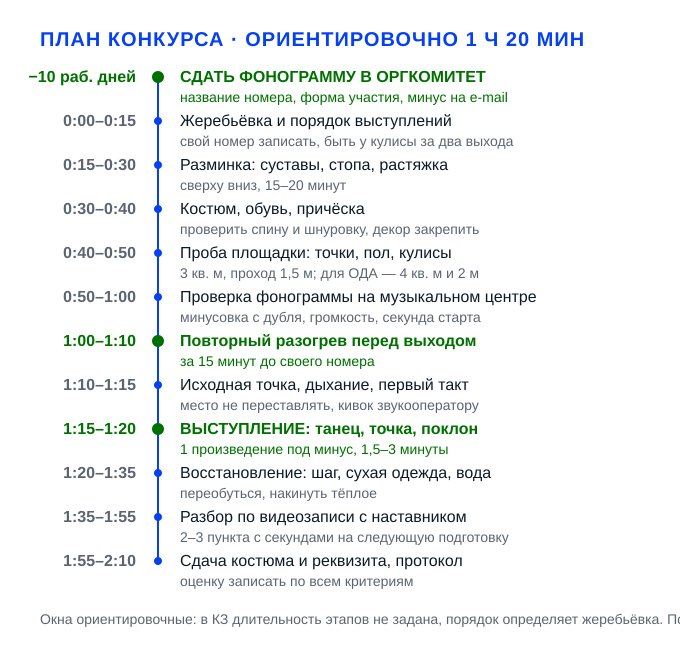
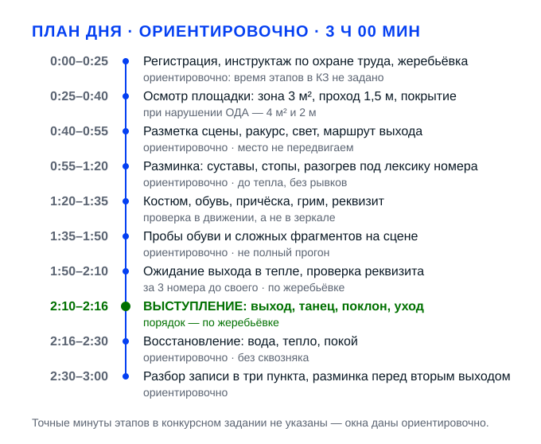
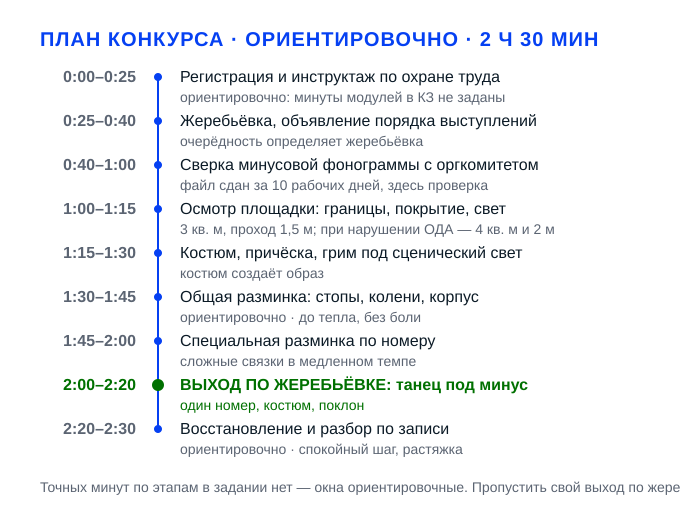

Искусство танца (ФВ)
Задания ниже — официальные файлы «Абилимпикс» (источник: abilympics-russia.ru), разложенные по категориям. Решения написаны по тексту задания, регламенту и критериям оценки; в них указано, что именно проверяет эксперт.
Школьник
14–16 лет, базовый уровень заданияВ официальном файле категории не разделены отдельными разделами — приводим задание целиком; различия по категориям смотрите в таблице модулей.
Пошаговое решение
Конкурсное задание категории «Школьники» выглядит коротко: участник исполняет одно хореографическое произведение — танец или вариацию — под аудиосопровождение, то есть под минусовую фонограмму, и демонстрирует мастерство в своей возрастной категории. За краткостью стоит работа, которая начинается задолго до сцены. Фонограмму участник отправляет в оргкомитет по электронной почте не позднее чем за десять рабочих дней, костюм должен создавать сценический образ, а произведение обязано соответствовать своему названию: то, что объявят перед выходом, должно быть видно в танце. Очерёдность определяет жеребьёвка, поэтому готовность держится постоянно. Форма участия свободная — соло, дуэт, малая форма до пяти человек или ансамбль от шести, допускаются инклюзивные пары. Решение идёт по порядку: выбор номера и сдача фонограммы, разогрев и проба площадки, выход, исполнение и работа после сцены.

Задача 1. Выбрать номер и сдать его организаторам за 10 рабочих днейПодготовка · за 10 рабочих дней до конкурса
Почти всё, что решает исход выступления школьника, делается до сцены. В задании сказано, что участник исполняет одно произведение по выбору, что форма участия может быть любой — от соло до ансамбля от шести человек, и что минусовая фонограмма уходит в организационный комитет по электронной почте не позднее чем за десять рабочих дней. Эти десять дней и есть граница: после неё заменить музыку, переписать название или поменять состав почти невозможно. Здесь же выбирается лексика, под которую реально готово тело конкретного школьника с его нозологией, собирается костюм, создающий сценический образ, и строится репетиционный график с прогонами и хронометражем.
Действие 1.1. Определить форму участия и проверить её под свои возможности
Шаг 1.1.1
Начинаем с арифметики, а не с вдохновения: считаем, сколько человек реально выйдет на площадку в день конкурса, и под это выбираем форму. Один танцор — соло, двое — дуэт, от трёх до пяти — малая форма, шесть и больше — ансамбль. Если в коллективе есть участник с инвалидностью и участники без неё, это законная инклюзивная форма, и в заявке её называют прямо, чтобы организаторы поставили в график нужный размер площадки: для участника с нарушением опорно-двигательного аппарата рабочее место четыре квадратных метра и проход два метра, для остальных нозологий три квадратных метра и полтора метра.
Форма участия определяет не только количество людей на сцене, но и площадь, и логику оценки: в соло видно каждую линию и каждую потерю баланса, а в ансамбле решает строй и единый счёт. Ошибка в подсчёте приводит к тому, что номер заявлен как малая форма, а на площадку выходят шестеро, и им тесно в размеченной зоне — в тесноте рисунок танца ломается сам собой, задевают локтями, сокращают амплитуду, и всё это читается как небрежность исполнения.
Пересчитайте участников поимённо, включая запасных, и сравните с границами из задания — до пяти человек и от шести. Убедитесь, что каждый из списка подтвердил участие именно в этот день. Если состав колеблется между пятью и шестью, выбирайте меньшую форму: впятером номер пройдёт на трёх квадратных метрах, а вшестером на них уже не развернуться.
Самая частая ошибка — заявить ансамбль, рассчитывая на десять человек, а на конкурс привезти семерых: рисунок, построенный на десяти точках, рассыпается, и передний план выглядит пустым. Вторая — скрыть, что в паре участвует человек с нарушением опорно-двигательного аппарата: площадку размечают по общим нормам, и поддержки становятся опасными.
Эксперт сверяет заявленную форму с фактическим составом в момент выхода на площадку. Несовпадение фиксируется, и дальше оценивают то, что реально произошло на сцене, а не то, что было заявлено.
Шаг 1.1.2
Теперь честно оцениваем тело: сколько времени оно держит нагрузку без потери координации, какая амплитуда доступна в плечевом поясе, насколько устойчива стопа, есть ли движения, которые противопоказаны при вашей нозологии. Прогоняем номер по частям и отмечаем, где дыхание сбивается, а где появляется дрожь в опорной ноге. Если в номере есть прыжки, а стопа после травмы не амортизирует, прыжки заменяют на соскоки или на глубокое плие с акцентом рук — зритель видит акцент, а не амплитуду, и номер от этого не проигрывает.
Задание прямо требует демонстрации мастерства именно в своей возрастной категории, а не повторения взрослой вариации любой ценой. Техника за пределы своих возможностей видна всегда: поднятые плечи, задержанное дыхание, потерянная линия. Замена одного элемента на доступный сохраняет чистоту всего номера, и оценка за исполнительское мастерство держится, тогда как героическая попытка прыжка выше своих сил заканчивается падением и снятым баллом.
Проверка простая и жестокая: прогоните номер целиком три раза с небольшими перерывами. Если на третьем прогоне вы попадаете в музыку так же точно, как на первом, а к концу появляется запас дыхания, нагрузка ваша. Если после второго прогона приходится останавливаться и восстанавливать дыхание — номер перегружен.
Типичная ошибка — строить номер по видео понравившегося коллектива и только на третьей репетиции обнаружить, что вращение на одной ноге не держится. Вторая — прятать ограничение и надеяться, что «на адреналине получится»: на сцене запас возможностей не растёт, а падает, потому что волнение забирает часть координации.
Эксперт смотрит на устойчивость и на свободу корпуса в первые же секунды: зажатые плечи и задержанное дыхание видны раньше, чем сложность лексики. Взгляд на руки эксперт бросает ещё до старта, на исходной точке.
Шаг 1.1.3
Проверяем главное формальное требование: произведение должно соответствовать названию. Берём название, которое пойдёт в заявку, и раскладываем его на смысл: кто герой, что происходит, какое настроение, есть ли сюжет. Если название — «Весенний ручей», в номере должны читаться струящиеся линии, лёгкий бег и пробуждение, а не маршевый ритм и жёсткие акценты. Если это «Прощание», то в композиции нужна точка расставания, а не бесконечное радостное вращение. Название лучше давать своё, точное, чем брать красивое и не подходящее.
Соответствие названия — отдельное требование конкурсного задания, и оно проверяется буквально: эксперт слушает объявление номера и смотрит, совпадает ли увиденное с услышанным. Когда название обещает одно, а танец показывает другое, зритель и эксперт теряют опору, и работа читается как набор движений под музыку, а не как хореографическое произведение. Это отражается и в оценке образа, и в общем впечатлении.
Сформулируйте в одном предложении, о чём номер, не называя движений: «девочка прощается с домом, в котором выросла» или «мальчик догоняет уходящий поезд». Покажите его человеку, который номер не видел, и включите запись — если он назовёт ту же мысль, соответствие есть. Если он опишет другое, название или хореография требуют правки.
Обычная ошибка — назвать номер словом, которое нравится, и не менять под него лексику: танец остаётся прежним, а название висит отдельно. Вторая — перегрузить название сюжетом, который невозможно показать за три минуты без слов: зритель не успевает понять историю, и эксперт вынужден объяснять себе, что происходит.
Эксперт держит в голове объявленное название и сверяет с ним образ, костюм и характер движений. Расхождение он отмечает сразу после номера, пока впечатление свежее.
Действие 1.2. Выбрать музыку с драматургическим развитием
Шаг 1.2.1
Слушаем выбранную минусовку целиком с карандашом в руке и размечаем её на четыре участка: вступление, завязка-развитие, кульминация, финал. Вступление обычно занимает восемь-шестнадцать тактов, в нём есть выход и первая поза; развитие — основная часть, где музыка набирает плотность; кульминация — самая громкая и насыщенная точка, там ставится главный акцент; финал — несколько тактов после кульминации, где номер складывается в последнюю позу. Отмечаем эти границы прямо по секундомеру: 0:14, 1:05, 2:20, 2:52. Так у хореографии появляется каркас.
Задание требует, чтобы музыкальное сопровождение было качественным и грамотным с драматургическим развитием, то есть чтобы в нём была мысль, а не ровный ритмический фон. Номер, поставленный на однообразную пульсацию, обречён: первые тридцать секунд зритель смотрит, дальше внимание падает, потому что ничего не меняется. Развитие даёт возможность менять амплитуду, темп и настроение, а это и есть та самая демонстрация мастерства.
Проверьте разметку на слух без движений: включите музыку и на каждой отмеченной секунде произнесите вслух, что происходит — «выход», «пошло развитие», «кульминация», «точка». Если на кульминации вы не чувствуете подъёма, а на финале музыка просто обрывается, этот трек для конкурса слабый, каким бы красивым он ни казался.
Классическая ошибка — взять трек, который нравится в наушниках: там плотный бит, но нет динамики, и танец получается ровным и скучным. Вторая — поставить кульминацию в случайное место, потому что «здесь удобно прыгнуть»: акцент в танце приходит не туда, где он есть в музыке, и возникает ощущение, что танцор не слышит собственное сопровождение.
Эксперт слушает, совпадает ли рисунок танца с фразами музыки: акценты рук и корпуса должны попадать в сильные доли, а смена частей — в смену музыкального материала.
Шаг 1.2.2
Определяем хронометраж. Считаем длительность трека по секундомеру и прибавляем к нему время выхода на площадку и ухода. Для школьной вариации рабочий диапазон — от полутора до трёх минут: за это время тело успевает показать всё, что умеет, и не устаёт настолько, чтобы терять качество в финале. Если трек длиннее трёх с половиной минут, его сокращают по музыкальным фразам, а не по живому месту: вырезают целый квадрат, чтобы счёт остался целым.
В задании длительность произведения не задана, значит решает не формальная граница, а выносливость и плотность номера. Слишком короткий трек не даёт раскрыть образ и воспринимается как фрагмент, слишком длинный заставляет тянуть паузы и повторять уже показанное. Сокращение по музыкальным квадратам сохраняет структуру, а грубый обрез посреди фразы слышен сразу — как споткнувшийся ритм.
Включите трек и танцуйте целиком под секундомер, не останавливаясь. Запишите пульс и дыхание сразу после финальной точки: если через тридцать секунд дыхание восстановилось, а последняя поза держалась уверенно, длительность подходит. Если финал вы уже «дотанцовываете на характере», трек надо сокращать.
Частая ошибка — обрезать музыку в середине фразы, чтобы уложиться в привычные три минуты: счёт ломается, и последние четыре такта танцор вынужден догонять. Вторая — взять трек на четыре с половиной минуты и в середине начать экономить амплитуду: экономия видна и читается как потеря формы.
Эксперт отмечает, где номер начинает «проседать»: обычно это середина второй минуты, когда запас сил кончается, а номер ещё не дошёл до кульминации. Отдельно он отмечает, совпадает ли начало танца с первым тактом.
Шаг 1.2.3
Проверяем качество самой записи, а не только музыки. Включаем минусовку на обычной колонке на средней громкости: не должно быть щелчков, провалов, посторонних голосов и остатков вокала, которые превращают минус в подобие караоке. Отдельно слушаем первые и последние пять секунд — там чаще всего остаются тишина, шум зала или резкий обрыв. Громкость выравниваем по самой громкой части, чтобы пик не уходил в перегруз.
Музыкальное сопровождение оценивают как часть номера, и дефекты записи эксперт слышит так же хорошо, как и танцор. Щелчок в тихом фрагменте звучит громче, чем кажется в наушниках, а обрыв в конце убивает финальную позу: вместо точки получается неловкая пауза, в которой зал не понимает, закончился номер или нет. Кроме того, некачественная фонограмма сразу выдаёт, что номер собирали наспех.
Прослушайте файл в наушниках и на колонке, а затем отдайте послушать человеку, который номер не знает: он должен услышать ровную музыку без артефактов. Отметьте секунду, с которой начинается первый такт, — именно её вы назовёте звукооператору.
Ошибка — вырезать вокал фильтром и оставить «бубнение» на заднем плане: в зале это слышно, и номер теряет качество. Вторая — оставить в начале десять секунд тишины: танцор стоит на сцене и ждёт, зал начинает шуметь, и старт получается смазанным.
Эксперт слушает фонограмму с первой секунды и замечает как дефекты, так и точность попадания начала танца в первый такт. Он слушает первые секунды внимательнее остальных: именно там видно, чистилась ли запись.
Действие 1.3. Подготовить файл и отправить его в оргкомитет
Шаг 1.3.1
Собираем итоговый файл: обрезаем тишину в начале до половины секунды, оставляя ровно столько, чтобы музыкальный центр успел выйти на звук, и убираем хвост после последнего аккорда, оставив две-три секунды на финальную позу. Называем файл так, чтобы его нельзя было перепутать: фамилия участника, название номера, категория, без пробелов и лишних символов — например Ivanova_Ruchey_shkolniki.mp3. Формат самый совместимый, mp3 с частотой 44,1 кГц и обычным битрейтом: он читается любым музыкальным центром.
Файл уходит в оргкомитет по электронной почте за десять рабочих дней, и к этому моменту он должен быть окончательным. Имя файла — единственная защита от путаницы, когда в папке организаторов лежат десятки треков с названиями вида «минус новый.mp3». Формат важен потому, что воспроизводить будет не ваш телефон, а музыкальный центр из перечня оборудования, по одному на десять участников, и он не обязан понимать экзотические кодеки.
Проверьте файл тремя способами: проиграйте его на компьютере, скопируйте на флешку и включите на бытовом плеере или магнитоле, а затем откройте свойства и посмотрите длительность — она должна совпадать с той, что вы намерили секундомером. Имя файла прочитайте вслух: если его трудно произнести, организаторам будет трудно его найти.
Самая частая ошибка — отправить файл в формате, который читается только на телефоне, и обнаружить это за час до выхода. Вторая — назвать трек «минус_final_final2.mp3»: в общей папке таких файлов несколько, и звукооператор ставит не тот.
Эксперт и звукооператор работают именно с тем файлом, который пришёл в оргкомитет: замена на месте, с чужой флешки, не предусмотрена. Название файла в списке он сверяет с объявленным названием номера.
Шаг 1.3.2
Готовим второй носитель: та же фонограмма на отдельной флешке, которая лежит в сумке с костюмом, а не в кармане куртки. Подписываем флешку маркером — фамилия и название. Если есть возможность, копируем трек и на телефон в формате, который читается по кабелю, а также сохраняем в облаке, чтобы в крайнем случае отправить его с чужого устройства. Дубль — это не паранойя, а обычная практика выступлений.
Оборудование на площадке ограничено: в перечне указан музыкальный центр с расчётом один на десять участников, и он может не прочитать вашу флешку, не увидеть папку или отказаться от файла с нестандартным именем. Второй носитель и облачная копия стоят ноль усилий, но спасают номер за минуту до выхода. В задании отдельно сказано, что после установки рабочее место не передвигают, — значит, решать проблему со звуком на ходу будет негде.
Вставьте флешку в чужой компьютер или в магнитолу и проверьте, что файл виден в корне, а не в третьей вложенной папке: многие плееры не умеют ходить по папкам. Убедитесь, что на флешке нет других треков с похожими названиями — звукооператор выбирает по списку и легко ошибается.
Ошибка — положить дубль в тот же карман, где лежит первый носитель, и потерять оба одновременно. Вторая — хранить музыку только в телефоне без кабеля и без переходника: подключить его к музыкальному центру будет нечем.
Эксперт видит, насколько спокойно участник решает вопрос со звуком. Судорожные поиски трека перед выходом отнимают время и сбивают настрой. Спокойствие участника в эти минуты он читает как готовность.
Шаг 1.3.3
Отправляем письмо в организационный комитет не позже чем за десять рабочих дней до мероприятия. В письме — фамилия и имя участника, категория «Школьники», название номера, форма участия, длительность в минутах и секундах, прикреплённый файл. Рабочие дни считаем по календарю, а не по своим ощущениям: десять рабочих дней — это две календарные недели, и если отправлять в пятницу вечером, срок сдвигается. Сохраняем отправленное письмо и ждём подтверждения.
Срок в десять рабочих дней нужен организаторам, чтобы собрать все фонограммы, проверить их и сложить в один плейлист по порядку жеребьёвки. Участник, отправивший музыку позже, рискует тем, что его трек не попадёт в общий список, и на площадке начнётся разбирательство вместо выступления. Подтверждение нужно вам: это доказательство, что файл получен и открывается.
Признак успеха — ответ организаторов, где подтверждены фамилия, название номера и длительность. Если ответа нет двое суток, пишите повторно и звоните: молчание не означает согласие. Проверьте, что в ответе нет опечаток в названии — именно это название объявят перед вашим выходом.
Самая обидная ошибка — отправить музыку за два дня, потому что «успеем»: трек могут не включить в плейлист, и номер останется без сопровождения. Вторая — отправить письмо без подтверждения и не проверить, открывается ли вложение у получателя.
Организаторы и эксперт сверяют присланную фонограмму со списком. Отсутствие файла в списке обнаруживается до начала конкурса, и тогда участника ставят перед фактом, а не решают проблему.
Действие 1.4. Собрать костюм, создающий сценический образ
Шаг 1.4.1
Костюм собираем под образ, а не под праздник: он должен читаться с последнего ряда и не мешать телу. Начинаем с силуэта — что видит зал: длинная юбка даёт летящую линию в поворотах, но цепляется за ноги в быстрых дробях, облегающий костюм показывает линии корпуса, но не скрывает ни одной ошибки. Ткань берём ту, что держит форму и не блестит под софитами: плотный трикотаж, габардин, лёгкий шифон в два слоя. Все крепления — булавки, крючки, завязки — прячем внутрь и дублируем ниткой.
В конкурсном задании прямо сказано, что выполнение предполагает наличие костюма для создания определённого сценического образа. Костюм — это часть хореографического произведения, а не украшение: он объясняет, кто герой, и помогает зрителю поверить в историю с первых секунд. Оторвавшаяся деталь, съехавший рукав или юбка, в которой нельзя сделать шаг нужной ширины, ломают рисунок, и эксперт видит не образ, а борьбу с одеждой.
Наденьте костюм и сделайте в нём полный прогон, включая самые широкие движения: глубокое плие, наклон, поворот, прыжок. Проверьте три вещи — не тянет ли в плечах и бёдрах, не цепляется ли низ за обувь, не сползает ли пояс. Пройдитесь по костюму руками: ничего не должно торчать, звенеть и цепляться за пальцы.
Типичная ошибка — купить красивый костюм на размер меньше, чтобы «сидел по фигуре»: в нём невозможно поднять руки выше плеч, и весь верхний рисунок танца пропадает. Вторая — пришить декоративные элементы на живую нитку за час до выступления: на сцене они отлетают в первых же акцентах, и танцор начинает их собирать.
Эксперт смотрит на костюм в момент выхода: читается ли образ, опрятен ли вид, не отвлекает ли одежда от движения. Потом он следит, не поправляет ли участник костюм по ходу номера.
Шаг 1.4.2
Обувь подбираем под покрытие площадки и под характер номера. Для мягкого танца — джазовки или чешки с тонкой подошвой, для характерного — обувь на небольшом каблуке с устойчивым ходом. Главное правило: подошва должна быть чистой и слегка шершавой, а шнуровка — завязанной двойным узлом и заправленной внутрь. Обувь разнашиваем заранее, минимум за три репетиции, и в день конкурса надеваем ту же пару, в которой репетировали, а не новую.
Сцена почти всегда скользит сильнее репетиционного зала, и именно обувь определяет, сможете ли вы удержать равновесие в повороте. Новая, нераздвинутая обувь натирает за первые пять минут, а неправильная подошва превращает простое вращение в падение. Требования охраны труда отдельно говорят о правильном положении тела и уверенных плавных движениях: устойчивая стопа — их физическая основа, без неё ни один элемент не будет ни уверенным, ни плавным.
Проверьте обувь на том покрытии, на котором будете танцевать, или на похожем: пройдитесь, сделайте поворот на одной ноге, проверьте, не скользит ли пятка. Обувь не должна болтаться на подъёме и не должна сдавливать пальцы. Шнурки проверьте на развязанность рывком за концы.
Ошибка — надеть новые туфли впервые на выступление: к третьей минуте ноги в крови, и вместо танца получается терпение. Вторая — выйти в обуви с гладкой подошвой, которая на сцене ведёт себя как конёк: шаги уезжают, позы не держатся, и это читается как слабая техника.
Эксперт замечает неустойчивость по мелким шагам и подсечкам. Если танцор подстраховывается руками, это видно раньше, чем ошибка в самом движении. Отдельно он отмечает шум шагов: глухой звук выдаёт жёсткое приземление.
Шаг 1.4.3
Причёску и макияж делаем под тот же образ и под нагрузку. Волосы собираем так, чтобы ни одна прядь не падала на лицо: тугая резинка, сетка, шпильки, лак. Если по образу нужна распущенная коса, крепим её у основания и проверяем в повороте. Макияж — сценический, чуть ярче обычного, потому что софиты выбеливают лицо: подведённые глаза, ровный тон, чёткие брови. Всё это делаем заранее, до разминки, и оставляем пять минут на правку перед выходом.
Лицо — половина образа, и оно входит в то впечатление, которое остаётся у эксперта от номера. Прядь, прилипшая к щеке, заставляет танцора смахивать её движением головы, и этот жест читается как потеря контроля. Слишком бледный макияж под софитами делает лицо плоским, и мимика, которую вы отрабатывали, просто не видна из зала. При этом всё должно выдержать нагрузку и не потечь.
Проверьте причёску в движении: сделайте два быстрых поворота и наклон головой вниз. Если пряди выбиваются, добавьте шпильку и лак. Сфотографируйте себя при ярком свете — фото покажет, как вас видит зал с расстояния: если черты лица «стираются», макияж нужно усилить.
Частая ошибка — сделать сложную причёску, которая не держится, и весь номер поправлять её незаметными движениями. Вторая — нанести слишком много тона, который под софитами начинает блестеть и подчёркивает усталость.
Эксперт видит лицо в профиль и в фас на протяжении всего номера, поэтому оценивает не только красоту, но и то, держится ли образ до последней секунды.
Действие 1.5. Построить репетиции и собрать номер целиком
Шаг 1.5.1
Разбиваем номер на части и учим их по счёту, а не «на память телом». Каждая часть — восемь тактов: сначала считаем вслух «и-раз-и-два» под медленный темп, потом соединяем с музыкой. Ведём короткий дневник репетиций: дата, что отработано, что не получается. Репетиции ставим через день, по часу-полтора, а не по пять часов накануне: телу нужен отдых, чтобы движение закрепилось как навык, а не как разовое усилие.
Номер, выученный частями и счётом, держится на сцене даже при волнении: тело помнит структуру и находит следующее движение, даже если голова на секунду отключилась. Номер, выученный «как-нибудь под музыку», рассыпается от первого сбоя — а сбои на незнакомой площадке неизбежны. Дневник нужен, чтобы видеть динамику и не считать одну и ту же ошибку случайностью.
Признак того, что часть выучена: вы можете станцевать её без музыки, вслух считая, и при этом не сбиться, если кто-то рядом говорит. Проверьте так каждый восьмитакт, прежде чем соединять. Если часть «сыпется» на третьем повторе, она ещё не выучена, а просто удалась пару раз.
Ошибка — учить номер целиком с первого дня, спотыкаясь на одном и том же месте: ошибка закрепляется и на сцене вылезает автоматически. Вторая — репетировать только под музыку: без неё не остаётся внутреннего счёта, и при сбое звука танцор останавливается.
Эксперт видит заученность по точности попаданий в счёт и по тому, как участник держит структуру в середине номера, где внимание проседает. Отдельно он смотрит начало и финал: там заученность видна отчётливее всего.
Шаг 1.5.2
Раз в неделю делаем полный прогон: костюм, обувь, музыка, хронометр, зритель из одного-двух человек. Прогон — это не репетиция: не останавливаемся, не поправляем, не начинаем заново, даже если ошиблись. Прошли от исходной позы до поклона — записали время и отметили, в каких местах сбились. За неделю до конкурса таких прогонов должно быть не меньше трёх.
На конкурсе номер исполняется один раз и без остановок, и единственный способ натренировать это состояние — репетировать его целиком. Прогон в костюме и обуви вскрывает то, что не видно в тренировочном зале: цепляющийся низ, съезжающий пояс, неудобный поворот головы в жёстком воротнике. Хронометр на прогоне даёт точное время номера, а оно понадобится в заявке и звукооператору.
После прогона сверьте время с заявленным: расхождение больше пяти секунд означает, что номер «плывёт» — где-то вы держите лишние паузы. Отметьте на записи три места, где потеряна форма, и работайте только с ними. Если прогон прошёл без остановки и с попаданием в музыку, часть готова.
Типичная ошибка — останавливаться на прогоне, «чтобы поправить»: так навык цельного исполнения не формируется, и на сцене после первой ошибки участник теряется. Вторая — прогонять без костюма: костюм меняет амплитуду и вес, и на выступлении тело ведёт себя иначе.
Эксперт оценивает целостность: способность держать номер от первой до последней секунды без провалов. Прогоны — единственное, что это тренирует. Провалы в середине номера он отмечает как потерю формы.
Шаг 1.5.3
Снимаем прогон на видео с того места, где будет стоять эксперт, то есть с дистанции пять-восемь метров, и разбираем запись по трём пунктам: линии, ритм, лицо. Смотрим без звука — так видно, читается ли танец сам по себе; потом со звуком — так видно, попадаете ли вы в музыку. Отмечаем два-три конкретных места и исправляем их на следующей репетиции, а не весь номер сразу.
Видео — единственная возможность увидеть себя со стороны, а эксперты смотрят именно со стороны. На записи сразу видно то, что не чувствуется изнутри: провал в линии рук, слишком высокий подбородок, зажатые пальцы, потерянный рисунок. Разбор по трём пунктам работает, потому что внимание не размазывается: за неделю можно довести до чистоты именно три элемента.
Проверьте запись по чек-листу: читается ли номер без звука; совпадают ли акценты с сильными долями; видно ли лицо и есть ли на нём образ; одинаково ли выглядят повторы одного и того же движения. Если два-три пункта в порядке, остальное можно оставить до следующего цикла.
Ошибка — смотреть запись и ругать себя целиком, без конкретики: после такого разбора непонятно, что делать на репетиции. Вторая — снимать с первого ряда телефоном снизу вверх: на такой записи искажены пропорции, и выводы получаются ложными.
Эксперт фактически делает то же самое: оценивает линии, ритм и лицо. Разбор по видео заранее ставит вас на его позицию. Совпадение своих замечаний с вашим разбором он считает признаком зрелости работы.
Задача 2. Разогреть тело и примерить номер к незнакомой площадкеПлощадка · за час до выхода
Требования охраны труда в задании начинаются с бытовых вещей: надеть сценический костюм, занять место на сцене, обеспечить анатомически правильное положение тела, двигаться уверенно и плавно, не торопиться. Всё это возможно только на разогретом теле. Холодные связки и непроработанные суставы дают ту самую скованность, из-за которой простой наклон выглядит как насилие над собой, а прыжок заканчивается растяжением. Вторая часть задачи — примерка номера к чужой сцене: площадка почти всегда меньше зала, покрытие другое, кулисы стоят не там, где вы привыкли. Рабочая зона по нормам — три квадратных метра с проходом полтора метра, для участника с нарушением опорно-двигательного аппарата четыре квадрата и два метра, и в этих границах нужно успеть проверить рисунок, точки и звук.
Действие 2.1. Разогреть тело сверху вниз и проверить самочувствие
Шаг 2.1.1
Разминку начинаем с шеи и плеч: медленные наклоны головой в четыре стороны по восемь счётов, круги плечами вперёд и назад, подъёмы и сведения лопаток. Дальше локти, кисти, пальцы — по восемь вращений в каждую сторону, потому что кисть в танце работает как продолжение линии и именно она чаще всего остаётся холодной. Затем корпус: наклоны в сторону с вытянутой рукой, скручивания с зафиксированным тазом, прогиб и округление спины. Каждое движение — не меньше восьми повторов, без рывков, до ощущения тепла.
Разминка сверху вниз соответствует логике тела: крупные мышцы плечевого пояса и спины задают осанку, а осанка определяет, как работают ноги. Если начать с прыжков на холодные связки, голеностоп получает нагрузку, к которой не готов, и риск растяжения резко растёт. Требование анатомически правильного положения тела выполняется только тогда, когда мышцы уже включены: на холодном теле корпус проваливается, а плечи поднимаются к ушам.
Признак разогретого верха — тепло в плечах и лёгкость в шее: голова поворачивается до упора без натяжения. Проверьте руки: поднимите их вверх и подержите десять секунд — они не должны дрожать. Если в шее слышен хруст и есть боль, движение уменьшают по амплитуде и не тянут через боль.
Частая ошибка — сделать два наклона головой и считать, что размялся: плечевой пояс остаётся холодным, и первый же широкий жест рукой идёт с зажатой лопаткой. Вторая — тянуть шею через силу, до головокружения: на сцене это заканчивается потерей ориентации.
Эксперт видит разогретость по свободе верхнего плечевого пояса в первом же движении: поднятые плечи и зажатая шея — признак неразогретого тела. Зажатая шея и поднятые плечи — для него первый признак неразогретого тела.
Шаг 2.1.2
Переходим к тазу и ногам: круги тазом, выпады вперёд и в сторону, махи ногами с опорой на стену, глубокое плие с задержкой на четыре счёта. Обязательно разогреваем стопу — подъёмы на полупальцы, перекаты с пятки на носок, круги стопой по двадцать повторов в каждую сторону. Затем растяжка: складывание вперёд с прямыми ногами, растяжение задней поверхности бедра, раскрытие паха. Каждое положение держим по двадцать-тридцать секунд, дышим, не пружиним.
Стопа — то, через что тело общается с полом, и в танце она принимает на себя всю нагрузку: соскоки, повороты, мелкие дроби. Нерастянутая стопа не амортизирует, и удар уходит в колено и поясницу. Требование уверенных и плавных движений выполняется ровно настолько, насколько устойчива опора: пока стопа холодная, любой шаг делается осторожно, а осторожность на сцене читается как неуверенность.
Проверьте опору практическим тестом: встаньте на одну ногу, закройте глаза и постойте двадцать секунд. Если вас ощутимо ведёт в сторону, стопа и голеностоп ещё не готовы — добавьте перекатов и подъёмов. Второй тест — глубокое плие: колени должны идти по направлению носков, а не внутрь.
Опасная ошибка — «растянуться» на холодную мышцу резким движением в шпагат: именно так случаются растяжения за час до выхода. Вторая — пренебречь стопой, потому что «она и так гнётся»: на скользком полу именно голеностоп подводит первым.
Эксперт смотрит на устойчивость в первых акцентах и на то, насколько глубоко участник может уйти вниз без потери оси. Подсечки и мелкие шаги для страховки он читает как холодную стопу.
Шаг 2.1.3
Перед разминкой и после неё оцениваем самочувствие: головокружение, тошнота, боль в суставах, температура, общая слабость. В задании прямо сказано, что при недомогании или внезапном ухудшении состояния нужно немедленно прекратить работу и обратиться к врачу. Если самочувствие нормальное, пьём воду маленькими глотками и едим что-то лёгкое за час-полтора до выхода: не плотный обед, а банан, йогурт или несколько печений.
Голодный и обезвоженный танцор теряет координацию раньше, чем силы: к третьей минуте появляется дрожь и «ватные» ноги, а вместе с ними уходит точность. Переполненный желудок даёт тяжесть и одышку. Требование охраны труда о прекращении работы при недомогании — не формальность: на сцене потеря сознания или резкая боль означают не только снятую оценку, но и вызов скорой по номеру 103.
Проверьте себя тремя вопросами: кружится ли голова при резком вставании, есть ли боль при движении в каком-либо суставе, чувствуете ли вы обычную энергию. Если хотя бы один ответ тревожный, сообщите наставнику до выхода, а не после. Воду держите рядом с местом ожидания, но пейте по глотку.
Ошибка — выйти на площадку с начинающейся простудой «на характере»: тело на адреналине продержится минуту, а потом дыхание сорвётся. Вторая — съесть плотный обед за полчаса: на глубоких наклонах появляется тошнота, и номер превращается в борьбу с собой.
Эксперт замечает бледность, дрожь и сбитое дыхание до начала номера. Если участнику плохо, выступление могут остановить. Если участник жалуется на самочувствие, выступление могут отложить или снять.
Действие 2.2. Примерить рисунок номера к реальной площадке
Шаг 2.2.1
Выходим на площадку и размечаемся: находим центр сцены, отмечаем его мысленно по двум линиям — от занавеса к заднику и от левой кулисы к правой. Проверяем границы рабочей зоны: три квадратных метра и проход не меньше полутора метров, а если танцует участник с нарушением опорно-двигательного аппарата — четыре квадрата и два метра прохода. Отмечаем точку старта, точку кульминации и точку финальной позы так, чтобы все три находились внутри зоны и были видны залу.
Рисунок танца строится от точек, а не от ощущений: на незнакомой сцене внутреннее чувство центра обманывает, и номер уезжает в одну сторону. Если старт стоит слишком близко к кулисе, часть номера зал не увидит вообще, а эксперт потеряет линии. Нормы площади и прохода нужны именно для того, чтобы широкие движения и поддержки не упирались в край сцены, и проверять это нужно до выхода, а не во время исполнения.
Проверьте три точки практически: встаньте на стартовую точку и посмотрите в зал — видно ли вам первые ряды; пройдите до точки кульминации и убедитесь, что до кулисы остаётся не меньше двух шагов; встаньте в финальную позу и посмотрите, не уходит ли она в тень. Если точки выстроены по диагонали, проверьте, что диагональ не обрывается за кулисой.
Ошибка — ставить финальную позу у самого задника: она оказывается в тени и читается как провал в конце номера. Вторая — начинать номер из глубины сцены, откуда до центра нужно долго идти: первое впечатление теряется, пока вы идёте.
Эксперт смотрит номер из зала и оценивает, видно ли всё: фигура не должна теряться в кулисе и не должна уходить в тень. Потеря фигуры в тени задника для него — ошибка планирования, а не случайность.
Шаг 2.2.2
Проходим номер по площадке без музыки, вслух считая, и отмечаем, где рисунок не помещается. Чаще всего это широкие шаги в стороны, большие прыжки с продвижением и вращения, которые на маленькой сцене заканчиваются у кулисы. Найденные места сразу корректируем на месте: шаг делаем уже, продвижение сокращаем, вращение переносим на центр. Затем проходим ещё раз с музыкой в полную силу — но без костюма, чтобы не вспотеть перед выходом.
Площадка почти всегда меньше зала, в котором шла подготовка, и номер, рассчитанный на простор, на ней выглядит как беспорядочное метание. Корректировка на месте — единственный способ сохранить целостность: вы не меняете хореографию, а подстраиваете амплитуду под реальные границы. Проверка без музыки нужна, чтобы увидеть геометрию, а с музыкой — чтобы понять, не сбивает ли новый рисунок дыхание.
Признак готовности — вы проходите номер и ни разу не касаетесь кулисы, не выходите за отмеченную зону и при этом попадаете в музыку. Отметьте на полу место, где нога встаёт на старте, и запомните ориентир в зале — например, второй ряд или колонну: на выступлении этот ориентир заменит разметку.
Ошибка — репетировать прямо перед выходом в полную силу: мышцы забиваются, и на сцене появляется тяжесть. Вторая — не заметить, что пол скользит иначе, и на первом же повороте потерять ось. Третья — не переставить точки после того, как площадку переставили.
Эксперт видит, насколько уверенно участник владеет пространством: мечется ли он по площадке или работает в размеченной зоне. Беготня между кулисами вместо рисунка читается как отсутствие плана.
Шаг 2.2.3
Осматриваем пол: покрытие, швы, неровности, места, где линолеум отходит, и лужицы, оставленные предыдущими участниками. Проходим по своей траектории и проверяем скольжение подошвой — коротким шагом с поворотом. Если пол скользит сильнее привычного, меняем технику: шаги делаем короче, приземления мягче, а вращения начинаем ближе к центру. Если пол, наоборот, цепляет, уменьшаем количество поворотов на месте.
Требование двигаться уверенно и плавно напрямую зависит от сцепления с полом. Скользкий пол — главная причина падений на конкурсах: танцор делает привычное усилие, а тело уезжает. Осмотр траектории занимает две минуты и позволяет заранее перенести сложные элементы в более безопасную часть площадки, а не обнаружить опасный участок в середине номера.
Проверьте три участка: стартовую точку, точку кульминации и диагональ. На каждом сделайте поворот на одной ноге и короткий шаг с приседанием. Если обувь скользит, протрите подошву влажной тряпкой и дайте высохнуть — пыль на подошве часто и есть причина скольжения.
Самая опасная ошибка — не проверить пол и влететь в поворот с той же силой, что в зале: нога уезжает, и падение случается на глазах у эксперта. Вторая — танцевать рядом с влажным участком, оставшимся от предыдущего выступления.
Эксперт отмечает падения и подсечки, но ещё раньше — те осторожные движения, которыми участник проверяет пол: значит, разминка и примерка не сделаны. Отдельно он отмечает, пробует ли участник покрытие до старта.
Действие 2.3. Проверить фонограмму и звук на месте
Шаг 2.3.1
Находим музыкальный центр или пульт, с которого будет играть звук, и просим включить именно вашу фонограмму, с вашей флешки или из присланного файла. Слушаем с того места, где будет стоять танцор, а не рядом с колонкой: важно понять, слышно ли первую долю и не запаздывает ли звук. Проверяем громкость — она должна быть такой, чтобы музыка вела, но не забивала звук шагов и дыхание.
Оборудование в перечне — музыкальный центр с расчётом один на десять участников, то есть на площадке он не единственный и не всегда настроен идеально. Проверка на месте нужна, чтобы не выяснять на первой доле, слышно ли вам музыку из глубины сцены. От громкости зависит и техника: в тихом звуке танцор невольно ускоряется, в слишком громком — теряет ощущение собственного ритма.
Проверьте три вещи: слышна ли первая доля с исходной точки; совпадает ли длительность с той, что вы заявляли; нет ли задержки между нажатием и звуком. Пройдитесь по площадке и послушайте в разных точках — в некоторых залах у кулисы звук пропадает.
Ошибка — проверять звук, стоя рядом с колонкой: там слышно всё, а на стартовой точке первая доля тонет. Вторая — согласиться на громкость «как у всех», не попросив прибавить: в тихом звуке номер теряет энергию.
Эксперт слушает баланс: музыка должна поддерживать номер, а не перекрывать его. Он слушает первую долю вместе с первым шагом: если звук приходит с опозданием, виноват не танцор, но проверить это нужно заранее.
Шаг 2.3.2
Договариваемся со звукооператором коротко и конкретно: как называется файл, с какой секунды начинается музыка, есть ли в начале тишина, что делать, если трек не запустился. Просим поставить трек на паузу в самом начале и запускать по вашему кивку из-за кулисы. Отдельно уточняем, что делать при обрыве: начинать заново или продолжать без музыки — и фиксируем ответ.
Звукооператор на фестивале работает с десятками треков и не помнит ваш номер. Договорённость о кивке и о старте с нужной секунды убирает главную причину смазанных выходов: музыку включают, пока танцор ещё идёт к центру. Уточнение про обрыв нужно потому, что в стрессе решение принимается за секунду, и лучше принять его заранее, чем стоять в тишине перед залом.
Проверьте, что вас поняли: попросите звукооператора повторить название файла и секунду старта. Убедитесь, что кивок виден из-за кулисы. Если обрыв возможен, договоритесь о сигнале: поднятая рука означает «продолжаю без музыки».
Ошибка — объяснять всё на бегу, за тридцать секунд до выхода: в суете звукооператор путает трек. Вторая — не проговорить поведение при сбое и остановиться посреди номера, когда музыка оборвалась. Третья — не проверить дубль на чужом устройстве.
Эксперт видит, насколько профессионально участник взаимодействует с площадкой: точный старт, спокойная реакция на сбой. Он отмечает и то, как участник ведёт себя при задержке звука.
Шаг 2.3.3
Слушаем фонограмму целиком один раз, с часами в руке, и записываем фактическую длительность на бумаге. Сверяем с заявленной и с той, что вы намерили дома. Отмечаем вслух ключевые секунды: где вступление переходит в развитие, где кульминация, где последний аккорд. Эти три цифры записываем на тыльную сторону ладони или на бумажку, которую можно держать в кулисе.
Длительность — единственное, что можно проверить объективно, и именно она чаще всего расходится: дома трек играл с телефона, а на площадке выясняется, что версия другая. Знание ключевых секунд даёт внутренний таймер: даже если звук приглушён или зал шумит, вы попадаете в кульминацию и в финал. Это и есть та самая грамотность сопровождения, которую требует задание.
Проверка: назовите по памяти три цифры — начало развития, кульминацию и финал — и сверьте с записанным. Если сбиваетесь, значит номер ещё не «сросся» с музыкой, и на репетиции нужно проговаривать структуру вслух под счёт.
Ошибка — доверять памяти вместо часов: субъективное время на сцене сжимается, и кульминация приходит «неожиданно». Вторая — не заметить, что на площадке играет укороченная версия, и потерять финальную позу.
Эксперт слышит, попадает ли танцор в структуру: смена частей музыки должна совпадать со сменой рисунка танца. Он сверяет кульминацию музыки с кульминацией рисунка — расхождение видно сразу.
Задача 3. Войти в костюм, пройти жеребьёвку и встать на исходную точкуПеред выходом · по жеребьёвке
Очерёдность выступления определяет жеребьёвка, и это значит, что точное время выхода неизвестно до последнего момента. Готовность держится не «за пятнадцать минут», а всё время ожидания: костюм надет и застёгнут, причёска держится, обувь проверена, тело разогрето повторно перед самым выходом. Требования охраны труда говорят здесь буквально: надеть сценический костюм, занять место на сцене, а после установки рабочее место не передвигать. Последнее означает, что исходная точка выбрана один раз и осознанно — на ней вы стоите и ждёте музыки, не переминаясь и не переставляя ноги, потому что каждый лишний шаг виден залу и сбивает дыхание.
Действие 3.1. Надеть костюм по требованиям и проверить его в движении
Шаг 3.1.1
Надеваем костюм заранее, за тридцать-сорок минут до предполагаемого выхода, а не в последнюю минуту. Застёгиваем всё до конца, включая скрытые крючки и молнии на спине, и просим наставника или партнёра проверить спину — там чаще всего остаётся незастёгнутая деталь. Все крепления, которые держат декор, проклеиваем или прошиваем на месте: булавка, воткнутая в тонкую ткань, на первом же акценте уходит вместе с украшением.
Костюм — часть сценического образа, и его состояние оценивают наравне с движением. Незастёгнутая спинка видна залу всё выступление и читается как небрежность, независимо от качества танца. Аксессуар, улетевший в зал на первой минуте, отвлекает и танцора, и зрителя, и эксперта: после этого внимание следящего уже разделено между номером и предметом на полу.
Проверьте костюм по трём точкам: спина застёгнута полностью, пояс держится на своём месте, ничего не тянет в подмышке при поднятых руках. Пройдитесь и присядьте — низ не должен подворачиваться под ноги. Проверьте карманы: в них не должно быть ничего, что может выпасть.
Ошибка — надевать костюм в спешке после объявления своего номера: молния не доходит до конца, и на сцене спина открыта. Вторая — прикрепить декор на булавки без фиксации: украшение отлетает в первом же повороте.
Эксперт оценивает костюм в момент выхода: опрятность, целостность и соответствие образу видны с первых секунд. Отдельно он фиксирует, поправляет ли участник костюм по ходу номера: каждый такой жест украдкой забирает внимание зала.
Шаг 3.1.2
Причёску доделываем после того, как костюм надет, иначе она помнётся при надевании через голову. Волосы фиксируем в три слоя: резинка, сетка или шпильки, лак. Если по образу нужны распущенные волосы, их крепят у корней, а концы слегка завивают, чтобы они не липли к лицу. Макияж наносим за двадцать минут до выхода и обязательно смотрим на себя при ярком свете, а не в полумраке раздевалки.
Лицо и волосы — то, что эксперт видит крупным планом в первом ряду и в профиль во время поворотов. Прядь, выбившаяся на третьей минуте, заставляет танцора смахивать её движением головы, а это движение не из хореографии и оно читается как потеря образа. Причёска, которая держится, позволяет забыть о внешности и работать телом, и именно поэтому она делается до разминки, а не после.
Проверьте причёску в движении: два быстрых поворота, наклон головой, наклон корпуса вперёд. Ни одна прядь не должна падать на глаза. Проверьте макияж на фото при ярком свете: лицо не должно выглядеть плоским или слишком бледным.
Частая ошибка — собрать волосы наспех резинкой без фиксации: через минуту танца хвост начинает бить по лицу. Вторая — сделать тяжёлый макияж, который под софитами течёт: к финалу лицо выглядит уставшим.
Эксперт смотрит на лицо в течение всего номера и отмечает, держится ли образ до последней секунды. Если прядь падает на лицо, он видит движение головой, которого нет в хореографии, и отмечает потерю образа.
Шаг 3.1.3
Обувь надеваем последней, перед самым выходом, и проверяем три вещи: шнурки завязаны двойным узлом и заправлены, подошва чистая, застёжка держит. Каблук или чешку проверяем на устойчивость рукой: пятка не должна гулять. Если площадка скользкая, подошву слегка протираем влажной тряпкой и ждём, пока высохнет — пыль уходит, сцепление возвращается. Обувь надеваем только на разогретые ноги.
Незавязанный шнурок в танце — не мелочь: на него наступают, и падение происходит в самый неподходящий момент, обычно в кульминации. Пыльная подошва даёт именно тот эффект «конька», из-за которого пропадают повороты и подсекаются шаги. Чистая подошва и надёжная застёжка — часть техники безопасности, о которой говорится в разделе охраны труда.
Проверьте шнурки рывком за оба конца — узел должен держать. Сделайте поворот на одной ноге и короткий шаг с приседанием: обувь не должна скользить и не должна цепляться. Убедитесь, что пальцы не упираются в носок.
Ошибка — надевать обувь за час до выхода и ходить в ней по коридорам: подошва собирает пыль, а ноги устают. Вторая — завязать шнурки бантиком: он развязывается на первом же прыжке. Третья — выйти в обуви, в которой ни разу не репетировали.
Эксперт замечает неустойчивость по мелким подсечкам и по тому, как танцор переносит вес. Отдельно он смотрит на звук шагов и на подсечки на ровном месте: так проявляется скользкая подошва.
Действие 3.2. Пройти жеребьёвку и рассчитать своё время
Шаг 3.2.1
Узнаём свой номер в порядке выступлений сразу после жеребьёвки и записываем его на бумаге, а не в памяти: номер, фамилию, название. Уточняем, сколько участников впереди и какова средняя длительность выхода — обычно это номер плюс пауза на смену, полторы-две минуты. Отмечаем для себя, за сколько выходов до своего нужно уйти в кулису: за два, потому что перестановка реквизита и объявление съедают время.
Жеребьёвка определяет порядок, и предсказать своё время нельзя: если перед вами восемь номеров, ожидание может растянуться на полчаса. Знание своего номера и средней длительности выхода позволяет спланировать повторный разогрев и не оказаться холодным на старте. Участники, которые «ждут, пока объявят», чаще всего выбегают второпях, с недоделанной причёской и без разминки.
Проверьте себя: назовите свой номер и фамилию, которая идёт перед вами. Если не помните — уточните у организатора ещё раз. Отметьте время, когда начался первый выход, и прикиньте, через сколько минут будет ваш: так вы поймёте, когда начинать повторный разогрев.
Ошибка — не узнать порядок и пропустить объявление: тогда номер переносят в конец, и вы выходите после всех, уже остывшим. Вторая — рассчитывать время по количеству номеров, не учитывая паузы на смену и награждение в середине.
Эксперт и ведущий работают по списку жеребьёвки. Отсутствие участника на выходе фиксируется. Если участника нет на выходе, его место в списке переносят, и время ожидания меняется полностью.
Шаг 3.2.2
Строим ожидание по обратному отсчёту: от своего номера отнимаем два выхода и получаем время, когда нужно начать повторный разогрев. За пятнадцать минут до выхода делаем короткую разминку — три-четыре минуты на стопы, плечи и корпус, и обязательно проходим финальные восемь тактов, чтобы вспомнить ощущение темпа. Остальное время сидим, сохраняя тепло: накинутый халат или плед на плечах, минимум ходьбы по холодному коридору.
Повторный разогрев нужен потому, что между первым и выходом проходит от получаса до часа, и тело остывает, а вместе с ним уходит ощущение собственного темпа. Пятнадцати минут достаточно, чтобы вернуть тепло, и мало, чтобы устать. Халат на плечах — не каприз: охлаждённые мышцы теряют эластичность, и первый же широкий жест идёт с натяжением.
Проверьте готовность тремя признаками: стопы тёплые, плечи раскрыты и двигаются свободно, восьмёрка финала проходит в нужном темпе с первого раза. Если хотя бы один признак не на месте, добавьте две минуты разминки и только потом идите к кулисе.
Ошибка — разминаться один раз утром и считать, что этого хватит: к своему выходу тело холодное, и номер начинается «деревянно». Вторая — разминаться в полную силу за две минуты до выхода: дыхание сбито, и первую фразу номера вы танцуете, восстанавливая воздух.
Эксперт видит готовность по первому движению: разогретое тело входит в рисунок сразу и без раскачки. Холодный старт он отличает от волнения по первому движению: у остывшего тела оно мелкое и осторожное.
Действие 3.3. Встать на исходную точку и дождаться музыки
Шаг 3.3.1
Выходим на площадку спокойным шагом, находим свою исходную точку — ту, что отметили при примерке, — и встаём так, чтобы центр тяжести был над стопами. Проверяем, что точка не сдвинулась: если реквизит или предыдущий участник оставили след на площадке, встаём относительно ориентира в зале, а не относительно следов. После того как встали, место не меняем: требования говорят прямо — рабочее место не передвигают и не переставляют.
Исходная поза — первое, что видит эксперт, и по ней он считывает уровень подготовки: устойчивая стойка, расправленные плечи, взгляд в зал читаются как уверенность, а переминание с ноги на ногу и поиск места — как неготовность. Кроме того, лишние шаги по площадке перед музыкой сбивают отсчёт: вы начинаете не с первой доли, а с движения, и весь номер идёт с опозданием.
Проверьте три вещи: стопы стоят на ширине, при которой вам устойчиво; вес распределён равномерно, а не на одну ногу; плечи опущены и не подняты к ушам. Посмотрите в зал: горизонт должен быть ровным, подбородок не задран и не опущен.
Ошибка — выходить и сразу начинать движение, пока музыка ещё не зазвучала: начало смазывается, и вы весь номер догоняете сопровождение. Вторая — вставать слишком близко к кулисе, где вас наполовину не видно.
Эксперт фиксирует позу до музыки: по ней видно, готов ли участник и понимает ли он, где находится. Лишние шаги по площадке до музыки он отмечает как потерю первого впечатления: зритель смотрит на поиск места, а не на образ.
Шаг 3.3.2
Перед музыкой делаем три спокойных вдоха и на четвёртом оставляем дыхание в нижних рёбрах, не поднимая плеч. Расслабляем челюсть и пальцы — они чаще всего зажаты от волнения. Смотрим в одну точку в зале, чуть выше уровня глаз, и держим её до первого такта. Мысленно проговариваем первый восьмитакт: с какой ноги начинаем, куда идёт рука, где первая точка.
Волнение проявляется именно в дыхании и пальцах: поверхностное дыхание поднимает плечи и разрушает осанку, зажатые пальцы убивают линию рук. Три вдоха с выдохом вдвое длиннее вдоха снижают пульс и возвращают контроль. Проговаривание первого восьмитакта — страховка от «пустоты в голове», когда музыка началась, а тело не помнит, с чего начинать.
Проверьте себя: плечи не поднялись, челюсть не сжата, пальцы мягкие. Если чувствуете, что сердце частит, сделайте ещё два длинных выдоха — это работает быстрее, чем уговоры. Убедитесь, что можете назвать вслух первое движение.
Ошибка — стоять и повторять про себя весь номер: в голове остаётся только середина, а начало вылетает. Вторая — глубоко вздыхать «по-спортивному», с поднятием плеч: осанка ломается ещё до музыки. Третья — разговаривать в кулисе перед выходом.
Эксперт видит волнение по дыханию и по тому, как держится корпус в ожидании первого такта. По тому, как участник дышит в ожидании первого такта, он понимает, справился ли тот с волнением.
Шаг 3.3.3
Ждём первый такт и начинаем строго с него, не раньше и не позже. Если в фонограмме есть вступление, используем его как время для первой позы, а не для дополнительных шагов. Кивок звукооператору делаем до начала музыки, а не во время. Если музыка не началась в течение пяти-семи секунд, спокойно поворачиваемся к пульту и повторяем кивок, не выходя из образа и не разговаривая с залом.
Точность старта — первое, что связывает танец с музыкой: на две доли раньше или позже, и весь номер смещён, акценты не попадают в сильные доли, а кульминация приходит не на подъёме. Задание требует грамотного сопровождения, и грамотность здесь взаимная: музыка ведёт, танец отвечает. Спокойная реакция на задержку звука — тоже часть мастерства, её видно сразу.
Проверьте на репетиции и на площадке: вы начинаете движение в ту же секунду, когда звучит первая доля, и попадаете в неё на всех последующих восьмитактах. Если на примерке вы всё время чуть опаздывали, значит трек играет с задержкой — об этом стоит сказать звукооператору.
Ошибка — начать движение в тишине, «чтобы не терять время»: на сцене это выглядит как танец без музыки, и весь рисунок съезжает. Вторая — при задержке звука начать разговаривать с залом или уходить со сцены.
Эксперт слушает первую долю и смотрит на первый шаг: совпадение или расхождение он отмечает как ритмичность. Расхождение на две доли он тоже отмечает: дальше весь номер идёт со смещением.
Задача 4. Исполнить номер: от первой доли до поклонаСцена · одно произведение
На сцене всё решается за те полторы-три минуты, что идёт фонограмма. Участник исполняет заранее подготовленное произведение под минусовую фонограмму, и второго исполнения не будет: в задании номер один и он же итог. Здесь одновременно работают четыре слоя, и каждый виден эксперту отдельно: точность попадания в музыку, чистота линий и устойчивость, читаемость сценического образа, заданного названием и костюмом, и поведение в непредвиденной ситуации — задержка звука, скользкий участок пола, шум в зале. Требование охраны труда «движения уверенные, но плавные, торопиться не следует» звучит как совет новичку, а на деле описывает главный профессиональный признак: темп задаёт музыка, а не волнение.
Действие 4.1. Войти в номер с первой доли
Шаг 4.1.1
С первым звуком музыки делаем первое движение не рукой, а весом: переносим центр тяжести на ту ногу, с которой начинается рисунок, и только потом раскрывается рука и поворачивается корпус. Вдох берём в момент первого акцента, а не до него: дыхание, совпадающее с музыкой, задаёт темп всему номеру. Взгляд на первых тактах держим в зал, а не в пол — пол забирает и осанку, и образ.
Первые восемь тактов эксперт смотрит внимательнее всего: по ним он понимает уровень подготовки. Начало с веса, а не с рук, сразу даёт устойчивость, и дальше тело двигается по инерции правильно. Начало с рук, наоборот, раскачивает корпус, и весь номер приходится выправлять на ходу. Дыхание в акцент — это то, что отличает танец от выполнения движений под музыку.
Проверьте на репетиции по видео: первое движение совпадает с первой долей, корпус не качается, взгляд в зал. Если запись показывает, что вы начинаете рукой раньше веса, значит на сцене будет то же самое, только быстрее — переучивайте начало отдельно, восемь раз подряд.
Ошибка — стартовать «на адреналине» с ускорением: первые четыре такта проходят быстрее музыки, и дальше вы всё время чуть впереди. Вторая — начинать с руками, поднятыми заранее: поза теряет естественность, а вес остаётся на пятках.
Эксперт смотрит именно на вход: совпадение с первой долей, устойчивость и взгляд — три признака, по которым он сразу понимает, готова ли работа. Отдельно он смотрит на взгляд в первые такты.
Шаг 4.1.2
Дальше ведём линии: локоть держим чуть выше кисти, кисть продолжает линию предплечья, а не висит. Каждое движение рукой начинаем от лопатки — тогда линия получается длинной и читается с последнего ряда. Амплитуду берём такую, чтобы её было видно из зала: если рука останавливается на уровне плеча, зритель видит полдвижения. При этом плечи не поднимаем: широкий жест делается за счёт раскрытия грудной клетки, а не за счёт шеи.
Линии — это то, что делает танец читаемым на расстоянии. В зале пять-восемь метров, мелкая работа кистью там просто исчезает, и номер выглядит вялым, хотя технически всё сделано. Движение от лопатки даёт ту самую плавность, которую требуют правила: рука идёт цельно, без изломов в локте. Поднятые плечи при широком жесте — самая заметная ошибка, она сразу сужает фигуру.
Проверьте себя на видео, снятом с дистанции: видны ли крайние точки ваших линий, есть ли пауза в конце жеста. Хороший тест — попросить человека из зала показать рукой, куда шла ваша рука: если он повторяет движение уверенно, линия читается.
Ошибка — делать широкий жест, поднимая плечо к уху: фигура выглядит зажатой, а движение — суетливым. Вторая — обрывать жест в конечной точке: линия не доходит, и движение кажется незаконченным. Третья — разводить руки слишком широко, теряя ось.
Эксперт оценивает линии с дистанции и в динамике: видно ли продолжение руки, есть ли завершённость у каждого жеста. Завершённость жеста он видит по паузе в крайней точке.
Шаг 4.1.3
Стопы ставим осознанно: сначала носок или подушечка, потом пятка, и только затем переносим вес. В поворотах опорная нога остаётся слегка согнутой — прямая нога блокирует вращение и ловит удар в колено. Если по хореографии у вас прыжок, а стопа не амортизирует, делайте соскок с мягким приземлением в плие: зал увидит акцент, а сустав останется целым. При приземлении колено идёт по направлению носка, никогда внутрь.
Устойчивость и безопасность здесь — одно и то же. Требование правильного анатомического положения тела выполняется через согнутую опорную ногу и колено над носком: именно так работает амортизация. Прямая нога в повороте — самая частая причина подсечек у школьников, а соскок вместо прыжка не снижает впечатления, потому что зритель считывает акцент, а не высоту.
Проверьте приземления по записи: колено не уходит внутрь, пятка не бьёт в пол, звук приземления мягкий. Отдельно проверьте поворот: если после него вы делаете лишний шаг для равновесия, значит вес был не над стопой.
Ошибка — держать опорную ногу прямой «для красоты»: поворот уезжает, и вы ловите равновесие руками. Вторая — приземляться на прямые ноги с пятки: удар идёт в колено, и к финалу ноги гудят. Третья — гасить приземление спиной вместо ног.
Эксперт замечает подсечки, лишние шаги и жёсткие приземления. Они читаются как слабая техническая база. Отдельно он отмечает звук: глухой удар в пол слышен даже из пятого ряда.
Действие 4.2. Вести номер: ось, рисунок, образ
Шаг 4.2.1
Ось держим через макушку: представьте, что от темени вверх идёт нить, и корпус висит на ней. В поворотах фиксируем точку взгляда — голова поворачивается первой, корпус догоняет, и только потом переставляются ноги. Если чувствуете, что теряете ось, сознательно замедлите вращение на четверть и добавьте натяжение в опорной ноге: скорость вернётся за счёт формы, а не за счёт силы.
Ось — то, что эксперт видит раньше техники: танцор с осью выглядит взрослым, без оси — учеником. Потеря оси в повороте всегда заметна по рукам, которые начинают помогать, и по корпусу, который заваливается в сторону. Замедление за счёт формы — профессиональный приём: вращение становится чище и выглядит быстрее, чем суетливое.
Проверьте ось простым тестом на репетиции: встаньте на одну ногу, закройте глаза, постойте двадцать секунд, затем откройте и проверьте, не сместилась ли голова относительно таза. В повороте смотрите на запись: голова должна уходить в точку первой.
Ошибка — раскручивать поворот силой плеч: корпус заваливается, и выход из вращения получается с шагом в сторону. Вторая — смотреть в пол во время вращения: теряется точка и появляется головокружение. Третья — смотреть в зал, но не фиксировать точку.
Эксперт отмечает, держится ли ось в кульминации: именно там слабая устойчивость проявляется сильнее всего. В кульминации он смотрит на стопы: там ось проявляется честнее всего.
Шаг 4.2.2
Рисунок ведём в размеченной зоне: три квадратных метра с проходом полтора метра, для участника с нарушением опорно-двигательного аппарата — четыре и два. Перед каждым перемещением проверяем глазами, сколько осталось до кулисы, и сокращаем продвижение заранее, а не в последний момент. Диагональ проходим так, чтобы финальная точка диагонали попадала в освещённую часть площадки, а не в тень за кулисой.
Пространство — часть хореографии, и номер, который упирается в кулису, читается как ошибка планирования. Нормы площади и прохода в задании заданы как раз для того, чтобы широкие движения и поддержки помещались. Сокращение продвижения заранее выглядит как художественное решение, а сокращение в последний момент — как испуг.
Проверьте: за весь номер вы ни разу не касаетесь кулисы и не выходите за отмеченные границы, при этом рисунок читается целиком. Отметьте ориентир в зале, по которому будете выравнивать диагональ. Третья проверка — финальная поза внутри освещённой зоны.
Ошибка — репетировать на большой площадке и выйти на маленькую с привычной амплитудой: шаги упираются в край, и вы их укорачиваете на ходу, теряя музыку. Вторая — уходить в глубину сцены, где темно: часть номера просто не видна.
Эксперт смотрит из зала и оценивает, работает ли участник в своём пространстве или мечется по краям. По тому, как участник использует площадку, он видит, примерялся ли номер к реальной сцене.
Шаг 4.2.3
В паре и в ансамбле держим дистанцию и общий счёт: расстояние между партнёрами вымеряем на репетиции по руке или по шагу и воспроизводим без изменений. Смотрим не на партнёра, а в зал — периферийным зрением контролируя линию. Если в вашем номере есть поддержка, перед ней партнёр делает вдох и берёт вес на согнутые ноги, а не на спину. В соло это действие превращается в работу с залом: взгляд ведёт зрителя по рисунку, а не блуждает.
В инклюзивных парах и коллективах, которые прямо допускаются заданием, дистанция и общий счёт решают больше, чем индивидуальная техника: рассинхрон виден сразу, потому что рядом танцуют разные тела, и любое расхождение читается как развал. Взгляд в зал вместо взгляда на партнёра нужен потому, что зритель должен видеть историю, а не взаимную проверку.
Проверьте строй по записи сзади: линия рук и голов должна быть ровной, шаги — одновременными. В поддержке проверьте, что партнёр не горбится и не задерживает дыхание. В соло проверьте, не уходит ли взгляд в сторону от зала.
Ошибка — смотреть партнёру в лицо весь номер: зритель теряет контакт с историей. Вторая — менять дистанцию по ходу номера: рисунок расползается, и перестроения идут с опозданием. Третья — не проверять поддержку с тем человеком, с кем будете выступать.
Эксперт смотрит единый счёт и контакт: в паре и ансамбле это отдельный критерий, в соло — работа с залом. В паре он смотрит на расстояние между партнёрами: оно должно быть одинаковым от начала до конца.
Шаг 4.2.4
Образ держим от начала до конца: определите для себя одну задачу на номер — например, «догнать» или «попрощаться» — и проверяйте по ней каждое движение. Лицо при этом не гримасничает: достаточно мягкого взгляда и живых глаз, напряжение уходит в корпус, а не в мимику. Если название номера образное, вернитесь к нему в кульминации: именно там зритель должен понять, о чём была история.
Соответствие названию — прямое требование задания: хореографическое произведение должно соответствовать названию, и костюм нужен для создания определённого сценического образа. Образ — это не только лицо: это характер движения, направление взгляда, темп. Одна задача на номер держит целостность и не даёт распасться на отдельные движения.
Проверьте на записи без звука: понятно ли, что происходит? Если человек, не знающий названия, описывает настроение близко к нему, образ работает. Если он видит «просто танец», задача не читается. Третья проверка — спросить знакомого, что он увидел, не зная названия.
Ошибка — играть лицом слишком активно: появляется театральная гримаса, которая не совпадает с пластикой. Вторая — держать образ только в начале и в конце, а середину танцевать «на технике». Третья — держать лицо «на публику» и упустить пластику.
Эксперт сверяет образ с объявленным названием и смотрит, живёт ли лицо в течение всего номера. Если образ расходится с названием, он фиксирует это сразу после номера: работа читается как набор движений под музыку.
Действие 4.3. Пройти кульминацию, поставить точку и поклониться
Шаг 4.3.1
К кульминации приходим с запасом сил, а не на последнем дыхании: перед самым подъёмом музыки сознательно отдаём вес в опору и делаем полный вдох, а сам акцент выполняем за счёт амплитуды, а не скорости. Если по хореографии на кульминации стоит самый сложный элемент, убедитесь, что перед ним есть два такта относительного спокойствия — они дают телу перевести дыхание незаметно для зала.
Кульминация — то место, по которому судят обо всём номере: если там не хватило сил, впечатление падает независимо от того, как чисто сделано начало. Акцент за счёт амплитуды вместо скорости — профессиональное решение: зритель видит масштаб, а не суету. Два такта спокойствия перед сложным элементом нужны, чтобы дыхание не сбилось в самый важный момент.
Проверьте на прогоне по записи: в кульминации линии остаются широкими, а не сужаются; дыхание не перехватывает; финальная поза кульминации держится не меньше двух секунд. Если линии сужаются — вы устали раньше времени, и номер нужно сокращать.
Ошибка — ускоряться на кульминации, чтобы «взять энергией»: движения мельчают, и вместо подъёма получается суета. Вторая — поставить самый сложный элемент без подготовки и сорвать его на публике. Третья — ставить сложный элемент в громкое место без подготовки.
Эксперт ждёт кульминацию: по ней видно, распределил ли участник силы и есть ли у номера форма. По кульминации он понимает, распределены ли силы: если линии сузились, номер перегружен.
Шаг 4.3.2
Финальную позу собираем заранее и держим две-три секунды после последнего аккорда: сначала приходит вес, потом руки, потом взгляд — и в этом порядке поза застывает. Дыхание в финале не показываем: вдох берём носом, пока руки ещё в движении, и держим корпус собранным, даже если очень хочется выдохнуть и опустить плечи. Стоим ровно до того момента, когда музыка закончилась и зал выдохнул.
Финальная точка — последнее, что остаётся в памяти эксперта, и она же часто оказывается решающей при равных работах. Поза, собранная в правильном порядке, выглядит естественно и устойчиво; поза, собранная одновременно, выглядит как остановка посреди движения. Две-три секунды тишины после последнего аккорда нужны, чтобы зал успел зафиксировать точку.
Проверьте на записи: поза держится не меньше двух секунд, корпус не проседает, руки не опускаются раньше времени. Если вы «выдыхаете» в финале, на записи это видно по опущенным плечам и подбородку. Третья — посмотреть, не опускается ли подбородок.
Ошибка — убегать с финальной позы сразу, как только смолкла музыка: точка пропадает, и номер кажется незаконченным. Вторая — держать позу слишком долго, восемь-десять секунд: возникает неловкость, зал начинает переглядываться.
Эксперт оценивает финальную точку как часть композиции: есть ли у номера завершение или он просто оборвался. Точку он оценивает вместе с музыкой: поза должна прийти на последний аккорд, а не после него.
Шаг 4.3.3
После финальной позы делаем поклон: корпус от таза, не от шеи, взгляд в зал на выходе из поклона. Кисти рук в поклоне держим мягкими и открытыми, не прижимаем к телу. Если форма участия — пара или ансамбль, поклон делаем одновременно: счёт на поклон отрабатывается так же, как и танец, иначе кто-то встаёт раньше. После поклона уходим спокойным шагом, не оглядываясь и не поправляя костюм на ходу.
Поклон — часть выступления, а не формальность: по нему видно, умеет ли участник держать себя на сцене до конца. Поклон от шеи выглядит как кивок и читается как небрежность; одновременный поклон в ансамбле — признак сработанности. Уход с поправкой костюма разрушает образ, который вы держали весь номер.
Проверьте на записи: поклон идёт от таза, взгляд возвращается в зал, руки открыты, в ансамбле все кланяются в одном темпе. Уход ровный, без суеты и без взгляда в сторону экспертов. Третья — проверить, что в ансамбле все кланяются в одном темпе.
Ошибка — кланяться «для галочки», не выходя из образа: получается механический кивок, который стирает впечатление от финала. Вторая — поправлять костюм или волосы по дороге за кулису. Третья — кланяться раньше музыки, ещё в движении.
Эксперт смотрит поклон и уход: по ним видно отношение к работе и к залу. По поклону он понимает, умеет ли участник держать себя на сцене до конца: механический кивок стирает впечатление от финала, а спокойный поклон от таза оставляет работу цельной.
Шаг 4.3.4
Отдельно готовим поведение при сбое: музыка оборвалась, заиграла не с начала, пропал звук на середине. Правило одно — не останавливаться. Продолжаем в том же темпе, считая про себя, и доводим номер до финальной позы: зал видит цельное исполнение, а техническая причина разберётся потом. Если трек запустили заново с начала, спокойно возвращаемся в исходную точку и начинаем с первого такта, как будто так и задумано.
Сбой оборудования — не редкость, и в перечне оборудования только музыкальный центр, один на десять участников: ошибки воспроизведения возможны. Участник, который остановился и стоит в тишине, теряет впечатление полностью; участник, который дотанцевал без музыки, наоборот, показывает, что владеет номером настолько, что может вести его сам. Это сильное впечатление, и оно работает в плюс.
Проверьте этот навык заранее: на одной из репетиций выключите музыку на середине и дотанцуйте до конца по внутреннему счёту. Если получилось, приём у вас есть. Отдельно отрепетируйте перезапуск: возврат в исходную точку за два счёта.
Ошибка — остановиться и смотреть на пульт: номер разваливается, и восстановить его уже нельзя. Вторая — начать разговаривать с залом или оправдываться, вместо того чтобы продолжить. Третья — начать номер заново без договорённости со звукооператором.
Эксперт отмечает, как участник вышел из нештатной ситуации: спокойствие и продолжение номера читаются как высокий уровень подготовки. Он смотрит, довёл ли участник номер до финальной позы без музыки.
Задача 5. Восстановиться, разобрать номер и сдать костюмПосле сцены · до объявления результатов
Конкурс заканчивается не поклоном. Первые полчаса после номера — самое уязвимое время: разогретые мышцы быстро остывают, вспотевшее тело на сквозняке в коридоре ловит простуду, а обувь, снятая резко, оставляет стопы без поддержки. Требования охраны труда в этой части говорят о личной гигиене, отдыхе в отведённых местах и о том, что при недомогании нужно обратиться к врачу. Вторая часть задачи — разбор: второго исполнения не будет, номер один, поэтому единственный способ стать лучше — точно понять по записи, что произошло на площадке. Заканчивается всё сдачей костюма и реквизита и ожиданием протокола, где становятся видны оценки.
Действие 5.1. Восстановить тело сразу после выхода
Шаг 5.1.1
Сразу после ухода за кулису не садимся и не стоим на месте: проходим две-три минуты спокойным шагом, пока дыхание не восстановится. Затем снимаем обувь и надеваем вторую пару — мягкую, с плоской подошвой, в которой стопе удобно. Если есть возможность, делаем лёгкую растяжку задней поверхности бедра и икр по двадцать секунд на каждую ногу, без пружин и без стремления сесть в шпагат.
Резкая остановка после нагрузки — это застой крови и головокружение, а резкое снятие обуви оставляет связки стопы без поддержки в тот момент, когда они разогреты и расслаблены. Спокойная ходьба возвращает пульс постепенно, а мягкая растяжка снимает тонус, который иначе останется до вечера и даст болезненность на следующий день. Всё это — часть требований по охране здоровья.
Проверьте дыхание: через три-четыре минуты вы должны разговаривать полными фразами, не перехватывая воздух. Пульс должен ощущаться спокойным. Если кружится голова, сядьте и сообщите наставнику — это признак перегрузки.
Ошибка — сразу сесть на пол в коридоре: пульс падает резко, появляется дурнота. Вторая — остаться в сценической обуви на час: стопа в ней держится в напряжении и потом болит. Третья — снять обувь и пойти босиком по холодному полу.
Наставник и врач смотрят на состояние участника после выхода: бледность, одышка и жалобы фиксируются. Одышка и бледность после выхода для него сигнал: нагрузка была выше возможностей, и это скажется вечером.
Шаг 5.1.2
Накидываем на плечи халат или тёплую вещь до того, как остынет тело, и переодеваемся в сухое как можно быстрее — мокрую от пота футболку под костюмом держать нельзя. Пьём воду маленькими глотками, комнатной температуры, а не ледяную. Принимать пищу идём в отведённое место, а не в коридоре у сцены: это прямо записано в требованиях охраны труда и личной гигиены.
Вспотевшее тело на сквозняке теряет тепло в разы быстрее, и простуда после конкурса — самое обидное последствие выступления. Холодная вода на разогретое горло и связки даёт спазм, а еда в неположенном месте — нарушение, которое видит любой организатор. Правила гигиены в задании выделены отдельным пунктом, и их соблюдение входит в общую культуру участника.
Проверьте себя: одежда сухая, поверх надето что-то тёплое, вода выпита, но не залпом. Убедитесь, что вы не сидите на проходе и не мешаете другим участникам готовиться к выходу. Третья — проверить, не остались ли вещи на проходе.
Ошибка — выпить пол-литра ледяной воды сразу после номера: появляется тяжесть и першение. Вторая — остаться в мокром костюме, потому что «сейчас объявят результаты»: ожидание может затянуться на час. Третья — есть на ходу в коридоре.
Организаторы следят за порядком в закулисной зоне; нарушения фиксируются и передаются наставнику. Нарушение порядка в закулисной зоне передают наставнику, и это учитывают при общей оценке поведения.
Действие 5.2. Разобрать выступление по записи
Шаг 5.2.1
Пока впечатление свежее, записываем три вещи своими словами: что получилось лучше всего, где почувствовали сбой, что происходило со звуком. Затем смотрим видеозапись целиком один раз, без остановок и без комментариев. Только на втором просмотре отмечаем конкретные секунды: вот здесь потеряли ось, вот здесь рука не дошла до конца, здесь вышли за размеченную зону.
Свежая память искажает картину: в момент выступления казалось, что всё развалилось, а на записи видно, что ошибка была одна и мелкая. Или наоборот — казалось, что всё хорошо, а на видео читается потерянный финал. Один просмотр целиком даёт общее впечатление, второй с отметками даёт материал для работы. Разбор по секундам — единственное, что можно исправить на репетиции.
Проверьте, что отметки конкретны: не «плохо с руками», а «на 1:12 правая рука остановилась на уровне плеча». Хороший признак разбора — вы можете назвать три места с точностью до секунды и понимаете, что в каждом нужно изменить.
Ошибка — разбирать выступление по эмоциям: «мне не понравилось» не даёт ни одного исправимого пункта. Вторая — смотреть запись десять раз подряд: впечатление притупляется, и вы перестаёте видеть детали.
Наставник обычно делает разбор вместе с участником: он видит то, что участнику кажется незначительным. По разбору он видит, слышит ли участник себя: совпадение отметок с его замечаниями — хороший признак.
Шаг 5.2.2
Составляем короткий список на следующую подготовку: два-три пункта, каждый с конкретным действием. Например: «начало — вес раньше рук, отработать восемь повторов под счёт», «финал — держать позу три секунды, проверять по таймеру», «линии — локоть выше кисти, снимать на видео каждый прогон». Записываем это в дневник репетиций и договариваемся с наставником, когда будет первый прогон по новым пунктам.
Список из двух-трёх пунктов работает, а список из пятнадцати — нет: внимание размазывается, и на следующей репетиции не исправляется ничего. Конкретное действие в каждом пункте превращает замечание в упражнение, а дата прогона создаёт срок. Именно так наработка превращается в рост, а не остаётся впечатлением от конкурса.
Проверьте: каждый пункт начинается с глагола и содержит измеримый признак — количество повторов, секунды, высоту руки. Если пункт нельзя проверить на репетиции, он сформулирован плохо. Третья — что у каждого пункта есть срок.
Ошибка — записать «работать над техникой» и убрать листок в сумку: через неделю никто не помнит, что имелось в виду. Вторая — хвататься за всё сразу и не довести до чистоты ни одного элемента. Третья — записать пятнадцать пунктов и не сделать ни одного.
Наставник сверяет список со своими замечаниями: совпадение показывает, что участник слышит себя правильно. Если участник спорит с записью, он предлагает пересмотреть спорный фрагмент вместе и замедленно.
Действие 5.3. Сдать костюм и дождаться протокола
Шаг 5.3.1
Переодеваемся в обычную одежду, аккуратно складываем костюм и сдаём его по правилам площадки: если костюм личный, проверяем, все ли детали на месте — булавки, броши, съёмные элементы. Обувь просушиваем и убираем в сумку, а не оставляем в раздевалке. Реквизит, если он был, считаем и сдаём ответственному: сцены часто общие, и чужой предмет, оставленный на площадке, мешает следующему участнику.
Сданный по правилам костюм и посчитанный реквизит — это элементарная дисциплина, которую организаторы видят и запоминают. Потерянная булавка или забытый на сцене предмет — риск для следующих выступающих: на реквизите можно поскользнуться в прыжке. Кроме того, костюм, сданный в порядке, легче использовать снова, а испорченный придётся восстанавливать за свой счёт.
Проверьте по списку: костюм целый, все детали на месте, обувь в сумке, реквизит сдан и посчитан, раздевалка оставлена в том виде, в каком её нашли. Пройдите по своему месту глазами организатора. Третья — чтобы на стуле ничего не осталось.
Ошибка — оставить костюм на стуле «на минутку» и уйти смотреть выступления: в общей раздевалке вещи путаются. Вторая — не пересчитать реквизит и хватиться пропажи при сдаче. Третья — унести реквизит домой и вернуть его на следующий день.
Организаторы принимают костюмы и реквизит по описи; недостача оформляется актом. Организаторы принимают костюм по описи, и недостача оформляется актом: участнику важно сдать всё сразу и целиком, иначе вопрос придётся решать после конкурса.
Шаг 5.3.2
Дожидаемся объявления результатов в зале, а не в коридоре: там видно, как оценили другие работы, и это само по себе полезно. Когда протокол объявят, записываем свою оценку целиком, а не только место. Если результаты вызывают вопросы, задаём их наставнику и главному эксперту спокойно и по существу, ссылаясь на конкретные критерии, а не на общее впечатление.
Оценка по критериям — это информация, с которой можно работать: видно, какой блок просел — техника, образ или музыкальность. Один только номер места ничего не говорит о причинах. Спокойный вопрос по существу допустим и показывает профессиональное отношение; спор с эмоциями ничего не меняет, потому что оценка уже выставлена и обсуждению в зале не подлежит.
Проверьте, что у вас есть полная запись оценки по всем критериям, а не только итоговый балл. Сравните её со своим разбором: совпадают ли слабые места. Если эксперт отметил то же, что и вы, значит вы видите себя правильно — это хороший признак.
Ошибка — уехать до объявления результатов и потом выяснять оценку по слухам. Вторая — обсуждать оценку в разговоре с другими участниками в резкой форме: это не меняет результат и портит впечатление о вас.
Главный эксперт объявляет результаты и может пояснить, по какому критерию сняты баллы. По вопросам, которые участник задаёт после протокола, видно, работает ли он с критериями или только с местом в списке.
Студент
учащиеся колледжей и техникумовВ официальном файле категории не разделены отдельными разделами — приводим задание целиком; различия по категориям смотрите в таблице модулей.
Пошаговое решение
По конкурсному заданию участник категории «Студенты» исполняет одно хореографическое произведение — танец или вариацию — под минусовую фонограмму, форма участия — любая: соло, дуэт, малая форма до пяти человек или ансамбль от шести. Произведение должно соответствовать названию, музыка — быть качественной и с драматургическим развитием, а фонограмму участник отправляет в оргкомитет не позднее чем за десять рабочих дней. Задание требует костюма для образа и оговаривает размеры рабочего места: три квадратных метра, четыре при нарушении опорно-двигательного аппарата, проход не менее полутора метров, а в этом случае двух. Решение идёт от подготовки к сцене: сначала номер и фонограмма, затем разметка площадки и разминка, потом образ и костюм, затем выступление, и в конце — безопасность, нозология и разбор. Точные минуты этапов в задании не указаны, поэтому план на схеме построен по этапам.

Задача 1. Выбрать номер и сдать фонограммуПодготовительный этап · за 10 рабочих дней
Всё, что происходит до дня конкурса, в задании уложено в один жёсткий срок: минусовую фонограмму участник отправляет в организационный комитет по электронной почте не позднее чем за десять рабочих дней до начала мероприятия. Значит, номер должен быть выбран и собран заранее, а не за неделю, потому что после сдачи музыку уже не переделаешь без согласования. В этой задаче вы сначала определяете форму участия и произведение, которое действительно сможете станцевать, потом проверяете фонограмму по качеству и драматургии, а затем отправляете её с полными данными и добиваетесь подтверждения. Ошибка на любом из этих шагов выходит на сцену вместе с вами: объявят одно название, зазвучит другая музыка, а танец будет собран под третью.
Действие 1.1. Определить форму участия и произведение
Шаг 1.1.1
Начинаем с арифметики, а не с вдохновения: выписываем на бумагу, кто именно выйдет на сцену, и проверяем, сколько раз этот состав успеет собраться до конкурса. Пять человек и меньше — это малая форма, шесть и больше — ансамбль, и граница между ними прописана в задании, поэтому состав считается заранее, а не накануне выступления. Дальше честно смотрим на риски: у кого смены на работе или учёбе, кто добирается из другого города, кто уже предупредил о поездке. Сразу назначаем замену на каждую роль и договариваемся, за сколько дней до конкурса подмена ещё возможна без переделки рисунка.
Форма участия в задании перечислена закрытым списком — соло, дуэт, малая форма до пяти человек и ансамбль от шести, — и от неё зависит объявление номера и расстановка на площадке. Участник, заявивший ансамбль и вышедший впятером, попадает в несоответствие заявке, и разговоры про заболевших на оценку не влияют. Число танцующих определяет и то, сколько места просить: малой форме хватает трёх метров, а большому составу нужно договариваться заранее.
Признак готовности — у вас есть список состава с телефонами, и в нём нет ни одной роли без замены. Проверьте себя вопросом: если завтра выпадает любой участник, вы можете назвать, кто встанет на его место и что при этом изменится в рисунке. Если ответа нет, форма ещё не определена, а только задумана, и заявлять её в оргкомитет рано.
Самая частая ошибка — собирать ансамбль по факту, приглашая всех, кто согласился, и обнаруживать на репетиции, что постоянных семь, а приходят четыре. Вторая — заявлять малую форму из пяти человек и терять одного за неделю до конкурса: рисунок рассыпается, а переучивать его уже некогда, и номер выходит недоделанным.
Эксперт сверяет фактический состав с заявкой ещё до выступления, по списку и по порядку жеребьёвки. Расхождение в числе участников видно сразу и читается не как драма, а как небрежность в подготовке, которая переносится на впечатление от всего номера.
Шаг 1.1.2
Выбираем произведение от названия, а не от любимой музыки: сначала формулируем, что зритель должен увидеть, и только потом подбираем лексику. Если номер называется «Журавли», в нём должны читаться крылья, вытянутая линия и полёт, а не просто связка движений под красивую мелодию. Проверяем это грубо и надёжно: показываем черновик трём людям, которые названия не знают, и просим сказать, о чём танец. Если все трое называют близкое, направление выбрано верно; если расходятся, название и лексика живут отдельно друг от друга.
В задании прямо сказано, что хореографическое произведение должно соответствовать названию, и это не пожелание, а требование, которое эксперт проверяет с первых тактов. Музыкальное сопровождение при этом оценивают как качественное и грамотное, с драматургическим развитием, то есть у номера должны быть завязка, нарастание и финал, а не ровное движение под ритм. Если название обещает историю, а на сцене её нет, подмена чувствуется сразу.
Проверьте три вещи: название читается без подсказки, у номера есть завязка и финал, а середина не проваливается в повтор одной и той же связки. Покажите черновик человеку, который танец не видел, и попросите пересказать сюжет своими словами. Если пересказ совпадает с названием хотя бы по настроению и образу, вы попали в замысел.
Ошибка — брать название, которое красиво звучит в афише, а лексику оставлять прежней: эксперт видит разрыв между объявленным и показанным, и номер читается как произвольный набор движений. Вторая — собирать танец из эффектных связок без драматургии, и тогда середина выглядит как разминка, а финал просто заканчивается.
Эксперт смотрит на соответствие названию и на развитие музыки в первую очередь: считывается ли образ с первых секунд и есть ли у танца финал, к которому он шёл. Соответствие названию — то, что можно проверить по бумаге, поэтому расхождение фиксируется без споров.
Шаг 1.1.3
Проходим номер по элементам и честно отмечаем те, которые получаются через раз: прыжок, на котором теряется стопа, вращение, после которого ведёт в сторону, глубокая поддержка, где не хватает силы. Каждый такой элемент либо меняем на равноценный по образу, либо упрощаем до уровня, где он повторяется десять раз подряд. Для участника с нарушением слуха оставляем больше опоры на мышечную память и внутренний счёт, для нарушения зрения — на устойчивые точки и короткие отрезки, для нарушения опорно-двигательного аппарата — на работу корпуса и рук вместо прыжковой техники.
Задание определяет танец как активную форму реабилитации, где важны свобода движения и уверенность в себе, а не набор рекордных элементов. Эксперт оценивает мастерство в своей возрастной категории, и номер, в котором участник борется с собственным телом, читается как неготовность, даже если замысел был сильным. Заменённый элемент, который повторяется стабильно, выигрывает у сложного, срывающегося через раз.
Прогоните проблемные фрагменты по десять раз подряд и посчитайте, сколько получилось чисто. Меньше восьми — элемент не готов, потому что на сцене волнение добавит нагрузки и он выпадет. После прогона не должно быть боли в колене, стопе или пояснице: боль означает, что движение идёт за счёт компенсации, а не техники.
Ошибка — оставлять эффектный элемент, потому что однажды он получился красиво: на конкурсе он выпадет, и эксперт запомнит не замысел, а срыв. Вторая — упрощать номер до полной потери образа, когда безопасных движений много, а танец перестаёт читаться и превращается в гимнастику под музыку.
Эксперт оценивает не сложность, а качество исполнения и органичность номера для конкретного участника. Стабильный чистый танец с умеренной лексикой получает больше, чем рискованный, собранный из элементов на пределе возможностей.
Действие 1.2. Проверить фонограмму и разложить её по тактам
Шаг 1.2.1
Слушаем фонограмму в наушниках на полной громкости и ищем три вещи: остатки бэк-вокала, посторонние шумы зала и склейки, слышимые на стыке фраз. Затем проверяем техническую сторону: файл не пережат, начало чистое, без щелчка и без длинной тишины, а последняя нота не обрывается на полуслове. Открываем трек на трёх устройствах — телефоне, ноутбуке и обычном музыкальном центре, — потому что конкурсный центр читает не всё, что читает телефон, и формат иногда оказывается важнее содержания.
В задании сказано, что музыкальное сопровождение должно быть качественным, и это первое, что слышит эксперт: грязь в записи невозможно оправдать ни техникой, ни образом. Музыкальный центр на площадке идёт из расчёта один на десять участников, поэтому возможности спокойно перекодировать файл на месте не будет. Чистый трек ещё и держит участника: в грязной записи трудно поймать вступление и удержать ритм.
Проверка простая: в записи нет голоса, на стыках нет щелчков, длительность совпадает с заявленной до секунды, а на музыкальном центре трек открывается с первого нажатия. Прослушайте отдельно первые и последние пять секунд — обрыв на финале и отсчёт в начале слышны именно там. Проверьте громкость: трек не должен быть тише остальных записей в списке.
Ошибка — приносить минус, скачанный с видеохостинга, где поверх инструментала остался чужой голос или аплодисменты: на большой акустике это слышно сразу, и номер теряет чистоту. Вторая — оставить в начале три-четыре секунды тишины и стоять на сцене в паузе, пока зал решает, началось ли выступление.
Эксперт отмечает качество фонограммы как часть общего впечатления: ровный по громкости чистый трек работает на номер, а грязь, обрывы и щелчки сбивают и участника, и зал. Отдельно слушают, совпадает ли характер музыки с заявленным образом.
Шаг 1.2.2
Раскладываем трек на отрезки и записываем их на бумаге: вступление, первые фразы, нарастание, кульминация, спад и финал, с точностью до такта. Для каждого отрезка помечаем, что происходит на сцене — выход, основная часть, диагональ, точка, — и где стоят акценты. Такой картой пользуемся и на репетиции, и перед выходом: по ней видно, на каком такте вы обязаны быть в конкретной точке, и она же показывает, где номер провисает и требует движения.
Требование о грамотном сопровождении с драматургическим развитием означает, что музыка ведёт номер, а не заполняет паузы между связками. Без карты участники почти всегда ставят самое сильное движение в начало, а кульминацию музыки оставляют без поддержки, и номер теряет форму. Карта страхует и в сбое: если музыка пошла не так, вы знаете, на каком такте находитесь и сколько осталось до финала.
Карта готова, если по ней может пройти другой человек и показать, где у вас кульминация. Проверьте совпадение: сильные доли музыки совпадают с сильными движениями, а не идут вразнобой. Отдельно отметьте финал — последний такт должен быть занят позой, а не бегом в кулису.
Ошибка — ставить кульминацию на первых секундах, чтобы сразу понравиться: дальше номер идёт по нисходящей, и финал выглядит пустым. Вторая — не отмечать переходы и терять точку на смене музыкальной темы, когда зал слышит удар, а на сцене ничего не меняется.
Эксперт слышит форму номера: совпадают ли акценты с движениями, есть ли развитие и внятный финал. Номер без драматургии читается как набор выученных связок даже при чистой технике, и это заметно уже на середине.
Шаг 1.2.3
Фиксируем одну версию файла и больше её не трогаем: имя делаем понятным, например фамилия и название номера, без пробелов и лишних символов, чтобы файл не искали в общем списке. Копии держим в двух местах — на флешке в танцевальной сумке и в памяти телефона, — и отдельно проверяем, что обе открываются на чужом устройстве. Если хочется что-то подрезать в треке, делаем это до отправки, а не после: у организаторов должен остаться ровно тот файл, под который вы репетировали.
Музыкальный центр на площадке один на десять участников, и в день конкурса никто не будет разбираться, какая из ваших версий правильная. Расхождение между сданным и привезённым файлом ломает тайминг: вы репетировали одну длительность, звучит другая, и финал приходится на середину музыки. Две копии — не недоверие к организаторам, а нормальная практика: флешки теряются и не читаются чаще, чем кажется.
Проверка: на флешке и в телефоне лежит один и тот же файл, совпадающий по имени и размеру, оба открываются, длительность одна и та же. Убедитесь, что флешка не защищена от записи и что её разъём подходит к музыкальному центру, иногда нужен переходник. Проговорите вслух, под каким именем файл лежит в списке.
Ошибка — держать единственную копию на флешке, которую перед выходом не читает центр: номер снимается, и спасать его уже нечем. Вторая — улучшить трек за день до конкурса и привезти версию, которой нет у организаторов: в лучшем случае откажут в запуске, в худшем поставят старую, и танец разойдётся с музыкой.
Оргкомитет сверяет файл по имени и длительности, а эксперт слышит результат: номер, поставленный под свою запись, идёт уверенно, а под чужую версию участник весь танец догоняет музыку. Совпадение файла и репетиции видно по спокойствию на сцене.
Действие 1.3. Отправить фонограмму и получить подтверждение
Шаг 1.3.1
Отправляем фонограмму на адрес оргкомитета не позже чем за десять рабочих дней до начала мероприятия и в письме указываем всё, что нужно для программы: название произведения, форму участия и число танцующих, длительность, фамилию и категорию. Рабочие дни считаем по календарю, без выходных и праздников, и отнимаем ещё два-три дня запаса на случай, если файл не дойдёт или откроется не так. Файл прикладываем вложением, а не ссылкой на облако, потому что доступ к ссылке может закрыться в самый неподходящий момент.
Срок в десять рабочих дней задан в задании, и это единственный дедлайн подготовительного этапа, который действительно жёсткий: после него программа фестиваля собирается без ваших правок. Письмо с полными данными экономит переписку, по нему вас объявят правильно с первого раза. Ссылка вместо вложения — самая частая причина того, что музыка формально сдана, а фактически недоступна.
Признак порядка: письмо отправлено, копия лежит в папке «Отправленные», и в нём перечислены название, форма, состав и длительность. Проверьте, что вложение прикрепилось и весит столько же, сколько исходник. Посчитайте рабочие дни ещё раз по календарю, а не по памяти: ошибка в подсчёте здесь стоит дороже, чем кажется.
Ошибка — отправить файл в последний день и надеяться, что успели: письмо, ушедшее после срока, может оставить номер вне программы. Вторая — указать только название и файл, без формы участия и состава, и потом выяснять на месте, кем вас объявили и в какой категории.
Оргкомитет формирует программу по вашим данным, поэтому точность письма видна сразу. Участник, сдавший всё в срок и полностью, получает подтверждение и место в списке без дополнительных вопросов, а его имя читается правильно в объявлении.
Шаг 1.3.2
После отправки добиваемся подтверждения, а не надеемся на тишину: спрашиваем, получен ли файл, открывается ли он и совпадает ли длительность с заявленной. Заодно уточняем две вещи, которые определяют старт: кто нажимает кнопку и по какому знаку начинается музыка. Договариваемся, что перед вашим выходом трек уже открыт и стоит на паузе, а знак подаёте вы — кивком головы или поднятой рукой.
Подтверждение — единственная гарантия, что ваш файл в системе, а не в спаме или в переписке с другим человеком. Договорённость о знаке старта снимает главную нервозность выхода: вы точно знаете, что музыка пойдёт после вашего движения, и успеваете поставить приготовление и вдох. Без такой договорённости участник стоит и ждёт, а зал и эксперт ждут вместе с ним, и первое движение идёт на скомканном дыхании.
Проверка: вы знаете имя человека, подтвердившего получение, и можете назвать того, кто будет нажимать кнопку. Уточните, с какой секунды запускается трек и нет ли в нём случайного отсчёта. Если ответы расплывчатые, задайте вопрос ещё раз в другой форме и запишите ответ.
Ошибка — считать, что раз отправил, значит приняли: файл может лежать неоткрытым, и выяснится это за минуту до выхода. Вторая — не договориться о знаке и рвануть раньше музыки, решив, что опоздали: вход в номер смазан с первых секунд, и дальше танец идёт на догоне.
Эксперт видит, насколько участник владеет ситуацией на площадке: спокойный кивок перед стартом читается как опыт, а суета и оглядывания в сторону пульта — как неготовность, даже если танец выучен хорошо.
Шаг 1.3.3
Если номер или музыка меняются, оформляем это через эксперта компетенции и оргкомитет, а не явочным порядком: пишем, что именно меняется, на что и почему, и просим подтвердить, что замена принята до срока. После согласования сразу отправляем новый файл и новую формулировку названия, чтобы в программе не осталось старого. Если менять уже нельзя, оставляем резервную копию и спокойно готовим то, что сдано, вместо того чтобы переделывать номер в последнюю неделю.
Задание допускает замену музыкального произведения только по согласованию с экспертом, а фонограмма принимается за десять рабочих дней до старта. Молчаливая замена приводит к тому, что объявляют одно, а звучит другое, и путаница читается как небрежность, хотя танец может быть сильным. Согласование нужно и для того, чтобы эксперт подтвердил: новый номер укладывается в требования по форме и возрастной категории.
Признак того, что всё оформлено: у вас есть подтверждение замены и обновлённый файл, а в программе стоит новое название. Спросите прямо, внесена ли правка в список: уклончивый ответ означает, что не внесена, и тогда пишите снова. Убедитесь, что старый файл не остался единственным в переписке с оргкомитетом.
Ошибка — решить поменять номер за три дня до конкурса, когда новый танец не отработан, а музыка не сдана. Вторая — поменять музыку и никого не предупредить, надеясь на объявление по факту: на сцене возникает пауза, программа ломается, и виноватым оказывается участник.
Эксперт фиксирует замену в документах и сообщает оргкомитету. Согласованная замена не влияет на оценку, а несогласованная читается как нарушение регламента, и это отдельная строка в разборе, независимая от качества танца.
Задача 2. Разметить площадку и разогреть телоПеред выходом · площадка и разминка
До первого движения на сцене нужно сделать две вещи, которые в задании описаны отдельными разделами. Первая — осмотреть рабочее место: там указаны площадь три квадратных метра, для участника с нарушением опорно-двигательного аппарата четыре, ширина прохода не менее полутора метров, а в этом случае не менее двух, и правило, по которому установленное место уже нельзя передвигать. Вторая — разогреть тело так, чтобы мышцы и суставы выдержали номер в полную силу, потому что танец начинается с нагрузки, а не с постепенного входа. Между этими двумя вещами стоит третья, о которой часто забывают: разметка сцены и света, по которой видно, где вы стоите, куда смотрите и где заканчивается ваша зона. Всё вместе занимает около часа и экономит нервы в самый ответственный момент.
Действие 2.1. Проверить рабочее место и оборудование
Шаг 2.1.1
Приходим на сцену заранее и отмеряем свою зону: для участника с нарушением слуха, зрения, соматическими или ментальными особенностями — три квадратных метра, для участника с нарушением опорно-двигательного аппарата — четыре. Проход между рабочими местами должен быть не меньше полутора метров, а при нарушении ОДА не меньше двух, и это проверяется шагами или рулеткой, а не на глаз. Зону отмечаем по четырём углам и проверяем, что внутри неё вы можете раскинуть руки, сделать шаг назад и присесть, не задев кулису, колонку или стойку.
Площадь и ширина прохода указаны в задании не для отчётности: на тесной площадке широкое движение становится риском, а проход нужен, чтобы выйти и уйти, не переступая через чужие вещи. Для участника с нарушением опорно-двигательного аппарата лишний квадратный метр — это возможность развернуться с опорой и не потерять равновесие. Организаторы готовят площадку под заявленную нозологию, и о нехватке места надо сказать до конкурса, а не при выходе.
Проверка простая: вы стоите в центре зоны, раскидываете руки — никто и ничто не мешает; делаете шаг назад — за спиной остаётся свободное место; шагаете в сторону — не задеваете кулису. Проход за спиной измерен шагами и вмещает вас с раскинутыми локтями. Если что-то не сходится, скажите об этом наставнику сразу, а не после номера.
Ошибка — занять место по факту, не измерив его: в номере вы делаете диагональ и упираетесь в колонку, потому что в классе расстояние было другим. Вторая — постесняться сказать, что места мало, и весь танец подстраивать под тесноту, теряя амплитуду и рисунок.
Эксперт проверяет рабочее место до начала: достаточно ли площади, свободен ли проход, не мешает ли оборудование. Заранее согласованное место считается нормой, а всё, что появилось в процессе, читается как нарушение организации.
Шаг 2.1.2
Проходим зону в танцевальной обуви и проверяем покрытие: нет ли волн и пузырей, не торчат ли швы, не скользит ли пол после влажной уборки. Отдельно смотрим, где лежат кабели, стоят колонки и стоят ли они на пути вашего рисунка, и мысленно проводим линию, за которую в номере выходить нельзя. После установки рабочее место по правилам не передвигают, поэтому все поправки, перестановки и просьбы делаем до начала, а не во время выступления.
Правила охраны труда прямо говорят, что после установки рабочее место передвигать нельзя, и это связано с тем, что разметка, свет и кабели рассчитаны на конкретную точку. Неровность пола или торчащий шов на повороте — самая частая причина подвернутой стопы, а падение на сцене заканчивает номер раньше музыки. Осмотр занимает две минуты и заменяет собой всю последующую борьбу с неудобствами.
Проверка: пройдите зону по периметру и по диагонали, отмечая вслух каждое препятствие. Убедитесь, что кабели не пересекают ваш путь или надёжно прижаты, пол сухой, швы не выступают. Если сцена скользкая, попросите протереть зону насухо и подождите, пока высохнет, а не начинайте номер на мокром полу.
Ошибка — наступить на кабель в темноте за кулисой и подвернуть ногу ещё до выхода. Вторая — заметить лужу или скользкое место и решить, что пронесёт: на повороте именно там теряется равновесие, и всё, что было отрепетировано, обнуляется.
Эксперт и организаторы смотрят на безопасность перемещений: уверенно ли участник двигается по площадке, замечает ли препятствия. Суетливые переступания через провода и поиск места ногой читаются как неготовность к сцене.
Шаг 2.1.3
Находим музыкальный центр — по заданию он один на десять участников — и выясняем три вещи: где он стоит, кто к нему подпущен и насколько громко он звучит в вашей точке. Встаём на точку и слушаем: слышен ли ритм, различается ли вступление, не приходится ли вслушиваться в низкие частоты. Если акустика глушит удар или зал гулкий, запоминаем это и на репетиции ведём счёт жёстче, потому что на сцене первый удар может прийти позже, чем вы привыкли.
Один музыкальный центр на десять участников означает, что звук настроен под всех сразу, а не под ваш номер, и ждать идеального баланса не стоит. Понимание того, как слышно музыку в вашей точке, определяет, на что вы опираетесь в танце: на ритм, на дыхание партнёра или на внутренний счёт. Участник, который заранее знает, что низ будет глухим, не теряется на первом такте и не начинает искать музыку глазами.
Проверка: стоя на точке, вы можете хлопком попасть в сильную долю и не ошибиться на смене темы. Вступление различается с первого такта, а не с середины. Спросите того, кто стоит у пульта, слышно ли вас в дальних рядах и не нужно ли прибавить громкость заранее.
Ошибка — не проверить звук и на сцене обнаружить, что музыка идёт тише, чем на репетиции, и весь номер вслушиваться вместо того, чтобы танцевать. Вторая — просить прибавить громкость уже во время номера, показывая жестами в сторону пульта и выпадая из рисунка.
Эксперт отмечает, насколько участник связан с музыкой: попадает ли в акценты, слышит ли смены. Танцующий «мимо» музыки читается как неготовность, а уверенное попадание — как школа, даже при скромной лексике.
Действие 2.2. Разметить сцену, свет и маршрут
Шаг 2.2.1
Определяем для себя четыре точки: откуда выходим, где начинается номер, где кульминация и куда уходим после поклона. Каждую отмечаем по ориентирам, которые видно из зала: край помоста, шов на полу, линия софитов, вторая кулиса. Дальше проверяем ракурс: встаём на точку и смотрим, видно ли вас с последнего ряда, не перекрывает ли фигуру колонка, стойка или выступ помоста, и не оказывается ли кульминация за кулисой.
Танец живёт в пространстве, и точка, найденная в классе, на другой площадке почти никогда не совпадает: зал шире, помост выше, кулисы стоят иначе. Если кульминация происходит в глубине сцены, эксперт видит её в ракурсе сбоку, и замысел теряется, как бы чисто ни были сделаны движения. Разметка по ориентирам нужна ещё и потому, что на сцене с полным светом пол почти не виден.
Проверка: вы можете назвать ориентир для каждой из четырёх точек и попадаете в них с закрытыми глазами. Отойдите в последний ряд и посмотрите на сцену: видно ли, где вы начинаете и где заканчиваете. Если фигуру закрывает оборудование, сместите точку на полшага, пока это ещё можно сделать.
Ошибка — ставить кульминацию в глубине сцены, где она читается вполовину слабее, чем на репетиции в классе. Вторая — не отметить точку финала и заканчивать номер там, где остановились, из-за чего поклон делается в случайном месте, иногда за линией софитов.
Эксперт смотрит танец из зала и оценивает, читается ли рисунок в ракурсе: видно ли линии, не прячется ли главное движение в глубине. Площадка, размеченная заранее, даёт ту самую «читаемость», которую отмечают в листе.
Шаг 2.2.2
Проходим маршрут выхода и ухода два раза в том темпе, в котором будете идти, и считаем шаги от кулисы до точки. Для участника с нарушением зрения счёт шагов и тактильные ориентиры — единственный способ выйти самостоятельно, поэтому записываем число и проверяем его ещё раз. Отмечаем ступени, пороги и края помоста, а также место, где стоит человек, который подаст руку или голосом подскажет направление.
Выход — часть номера: участник, который входит и оглядывается, где встать, начинает с суеты, и первое впечатление уже испорчено. Для незрячего участника заранее выученный маршрут и точное число шагов заменяют зрение, а сопровождающий у кулисы снимает риск споткнуться на ступени. Кроме того, ровный шаг задаёт дыхание, с которым вы начинаете танец.
Проверка: вы проходите маршрут без запинки и останавливаетесь точно на точке, откуда видно зал. Число шагов совпадает при повторном проходе. Ступени и пороги отмечены вслух, и вы знаете, где именно вас встретит сопровождающий, если он нужен.
Ошибка — впервые идти к точке в момент объявления номера: шаг в сторону, и вы оказываетесь за линией света, а первые такты уходят на то, чтобы найти место. Вторая — не считать шаги при сниженном зрении и идти на голос из зала, который слышен не там, где стоит кулиса.
Эксперт фиксирует выход и уход как отдельную строку этикета: спокойно ли участник встал на точку, не мечется ли, уходит ли лицом к залу. Уверенная геометрия выхода читается как опыт даже раньше, чем начнётся танец.
Шаг 2.2.3
Встаём на точку и просим включить сценический свет в том режиме, в котором он будет во время номера: смотрим, бьёт ли луч в глаза, видно ли зал, не проваливается ли лицо в тень. Если свет слепит, слегка меняем положение головы и запоминаем, куда смотреть, чтобы не щуриться и не терять контакт с залом. Отдельно проверяем, как в этом свете читается костюм: цвет и фактура под софитами выглядят иначе, чем в раздевалке, и белое иногда превращается в пятно.
Ослеплённый участник теряет ориентацию и выражение лица: глаза щурятся, голова уходит назад, и образ рассыпается, хотя танец исполнен верно. Свет определяет и ракурс: в контровом свете фигура читается силуэтом, и движения кистей или мелкая работа стоп просто исчезают. Проверка под светом — единственная возможность увидеть свой номер так, как его увидит зал.
Проверка: стоя на точке, вы видите хотя бы первый ряд и не щуритесь; лицо не в тени; фигура читается целиком, а не только силуэт. Посмотрите на себя на видео с пятого ряда: видно ли руки и стопы. Если свет режет глаза, найдите положение корпуса, при котором можно работать без гримасы.
Ошибка — встать прямо в луч и весь номер щуриться, теряя мимику и контакт с залом. Вторая — не проверить свет и выбрать костюм, который под софитами сливается с задником, из-за чего эксперт видит только силуэт без деталей.
Эксперт смотрит на лицо и на читаемость фигуры: живая мимика и ясный силуэт работают на образ. Зажмуренные глаза и провалившееся в тень лицо снижают впечатление независимо от техники.
Действие 2.3. Разогреть тело под свою лексику
Шаг 2.3.1
Начинаем разминку за сорок-пятьдесят минут до выхода и ведём её сверху вниз: шея, плечи, локти, кисти, грудной отдел, поясница, тазобедренные суставы, колени, голеностопы. Каждое движение делаем по восемь-десять повторений, без рывков, до ощущения тепла, а не до хруста. Заканчиваем лёгким бегом на месте или прыжками в течение двух-трёх минут, чтобы поднять пульс, а вместе с ним температуру тела и эластичность мышц.
Холодная мышца тянется хуже и рвётся легче, а танец начинается сразу с полной амплитуды, без постепенного входа. Правила охраны труда требуют, чтобы движения были уверенными, но плавными, и разминка — единственный способ выполнить это требование физически, а не на словах. Кроме того, разогретое тело лучше чувствует ось и вес, поэтому линии выходят чище с первых секунд.
Проверка по ощущениям: тело тёплое, суставы двигаются без сопротивления, дыхание участилось, но не сбилось. Наклонитесь вперёд — пальцы достают до пола без боли в пояснице. Если какой-то сустав щёлкает или отдаёт болью, не разрабатывайте его силой, а скажите наставнику.
Ошибка — разминаться рывками, как перед спортивным нормативом, и получить растяжение ещё до сцены. Вторая — вообще пропустить разминку, потому что волнуетесь и кажется, что времени нет: первый прыжок или глубокое плие на холодных мышцах — самая частая причина травмы на конкурсе.
Эксперт видит результат разминки по свободе корпуса: раскрепощённые плечи, мягкие колени, ровное дыхание с первых тактов. Скованное начало читается как неготовность, даже если дальше участник разошёлся.
Шаг 2.3.2
Отдельно разогреваем то, что нагружает именно ваш номер: если в танце есть вращения — голеностопы и стопы, если прыжки — колени и стопы, если глубокие плие и поддержки — тазобедренные суставы и поясницу. Для каждого рабочего сустава делаем мягкую мобилизацию и несколько повторов самого движения в медленном темпе, а потом в рабочем. Если у вас нарушение опорно-двигательного аппарата, разминку делаем с опорой на станок или спинку стула и не стесняемся этой опоры.
Общая разминка греет тело, но не готовит конкретный сустав к конкретной нагрузке: вращение требует стабильной стопы, а поддержка — устойчивой поясницы. Опора при нарушении ОДА не снижает качество: она даёт возможность разогреться в полной амплитуде вместо того, чтобы беречься и работать вполсилы. Медленный повтор перед рабочим темпом выстраивает движение и снимает страх, который на сцене превращается в зажим.
Проверка: рабочее движение получается в медленном темпе без боли и без потери оси, а затем и в рабочем. Стопа держит вес на полупальцах, колени не заваливаются внутрь, поясница не «ныряет». После серии повторов нет ощущения, что сустав надо беречь.
Ошибка — разминать всё подряд, кроме того, что действительно нагружается в номере, и на первом вращении чувствовать, что голеностоп не готов. Вторая — стесняться опоры и делать разминку на весу, из-за чего движения получаются мелкими, а на сцене не хватает амплитуды.
Эксперт не видит разминку, но видит её след: устойчивые стопы, чистые линии и уверенное равновесие в тех движениях, которые участник готовил. Неподготовленный сустав выдаёт себя мелкой, осторожной работой.
Шаг 2.3.3
После общей разминки прогоняем два-три самых сложных фрагмента номера, но не весь танец целиком: полностью его танцуют один раз, на сцене, а не в коридоре. За двадцать минут до выхода прекращаем активные повторы, надеваем костюм, проверяем дыхание и держим тело в тепле. В кулисе холодно, разогретые мышцы на сквозняке остывают быстрее, чем кажется, поэтому накидываем что-то на плечи и не стоим у выхода на улицу.
Полный прогон перед выходом забирает силы, а восстановиться за двадцать минут невозможно: к кульминации участник приходит уставшим. Фрагменты полезнее, потому что внимание направлено на конкретное место, а не на общий рисунок. Тепло в кулисе — вопрос не комфорта, а работоспособности: остывшие мышцы теряют эластичность и хуже держат амплитуду.
Проверка: после фрагментов дыхание восстановилось за минуту, ноги не гудят, голова ясная. Вы можете повторить свой самый сложный такт без подготовки и не ошибиться. Тело остаётся тёплым, пока вы ждёте, и к моменту выхода вы не чувствуете холода в мышцах.
Ошибка — прогнать номер три раза подряд для уверенности и выйти на сцену с тяжёлыми ногами. Вторая — стоять в кулисе в костюме на сквозняке, остыть и на первом прыжке почувствовать, что тело «не пошло».
Эксперт слышит и видит свежесть исполнения: ровное дыхание в середине номера и полная амплитуда в кульминации показывают, что силы распределены. Уставшее начало с первых секунд выдаёт перебор с прогонами.
Задача 3. Собрать сценический образ и костюмПеред выходом · образ и безопасность
Задание отдельно оговаривает, что выполнение конкурсного задания предполагает наличие костюма для создания определённого сценического образа. Это значит, что оценивают не только танец, но и то, как номер выглядит целиком: силуэт, цвет, обувь, причёску и реквизит. При этом костюм не должен мешать танцевать — а он почти всегда мешает, если его не проверили в движении. В этой задаче вы по очереди проверяете костюм на амплитуду, обувь на сцепление с полом, причёску и грим на стойкость под светом, а реквизит — на надёжность креплений. Каждая проверка занимает минуты, а вместе они убирают всё, что может отвлечь от танца в самый неподходящий момент.
Действие 3.1. Проверить костюм в движении
Шаг 3.1.1
Проверяем костюм в движении, а не в зеркале: надеваем его и делаем то, что есть в номере — поднимаем руки над головой, наклоняемся, садимся в глубокое плие, делаем выпад и прыжок. Смотрим, где тянет в пройме, где задирается подол, где расходится молния и где пояс давит на дыхание. Всё, что мешает амплитуде, либо перешиваем, либо убираем из номера, но не оставляем на авось до дня конкурса.
Костюм, в котором не танцевали, всегда преподносит сюрприз: зауженная пройма не даёт поднять руку на полную амплитуду, жёсткий пояс пережимает дыхание, а длинный подол цепляется за ногу в повороте. Задание требует костюма для сценического образа, и образ должен работать на номер, а не сковывать его. Перешитая за неделю деталь стоит дешевле, чем сорванный прыжок на сцене.
Проверка: спойте или прочитайте вслух длинную фразу в этом костюме на глубоком вдохе — пояс не мешает. Поднимите руки, наклонитесь, присядьте и проверьте, не тянет ли в плечах и бёдрах. Пройдитесь и повернитесь на месте: подол не цепляется, ничего не сползает с плеч.
Ошибка — надеть новый костюм впервые в день выступления: молния расходится, рукав мешает, и участник весь номер думает об одежде вместо танца. Вторая — подобрать костюм по фотографии, не проверив его в плие и наклоне, и получить ткань, которая натягивается именно в тех движениях, которых в номере больше всего.
Эксперт оценивает образ в целом: силуэт, цвет, соответствие жанру и то, не мешает ли костюм движению. Костюм, в котором участник скован, читается как непродуманный образ, даже если сам танец выучен чисто.
Шаг 3.1.2
Проверяем ткань при сценическом свете: глянец и пайетки под софитами превращаются в белое пятно и съедают лицо, а тон в тон с задником делает силуэт плоским. Для номера с быстрыми вращениями выбираем ткань, которая держит форму и не липнет к телу, а для лирического — мягкую, с движением, чтобы юбка или рукав продолжали линию. Цвет проверяем просто: снимаем видео с пятого ряда и смотрим, читается ли фигура в движении, не сливается ли она с фоном и не перебивает ли костюм лицо.
Свет на сцене жёстче и ярче, чем в раздевалке, и то, что выглядит благородно у зеркала, под софитами может дать блик или провал в тень. Задание оценивает сценический образ, а образ собирается из силуэта и цвета, а не из стоимости наряда. Костюм, который сливается с задником, лишает эксперта возможности увидеть линии, а именно линии он и оценивает в первую очередь.
Проверка на видео с пятого ряда — самая честная: фигура видна целиком, лицо не теряется, ткань не даёт блика в камеру. Сравните два кадра — в статике и в движении: в движении костюм должен читаться ещё лучше, а не превращаться в пятно. Убедитесь, что цвет не спорит с цветом задника и кулис.
Ошибка — выбрать блестящую ткань, которая под светом превращается в белое пятно и забирает внимание от лица и рук. Вторая — взять костюм, совпадающий по цвету с задником, и потерять силуэт: зритель видит движение, но не видит линий.
Эксперт смотрит на костюм как на часть номера: помогает ли он читать линии и образ, не перетягивает ли внимание. Костюм, который спорит с танцем, снижает общее впечатление, даже если по отдельности всё аккуратно.
Шаг 3.1.3
Проходим костюм по швам и креплениям: всё, что пришито, проверяем на растяжение, все крючки и кнопки дублируем, а декор, который может отлететь, пришиваем насквозь, а не на клей. В сумку кладём ремкомплект — нитки в цвет, две булавки, запасные резинки и колготки, — и оставляем его в кулисе, а не в раздевалке. Отдельно проверяем, не цепляется ли костюм за реквизит и за партнёра при поддержках и перехватах.
Отлетевшая деталь костюма — это не только испорченный образ, но и риск поскользнуться на ней в следующем движении. Дублирование креплений занимает десять минут и снимает самую обидную потерю баллов, которая случается не из-за техники, а из-за булавки. Ремкомплект в кулисе нужен потому, что исправить разошедшийся шов за тридцать секунд можно только там, где он лежит.
Проверка: пройдитесь по всем крючкам и кнопкам и потяните каждый — держит. Потрясите костюм за плечи: ничего не звенит и не отваливается. Проверьте поддержку в паре: руки партнёра не запутываются в декоре, ткань не скользит и не рвётся под пальцами.
Ошибка — приклеить декор на клей и потерять его в первом же вращении, а потом искать по сцене. Вторая — не проверить костюм в поддержке и получить зацепку, из-за которой пара теряет равновесие в самый заметный момент номера.
Эксперт замечает детали: висит ли костюм ровно, не сползает ли лямка, не блестит ли ткань в неподходящем месте. Аккуратность креплений читается как отношение к делу, а отлетевшая деталь отвлекает от танца.
Действие 3.2. Подобрать обувь и проверить сцепление
Шаг 3.2.1
Обувь выбираем под покрытие сцены, а не под красоту: на гладком полу нужна подошва с хорошим сцеплением, на ковролине — без липучки, которая цепляется за ворс и тормозит развороты. Обувь должна быть разношенной, потому что новая пара натирает именно на третьей минуте, когда номер в разгаре. Проверяем, что стопа сидит плотно и не едет внутри, а пальцы не упираются в носок при спуске с полупальцев.
Стойкость на сцене влияет на всё: неуверенный шаг передаётся в корпус, корпус теряет ось, и линии выходят мелкими. Правила требуют анатомически правильного положения тела и плавных, уверенных движений, а обувь здесь первое условие. Кроме того, скользящая подошва на повороте — это падение, а падение на конкурсе заканчивает номер раньше музыки.
Проверка: пройдите маршрут в этой обуви по сцене, повернитесь на месте, сделайте шаг назад и полупальцы. Подошва не скользит, каблук не подворачивается, стопа не едет внутри. Через пять минут ноги не устали и ничего не натирает.
Ошибка — выйти в новой обуви на гладком помосте и весь номер балансировать, теряя опору и амплитуду. Вторая — надеть высокий каблук под энергичный номер и подвернуть ногу на повороте, потому что каблук попал в шов покрытия.
Эксперт видит устойчивость и свободу корпуса: уверенная стойка даёт свободные линии. Скованность из-за обуви читается как неуверенность исполнения, даже когда движения правильные.
Шаг 3.2.2
Шнуруем так, чтобы подъём был зафиксирован, но не пережат: проверяем, что вы можете подняться на полупальцы и сесть в плие без онемения. Концы шнурков прячем под язык или в узел, чтобы они не хлестали по полу и не развязывались в движении. Если при нарушении опорно-двигательного аппарата вы танцуете в ортезе или с фиксацией, надеваем её заранее и проверяем, как она ведёт себя в повороте и в наклоне.
Пережатый подъём перекрывает кровоток, и к середине номера стопа немеет — участник перестаёт чувствовать пол и теряет точность. Развязавшийся шнурок на сцене опаснее, чем кажется: о него спотыкаются в прыжке и на него наступают в паре. Фиксация, надетая впервые перед выходом, ведёт себя иначе, чем на репетиции, и это выясняется в самом неподходящем движении.
Проверка: подъём зафиксирован, но пальцы не немеют; шнурки не болтаются; ортез или фиксация сидят так же, как на репетиции. Сделайте десять полупальцев и пять плие подряд — ничего не давит и не сползает. Проверьте, что обувь не снимается с пятки при шаге назад.
Ошибка — затянуть шнуровку потуже для устойчивости и получить онемевшую стопу к кульминации. Вторая — оставить длинные концы шнурков и наступить на них в прыжке, потеряв равновесие в самый заметный момент.
Эксперт смотрит на работу стопы: чёткий перекат, полная стопа в приземлении, отсутствие «шарканья». Плохо зафиксированная обувь выдаёт себя вялой стопой и мелкими шагами.
Шаг 3.2.3
На сцене делаем три пробы в той обуви, в которой выступите: поворот на месте, шаг назад и прыжок с приземлением. Смотрим, не проскальзывает ли подошва на шве, не цепляется ли за кабель и не слышно ли скрипа, который на записи будет громче музыки. Если пол скользкий после уборки, просим протереть зону насухо и не начинаем номер, пока это не сделано, потому что вода на полу под софитами сохнет медленнее, чем кажется.
Три пробы покрывают почти все движения любого танца: поворот проверяет сцепление на месте, шаг назад — устойчивость пятки, прыжок — амортизацию и приземление. Скрип и стук обуви слышны в зале и попадают в записи, портя впечатление от музыки. Мокрый пол — единственная причина, по которой стоит задержать собственный выход и попросить две минуты.
Проверка: поворот проходит без проскальзывания, шаг назад не тянет подошву, приземление мягкое и без стука. В зале не слышно скрипа. Если сцена скользкая после уборки, дождитесь, пока высохнет, и повторите пробу.
Ошибка — не проверить обувь на сцене и обнаружить, что на этом покрытии подошва скользит иначе, чем в классе, уже в первом повороте. Вторая — выйти на мокрый пол, потому что не хочется задерживать программу: падение на глазах у зала стоит дороже двух минут ожидания.
Эксперт замечает, как участник держит пол: уверенное приземление и чистый перекат показывают, что обувь и покрытие согласованы. Осторожные, пробующие шаги читаются как неготовность площадки.
Действие 3.3. Закрепить причёску, грим и реквизит
Шаг 3.3.1
Причёску собираем так, чтобы она выдержала вращения, наклоны и быстрый темп: волосы убираем полностью, закрепляем сеткой и шпильками крест-накрест, а не только лаком. Проверяем тряской: наклоняем голову вниз и в стороны, делаем два быстрых поворота — ни одна прядь не должна выпасть. Украшения в волосах крепим дополнительно, потому что под светом и в движении они скользят сильнее, чем в раздевалке.
Выпавшая прядь на лице заставляет поправлять волосы рукой посреди номера, и это движение читается как сбой, а не как часть танца. Для участника с нарушением зрения волосы, закрывающие лицо, ещё и мешают ориентироваться, а для участника с нарушением слуха — отвлекают от вибрационного и зрительного контроля. Аккуратная причёска входит в сценический образ, который оценивают наравне с лексикой.
Проверка: наклон головы вниз, два поворота, тряска — волосы на месте, лицо открыто. Пройдите номер мысленно: есть ли в нём движение, при котором голова уходит вниз и волосы падают вперёд. Если да, переберите причёску до выхода, а не после первой минуты.
Ошибка — положиться на лак и оставить распущенные волосы при активном номере: через минуту пряди на лице, и участник танцует одной рукой. Вторая — заколоть волосы так туго, что болит голова, и потерять концентрацию к середине танца.
Эксперт смотрит на лицо: оно должно быть открыто и живым. Постоянные поправления волос и упавшие на глаза пряди читаются как небрежность в образе, даже если костюм продуман.
Шаг 3.3.2
Грим под сценический свет делаем контрастнее обычного, но без маски: подчёркиваем глаза и брови, добавляем румянец, а тон наносим ровно, включая шею и уши, чтобы не было видимой границы. Всё фиксируем пудрой и проверяем на фото с пяти метров, потому что именно с такого расстояния вас видит зал. Стойкость проверяем на репетиции: если к третьей минуте грим течёт, значит, основа не подходит и её нужно заменить.
Софиты снимают цвет и делают лицо плоским: без контраста участник выглядит бледным и уставшим, а выражение лица теряется. При этом жирный вечерний макияж под жёстким светом превращается в маску, и эксперт видит не человека, а грим. Проверка на фото с пяти метров уравнивает то, что видите вы в зеркале, с тем, что видит зал.
Проверка на фото с пяти метров: лицо читается, глаза видны, блеска на лбу и носу нет, границы тона не видно. После двух минут активного движения грим не поплыл и не отпечатался на воротнике. Помада не осталась на зубах.
Ошибка — сделать яркий макияж для сцены и получить под софитами маску вместо лица: эксперт перестаёт видеть мимику. Вторая — не проверить стойкость и к кульминации обнаружить, что тон течёт, а глаза окружились тёмными кругами.
Эксперт смотрит на лицо в первую очередь: живая мимика и аккуратный грим работают на образ. Потёкший тон и блеск от крема считываются как небрежность, которая переносится на впечатление от всего номера.
Шаг 3.3.3
Реквизит — веера, ленты, шляпы, трости — проверяем на прочность крепления и на вес: то, что легко в руке в классе, на сцене кажется тяжелее из-за волнения. Каждый предмет пробуем в движении, включая перехваты и броски, и оставляем дубль в кулисе на случай поломки. Если реквизит по замыслу летит в зал, согласуйте это с оргкомитетом заранее, потому что неожиданный предмет в первых рядах — это уже вопрос безопасности, а не образа.
Реквизит — самая ненадёжная часть номера: он ломается, выскальзывает и цепляется за костюм, и всё это происходит в самые заметные моменты. Дубль в кулисе спасает номер, если предмет сломался за минуту до выхода, а проверить его в движении нужно потому, что статичный предмет ведёт себя иначе, чем летящий. Согласование броска — требование безопасности, а не формальность.
Проверка: каждый предмет держится в руке при быстром перехвате, не цепляется за костюм и не выскальзывает. Дубль лежит в кулисе и проверен так же, как основной. Если есть бросок, вы уверены, что он не уходит в зал, и согласовали это заранее.
Ошибка — взять реквизит, который красиво выглядит, но выскальзывает из руки, и потерять его в первом же перехвате. Вторая — не оставить дубль и обнаружить, что предмет сломался, за минуту до выхода, когда заменить его нечем.
Эксперт смотрит на работу с реквизитом как на часть техники: свободно ли он лежит в руке, не отвлекает ли от танца, не превращается ли номер в жонглирование. Уверенное обращение с предметом добавляет образу, неуверенное — отвлекает.
Задача 4. Выйти на сцену и станцевать номерСцена · выход, танец, финал
Само выступление разложено в задании на три обязательных элемента: участник исполняет заранее подготовленный танец под минусовую фонограмму, очередность выступления определяется жеребьёвкой, а произведение должно соответствовать названию. К этому добавляется костюм для сценического образа и то, что мастерство оценивают в своей возрастной категории. Значит, на сцене важно не добавить ничего нового, а выдержать то, что отработано: спокойный выход по своему номеру жеребьёвки, точный вход в музыку, распределение сил от первой фразы до кульминации и внятный финал с поклоном. В этой задаче вы проходите номер по слоям — сначала выход и вход, потом ведение танца, затем согласованность в паре или ансамбле, и наконец последний такт и уход, с которого складывается последнее впечатление.
Действие 4.1. Выйти по жеребьёвке и войти в музыку
Шаг 4.1.1
Свой номер по жеребьёвке узнаём до начала и записываем, потому что очередность определяется случайно и предполагать, что выступите первым или последним, нельзя. К выходу готовимся за три номера до него: заканчиваем разминку, надеваем костюм, проверяем реквизит и обувь. Всё ожидание проводим в тепле и не в кулисе, где сквозняк, а разогретое тело остывает за пять-семь минут и потом не отвечает так, как на разминке.
Порядок жеребьёвки в задании назван прямо, и он определяет весь тайминг дня: под него подстраивают разминку, костюм и выход. Участник, который узнал свой номер в последний момент, обычно выходит на непрогретых мышцах и с суетой, а суета видна залу раньше, чем начнётся танец. Кроме того, готовность за три номера до выхода даёт запас, если предыдущий участник задержится или музыка не запустится с первого раза.
Проверка: вы можете назвать свой порядковый номер и того, кто выступает перед вами и после вас. Костюм надет, обувь зашнурована, реквизит проверен, тело тёплое. За три номера до выхода вы стоите у кулисы, а не ищете флешку или булавку.
Ошибка — сидеть в раздевалке до объявления своего номера и выбегать на сцену в спешке, с холодными мышцами и забытым реквизитом. Вторая — выйти в кулису за десять номеров и остыть там, глядя на чужие выступления и теряя настрой.
Эксперт видит готовность по тому, как участник появляется у кулисы: спокойно, в костюме, с собранным реквизитом. Суета и поиски чего-то в последний момент читаются как неорганизованность, независимо от качества танца.
Шаг 4.1.2
Выходим спокойным шагом, в темпе, отработанном на репетиции, и встаём на точку. Перед первым движением делаем паузу в один-два счёта: она нужна залу, чтобы вас увидеть, и вам, чтобы выровнять дыхание и поставить корпус. Если объявление названия предусмотрено порядком, произносим его целиком и без сокращений, а затем переходим в приготовление, не заполняя паузу лишними словами.
Выход и первые секунды формируют впечатление раньше, чем начнётся лексика: спокойная пауза читается как уверенность, а торопливый вход — как страх опоздать. Название в задании не случайно стоит рядом с требованием соответствия произведению: зритель и эксперт должны понимать, что перед ними, и объявление — часть этого. Пауза перед первым движением ещё и физиологична: за неё дыхание успевает выровняться после подъёма по ступеням.
Проверка: вы стоите на точке, не переступая с ноги на ногу, дыхание ровное, руки в исходном положении. Название произнесено целиком и разборчиво. Между объявлением и первым движением есть пауза, а не суета.
Ошибка — выбежать и сразу начать, не дав залу увидеть себя: первое движение совпадает с шумом в зале и теряется. Вторая — проглотить название или назвать его скороговоркой, из-за чего эксперт вынужден уточнять, что именно вы танцуете.
Эксперт фиксирует выход и объявление как отдельные элементы этикета: как участник встал, назвал номер, выдержал ли паузу. Это первые баллы, которые набираются или теряются до первого движения.
Шаг 4.1.3
Первый такт — самое уязвимое место: стоя на точке, слушаем вступление, отсчитываем про себя два-три счёта и входим на сильную долю. Приготовление делаем заранее, за такт: переносим вес на нужную ногу, ставим руки в исходное положение, забираем взгляд в зал. Не начинаем движение на вдохе и не догоняем музыку: лучше отстать на полдоли и выровняться, чем рвануть и весь номер подстраиваться.
Совпадение первого движения с музыкой задаёт впечатление обо всём номере: если вход смазан, дальше участник вынужден догонять и теряет амплитуду. Приготовление за такт — то, что отличает выученный номер от набора связок: тело уже стоит в нужной позиции, и движение начинается из готовности, а не из броска. Задержка на полдоли незаметна, а рывок виден даже неспециалисту.
Проверка: первое движение совпало с музыкальным акцентом, а не с вашим вдохом. Вес стоит на нужной ноге, руки в исходном положении, взгляд в зал. На записи репетиции видно, что вход спокойный, без подскока и без задержки на полтакта.
Ошибка — входить раньше музыки из страха опоздать и потом весь номер идти впереди ритма. Вторая — начать с задержкой на полтора-два такта, потому что не расслышали вступление: рисунок сдвигается, и кульминация приходится на спад.
Эксперт слушает вход отдельно: чистое попадание в первый акцент создаёт ощущение школы, а смазанный вход трудно исправить, даже если дальше всё сделано верно.
Действие 4.2. Провести номер от первой фразы до кульминации
Шаг 4.2.1
Весь номер держим лицо и взгляд: смотрим в зал на уровне третьего-пятого ряда, а не в пол и не в потолок. Даже в самых техничных фрагментах сохраняем выражение, соответствующее образу: если танец лирический, лицо не должно оставаться рабочим, а если характерный — на нём не должно быть испуга. Проверяем это по записи репетиции, потому что на видео сразу видно, в каких местах вы выключились из образа.
Сценический образ складывается не из одних движений: лицо и посыл читаются залом постоянно, и в лирическом номере отсутствие выражения рушит замысел сильнее, чем техническая ошибка. Взгляд в пол закрывает контакт с залом и читается как неуверенность, особенно у участника, который впервые на большой сцене. Кроме того, взгляд в зал помогает держать ось: голова определяет положение корпуса.
Проверка по видео: в каждой фразе видно лицо, а не макушку; глаза не бегают; выражение меняется вместе с музыкой. Взгляд уходит в зал, а не в пол и не за кулису. Если на записи вы выглядите сосредоточенным и хмурым весь номер, значит, лицо не работало.
Ошибка — танцевать с лицом человека, решающего сложную задачу: зритель видит напряжение, а не образ. Вторая — смотреть в пол, чтобы не сбиться, и терять контакт с залом: техника сохраняется, а номер перестаёт читаться.
Эксперт смотрит на лицо и на посыл в зал в первую очередь: живая мимика и осмысленный взгляд работают на образ. Даже чисто исполненный танец с отсутствующим лицом получает ниже, чем эмоциональный.
Шаг 4.2.2
Ведём технику по трём опорам: стопа ставится мягко и полностью, колено не проваливается внутрь, корпус держит ось. Линии доводим до конца — рука доходит до точки и остаётся в ней, а не бросается на полпути, — но амплитуду не выжимаем ценой потери равновесия. Если на репетиции вы теряли апломб на конкретном движении, в номере делайте его на девяносто процентов амплитуды: чистая линия читается сильнее, чем растянутая и дрожащая.
Эксперт оценивает мастерство по качеству исполнения, а качество складывается из мелочей: полная стопа, натянутое колено, доведённая линия. Недотянутая рука и брошенное движение выдают недоделанность даже при правильном рисунке. При этом борьба за амплитуду ценой равновесия видна сразу: качание корпуса и подскоки в опорных позах портят впечатление сильнее, чем скромная, но чистая форма.
Проверка: на видео линии доведены до конца, кисти не висят, колени натянуты в опорных положениях. В позах с равновесием корпус не качается. Стопа ставится полностью, без шарканья и без удара пяткой. Отдельно посмотрите, не «клюёт» ли корпус в опорных позах.
Ошибка — тянуть амплитуду до предела и потерять апломб: движение выглядит размашистым, но нестабильным. Вторая — бросать руку на полпути и обрывать линию, из-за чего танец кажется вялым, даже если все элементы на месте.
Эксперт смотрит на линии, стопы и работу корпуса: именно по ним видно школу. Полная стопа и доведённая линия читаются сразу, а мелкая, суетливая работа бросается в глаза даже из последнего ряда.
Шаг 4.2.3
Распределяем силы по карте номера: первую треть танцуем примерно на восьмидесяти процентах, середину на девяноста, кульминацию — на полную. Дыхание держим нижними рёбрами и не задерживаем на связках: там, где по рисунку есть пауза, делаем два спокойных вдоха. Акценты и смены музыкальной темы ведём по слуху, а не по памяти, и на смене темы лучше сделать внятную точку, чем продолжать связку, которая уже не совпадает с ритмом.
Танец с полной отдачей с первой секунды выдыхается к кульминации, и самое сильное место номера проходит на остатках сил. Музыкальность отличает исполнение от механического повторения: попадание в акценты и смены темы — это то, что эксперт слышит и видит одновременно. Дыхание нижними рёбрами сохраняет корпус собранным, тогда как задержка на связках даёт зажим в плечах и потерю амплитуды.
Проверка: к кульминации вы не задыхаетесь и можете добавить амплитуду, а не выжимать её. Акценты совпадают с музыкой, смены темы отмечены точками. После номера дыхание восстанавливается за минуту, а не за пять.
Ошибка — выложиться в первой трети и к кульминации танцевать на уставшем теле, отчего финал выглядит пустым. Вторая — не слышать смену музыкальной темы и продолжать связку, из-за чего на сильный удар музыки на сцене ничего не происходит.
Эксперт слышит музыкальность и видит распределение сил: совпадение акцентов и живая кульминация говорят о выученном номере. Формальное, ровное по усилию исполнение читается как отсутствие драматургии.
Действие 4.3. Держать согласованность в паре и ансамбле
Шаг 4.3.1
В дуэте, малой форме и ансамбле договариваемся о едином счёте и о том, кто его ведёт: один человек считает на репетиции вслух и подаёт знак на сцене. Считаем не на каждое движение, а по фразам музыки, чтобы совпадали и шаги, и вдохи. Знак делаем всегда одинаковый — кивок, вдох, движение кисти, — такой, чтобы его было видно боковым зрением и не пришлось искать глазами.
Любая форма, кроме соло, держится на общей музыке и общем счёте: если каждый считает по-своему, группа распадается на несколько солистов, и это слышно раньше, чем видно. Один ведущий снимает споры в момент выхода, когда обсуждать уже нечего. Считая по фразам, а не по движениям, группа дышит вместе, и синхронность становится естественной, а не вымученной.
Проверка: на записи группа входит как один человек, без лесенки. Каждый участник может назвать, кто ведёт счёт и какой знак подаётся. Знак видно отовсюду, и никто не поворачивает голову, чтобы его поймать.
Ошибка — входить по принципу «кто как услышал»: каждый попадает в музыку, но вместе получается каша, и группа выглядит нерепетированной. Вторая — прятать знак за спиной или делать его слишком мелко, из-за чего половина состава его не видит.
Эксперт оценивает слитность: одинаковый вход, одинаковое дыхание, одинаковые акценты. Разнобой на входе слышен с первых секунд и стоит дороже, чем отдельная мелкая ошибка в лексике.
Шаг 4.3.2
Рисунок проверяем на сцене, а не в классе: на большой площадке расстояния между парами кажутся больше, и линии расходятся. Выравниваем по одному ориентиру — край помоста, шов на полу, линия софитов, — и держим одинаковые интервалы по всему рисунку. Каждый знает свою точку и соседа справа и слева: на сцене смотреть под ноги нельзя, а чувствовать интервал нужно телом.
Рисунок читается залом как геометрия, и сбитый интервал виден даже в быстром темпе: одна пара выезжает вперёд, и линия ломается. Проверка на сцене нужна потому, что в классе масштаб другой, и то, что там казалось ровным, на помосте разваливается. Общий ориентир решает эту задачу без разметки мелом, которой на площадке может не быть.
Проверка: снимите рисунок на видео с последнего ряда и посмотрите паузу — линии ровные, интервалы одинаковые. Каждый может показать свою точку и соседа. При смене рисунка все приходят в новые точки одновременно, а не по очереди.
Ошибка — выравниваться, глядя под ноги: голова опущена, лицо потеряно, а линия всё равно кривая. Вторая — считать, что рисунок останется прежним при переходе из класса на сцену, и не проверять интервалы на месте.
Эксперт видит геометрию рисунка целиком: ровные линии и одинаковые интервалы читаются как собранность. Сбитый рисунок заметен даже в быстром фрагменте, где отдельные движения не разглядеть.
Шаг 4.3.3
В инклюзивной паре, где один партнёр с ОВЗ, заранее проверяем каждую поддержку и каждую точку контакта: где именно берём, куда переносим вес, что делает партнёр в этот момент. Если элемент небезопасен или нестабилен, заменяем его на равноценный по образу, а не выкидываем кусок, чтобы пара читалась как пара, а не как двое, танцующих рядом. Договариваемся о сигнале, которым любой из партнёров может остановиться без слов.
Задание прямо допускает инклюзивные пары, где один партнёр имеет ограниченные возможности здоровья, и инклюзивные коллективы, и это не поблажка, а условие, под которое строится номер. Поддержка, отработанная формально, опасна: если вес переносится не туда, пара теряет равновесие, а на сцене это падение. Замена элемента сохраняет замысел и убирает риск, тогда как упрямое повторение сложной поддержки рано или поздно заканчивается срывом.
Проверка: каждая поддержка выполняется десять раз подряд без потери равновесия и без боли. Точки контакта совпадают с отрепетированными, партнёры не ищут друг друга руками. Сигнал остановки знают оба и могут подать его в любой момент.
Ошибка — оставить красивую поддержку, которая получается через раз, и на сцене поймать партнёра в последний момент. Вторая — заменить поддержку на пустое место, из-за чего пара распадается на два сольных фрагмента и теряет образ.
Эксперт оценивает пару как единое целое: читается ли взаимодействие, надёжны ли поддержки, есть ли контакт. Инклюзивная пара, собранная с учётом возможностей обоих, выглядит органично, а механически скопированная с другого состава — натужно.
Действие 4.4. Закрыть номер финалом и поклоном
Шаг 4.4.1
Финал готовим отдельно от всего номера: последнее движение доводим до точки, позу держим один-два счёта после того, как музыка закончилась, и только потом расслабляемся. Не обрываем последний такт на полувдохе и не начинаем идти в кулису, пока не выдержана пауза. Если музыка оборвалась раньше, чем вы ждали, доводим фразу до логической точки и держим позу, не показывая замешательства.
Финал — то, что зал уносит с собой: оборванная последняя нота оставляет ощущение незавершённости, даже если весь танец был сильным. Пауза после музыки собирает номер в целое и даёт зрителю время понять, что всё закончилось. Спокойное завершение при сбое фонограммы читается как опыт, а суета и оглядывания — как растерянность.
Проверка: последняя поза выдержана, дыхание не сбивает её, уход начинается после паузы. На записи финал выглядит как точка, а не как остановка. Поза соответствует образу, а не просто повторяет последнее движение.
Ошибка — закончить на полувдохе и сразу пойти к кулисе, из-за чего номер выглядит скомканным. Вторая — при обрыве музыки остановиться и развести руками, показывая залу, что что-то не так. Финал стоит репетировать отдельно, как маленький номер внутри большого.
Эксперт фиксирует финал отдельно: выдержана ли последняя поза, есть ли пауза, завершён ли образ. Это последние баллы номера, и они набираются легче всего, если финал отработан как самостоятельный фрагмент.
Шаг 4.4.2
Поклон делаем в зал, а не в сторону кулисы: корпус наклоняем настолько, чтобы это было видно с последнего ряда, но не ниже пояса, и держим две-три секунды. В дуэте, малой форме и ансамбле кланяемся одновременно и одной линией, по общему знаку. Если по замыслу поклон является частью образа, он всё равно остаётся поклоном: зал должен понять, что номер закончен и артист его благодарит.
Поклон — элемент исполнительского этикета, и он читается как отношение к залу и к собственной работе. Разнобой в поклоне рушит впечатление от слаженного номера: группа, которая кланяется по очереди, выглядит нерепетированной. Слишком низкий и долгий поклон превращает этикет в спектакль, а отсутствие поклона оставляет зрителя в недоумении.
Проверка: поклон виден с последнего ряда, выдержан по времени, сделан в зал. В группе все наклоняются в одну секунду и выпрямляются тоже вместе. После поклона вы смотрите в зал, а не в пол. На записи поклон должен читаться как одна линия, без лесенки.
Ошибка — поклониться в сторону кулисы, куда вы уже направляетесь, и зал видит спину вместо благодарности. Вторая — кланяться по очереди, глядя друг на друга, из-за чего синхронный номер заканчивается разнобоем.
Эксперт смотрит на поклон как на завершение образа: в зал ли он, вместе ли в группе, выдержан ли. Аккуратный поклон оставляет хорошее последнее впечатление и часто становится тем, что запоминается.
Шаг 4.4.3
Уходим по отработанному маршруту, не поворачиваясь спиной к залу раньше времени и не задевая реквизит, колонки и кабели. Реквизит забираем в одну руку заранее, чтобы не собирать его на глазах у зала и не наступать на него. В кулисе не обсуждаем номер громко: зал слышит больше, чем кажется, а впечатление складывается до последней секунды, пока вы не скрылись.
Уход — часть выступления: суетливое собирание реквизита и разговоры за кулисой слышны в первых рядах и портят только что созданный образ. Свободный маршрут нужен и для безопасности: кабели и колонки у кулисы стоят там, где их не видно при свете в глаза. Спокойный уход подтверждает, что участник владеет ситуацией до конца, а не только на сцене.
Проверка: вы уходите лицом к залу до линии кулисы, реквизит в руке, ничего не задето и не уронено. В кулисе вы не говорите громко и не разбираете номер. Маршрут ухода пройден заранее и не пересекает кабели.
Ошибка — уходить, собирая реквизит по сцене и наступая на него, из-за чего финал превращается в уборку. Вторая — громко обсуждать выступление сразу за кулисой: зал слышит, и впечатление от номера меняется на противоположное.
Эксперт видит уход как последнюю строку этикета: спокойно ли участник покинул сцену, не задел ли оборудование. Уверенный уход закрепляет впечатление, а суета его смазывает.
Задача 5. Соблюсти безопасность, учесть нозологию и отработать сбоиВесь день · безопасность и разбор
Требования охраны труда в задании вынесены отдельным разделом, и там есть три вещи, которые касаются именно участника: до работы допускаются прошедшие инструктаж и не имеющие противопоказаний по здоровью, при недомогании нужно прекратить работу и обратиться к врачу, а установленное на сцене место передвигать нельзя. К этому приложены аварийные телефоны — сто один при пожаре и сто три при несчастном случае, — и требование обеспечивать анатомически правильное положение тела при уверенных и плавных движениях. Вторая часть этой задачи — нозология: задание отдельно оговаривает размеры рабочего места и прохода для разных нарушений и допускает инклюзивные пары и коллективы, значит, номер строится под конкретные возможности, а не под универсальный шаблон. Третья часть — поведение в сбое и восстановление после выступления, потому что спокойствие на сцене оценивается не хуже техники.
Действие 5.1. Пройти допуск и выстроить безопасную работу
Шаг 5.1.1
Проходим инструктаж по охране труда до начала работы и расписываемся в журнале, а не слушаем его краем уха. Сразу говорим наставнику о том, что может повлиять на выступление: аллергию на грим, лак и ткань, хронические состояния, приём лекарств, головокружения от вращений, ограничения по нагрузке. Если самочувствие ухудшилось в день конкурса, сообщаем об этом до выхода, а не после того, как стало плохо на сцене.
В разделе охраны труда сказано, что к работе допускаются прошедшие инструктаж и не имеющие противопоказаний, в том числе аллергических реакций на компоненты используемых материалов. Аллергия на сценический грим проявляется именно под светом, в духоте и на нервах, и номер срывается по причине, которую можно было предупредить. Честный разговор о самочувствии не снижает оценку, а снимает риск обморока на помосте.
Признак того, что всё оформлено: вы расписались в журнале и знаете, к кому обращаться по вопросам здоровья. Лекарства с собой, их приём не требует условий, которых на площадке нет. Наставник знает о ваших ограничениях до выхода, а не узнаёт о них после.
Ошибка — промолчать об аллергии и получить отёк или сыпь от грима перед выходом, когда заменить его нечем. Вторая — скрыть плохое самочувствие и дотанцевать через силу: по правилам при недомогании работу прекращают, а не преодолевают.
Эксперт и наставник видят, насколько участник соблюдает регламент. Открытое сообщение о состоянии читается как ответственность, а не как слабость, и позволяет организаторам помочь вовремя.
Шаг 5.1.2
Перед выходом проверяем положение тела: стопы на полу, вес распределён, спина прямая без напряжения, плечи свободны, подбородок не прижат. Держимся в границах зоны, отмеренной заранее, и не передвигаем установленное место, потому что правила это прямо запрещают. Между номерами садимся, пьём воду и не стоим в кулисе на сквозняке, а если в костюме тесно, ослабляем то, что можно ослабить, не разрушая образ.
Правила требуют анатомически правильного положения тела, и это не общая фраза: сгорбленная спина сжимает дыхание, а поднятые плечи отнимают амплитуду рук. Запрет передвигать место после установки связан с тем, что разметка, свет и кабели рассчитаны на конкретную точку, и сдвиг ломает всё сразу. Вода и отдых между номерами сохраняют силы, потому что ожидание в кулисе расходует их больше, чем сам танец.
Проверка: вы стоите свободно, руки поднимаются над головой без наклона корпуса, дыхание идёт в нижние рёбра. Зона не нарушена, ничего не передвинуто. К выходу вы не чувствуете ни голода, ни сухости во рту.
Ошибка — простоять в кулисе сорок минут на сквозняке и выйти с одеревеневшими мышцами, которые не держат амплитуду. Вторая — передвинуть реквизит или оборудование во время номера, чтобы стало удобнее: это нарушение правил и риск задеть кабель.
Эксперт оценивает положение корпуса и свободу движения: свободная поза даёт свободные линии. Зажатые плечи и суетливые перестановки читаются как отсутствие школы и нарушение требований.
Шаг 5.1.3
Знаем порядок действий наизусть: при неисправности оборудования прекращаем работу, отключаем питание и сообщаем руководителю, при пожаре звоним по сто одному и тушим первичными средствами, при несчастном случае оказываем первую помощь, зовём дежурного врача и при необходимости звоним по сто три. К работе возвращаемся только после разрешения. Уточняем заранее, где находится дежурный врач и огнетушитель на площадке.
Номера сто один и сто три указаны в задании, и в панике их вспомнить труднее, чем кажется. Аварийные ситуации на конкурсе редки, но именно в них теряются те, кто не знает порядка: одни пробуют починить кабель, другие бегут за помощью в другой корпус, а время уходит. Понимание последовательности действий снижает страх и позволяет действовать спокойно, даже когда вокруг суета.
Проверка: вы можете, не подглядывая, назвать три действия при неисправности, два при пожаре и три при травме. Вы знаете, где дежурный врач и огнетушитель. Порядок проговорён вслух до конкурса, а не вспоминается в момент происшествия.
Ошибка — пытаться починить аппаратуру самостоятельно и получить удар током или сорвать звук другим участникам. Вторая — при пожаре искать организаторов вместо звонка по сто одному: время уходит у всех, кто рядом.
Эксперт и организаторы отмечают дисциплинированность участника. В реальном происшествии помощь приходит быстрее тому, кто действует по порядку, а не мечется по площадке.
Действие 5.2. Учесть свою нозологию и возможности партнёров
Шаг 5.2.1
Участнику с нарушением слуха музыка доступна через вибрацию и ритм, поэтому перед выходом проверяем, чувствуете ли вы бас через пол и колонку: встаём на точку и просим включить трек. Счёт ведём телом — притопом, дыханием, движением корпуса, — и договариваемся с партнёром или наставником о знаке, который видно боковым зрением. Если есть возможность, просим световую метку на смену музыкальной темы.
Нозология в задании учтена отдельно, и для участника с нарушением слуха танец строится не на слуховом, а на вибрационном и зрительном канале. Если номер поставлен без такой опоры, участник теряет музыку на смене темы и начинает догонять, теряя амплитуду. Знак партнёра или световая метка заменяют слух и позволяют держать рисунок без напряжения.
Проверка: вы чувствуете сильную долю через пол и попадаете в неё притопом. На смене темы знак виден и не требует поворота головы. Номер проходит без остановок, даже если музыка звучит тише обычного. Если знак приходится ждать, договоритесь о нём заново.
Ошибка — строить номер целиком на слухе и на сцене потерять ритм при первом изменении акустики. Вторая — полагаться на знак, который подаётся за спиной, и весь номер оборачиваться в поисках партнёра. Оба варианта видны с первых секунд танца.
Эксперт смотрит, держит ли участник ритм и как он связан с партнёром: вибрационная и зрительная опора видны по уверенности движений. Потеря музыки читается сразу, даже если лексика выучена.
Шаг 5.2.2
Участнику с нарушением зрения нужны устойчивые ориентиры: считаем шаги от кулисы до точки и записываем число, запоминаем звук колонки как направление и просим, если возможно, разметить зону тактильно — скотчем или шнуром по краю. Реквизит раскладываем в известном порядке и не меняем его между репетицией и выходом. Партнёр или сопровождающий подаёт голосовой знак перед началом, и этот знак всегда одинаковый.
При сниженном зрении пространство сцены восстанавливается по счёту шагов, звуку и тактильным меткам, и без этого участник всё время ищет границы зоны вместо того, чтобы танцевать. Любое изменение в расположении реквизита ломает выученный маршрут, поэтому порядок фиксируется и не трогается даже из лучших побуждений. Голосовой знак перед началом заменяет взгляд на партнёра и снимает опоздание на первый такт.
Проверка: вы проходите маршрут по счёту шагов и останавливаетесь на точке. Реквизит лежит там, где вы его оставили. Знак перед началом вы получаете вовремя и не ищете его, поворачивая голову. Отметьте вслух каждый поворот маршрута.
Ошибка — переложить реквизит перед выходом и искать его на сцене руками, выпадая из рисунка. Вторая — не договориться о голосовом знаке и начать движение на слух, с опозданием на такт. Маршрут и порядок вещей фиксируются до выхода.
Эксперт смотрит на уверенность перемещений и на то, находит ли участник точку без поиска. Спокойная геометрия движений при сниженном зрении читается как отработанный номер.
Шаг 5.2.3
При нарушении опорно-двигательного аппарата просим четыре квадратных метра и проход не меньше двух метров, а номер строим на устойчивых положениях, работе корпуса и рук, без прыжков и резких смен уровня. При соматических заболеваниях планируем паузы для дыхания, держим воду рядом и не ставим длинных непрерывных фрагментов. При ментальных особенностях дробим номер на короткие знакомые связки с одинаковым порядком, чтобы структура оставалась предсказуемой.
Площадь и ширина прохода в задании различаются именно потому, что разным нозологиям нужны разные условия: четыре квадратных метра и два метра прохода при нарушении ОДА — это возможность развернуться с опорой и не потерять равновесие. Для соматических заболеваний главный риск — нагрузка без паузы, для ментальных — потеря структуры, из-за которой участник выпадает из рисунка. Всё это планируется заранее, потому что на сцене менять номер поздно.
Проверка: в номере есть паузы под ваше дыхание, вода и реквизит под рукой, структура повторяется и узнаётся. Зона на площадке соответствует заявленной нозологии, проход свободен. После прогона вы не чувствуете истощения.
Ошибка — строить танец на движениях, которые при вашей нозологии выполняются с компенсацией, и получить боль к финалу. Вторая — усложнять структуру до непредсказуемой и терять порядок движений на сцене, начиная импровизировать.
Эксперт оценивает, насколько номер органичен для участника: устойчивые позы, ровное дыхание, понятная структура. Номер, подогнанный под чужой шаблон, читается как несоответствие возможностям.
Действие 5.3. Действовать при сбое на сцене
Шаг 5.3.1
Если музыка не запустилась, стоим на точке и держим позу, не начиная танец в тишине без уверенности в темпе. Ждём звука и входим с ближайшего акцента, а не с начала. Если трек оборвался в середине или упал реквизит, продолжаем рисунок до ближайшей точки, держим счёт внутри и поднимаем предмет на паузе, а не в движении, и не начинаем зашивать костюм на сцене.
В сбое оценивают не технику, а поведение: спокойный участник, который продолжает номер, воспринимается как профессионал, а суета у пульта — как паника. Начинать в тишине без уверенности в темпе рискованно, потому что можно пойти не в ту скорость и развалить рисунок. Всё, что связано с реквизитом и костюмом, делается в паузах, потому что наклон в движении — это потеря равновесия.
Проверка: вы знаете, с какого акцента продолжите, если музыка пропадёт. Реквизит поднимается в паузе, костюм обыгран, а не зашит. После номера вы можете объяснить, что произошло, и не выглядите растерянным.
Ошибка — остановиться и жестами звать помощь, оставляя номер незаконченным. Вторая — наклониться за упавшим реквизитом в прыжке или в повороте и потерять равновесие на глазах у зала. Оба варианта обнуляют впечатление от номера.
Эксперт отмечает именно поведение в сбое: сохранил ли участник контакт с залом, продолжил ли рисунок, не потерял ли образ. Спокойное продолжение ценится выше, чем попытка остановить всё и начать заново.
Шаг 5.3.2
Если закружилась голова, потемнело в глазах или не хватает воздуха, останавливаемся, находим опору или садимся на заранее согласованный стул и подаём знак. Дальше не доигрываем через силу: по правилам при ухудшении состояния работу прекращают и обращаются к врачу. После этого сообщаем наставнику и организаторам, а если нужно — звоним по сто три. Стул и место опоры оговариваем с организаторами заранее.
Головокружение на сцене чаще всего связано с гипервентиляцией от волнения и духотой под софитами, и продолжать в этот момент опасно: можно упасть с помоста. Правила прямо предписывают прекратить работу при недомогании, и это не поражение, а соблюдение требований. Стул или точка опоры, согласованные заранее, превращают остановку в спокойное действие, а не в падение на глазах у зала.
Проверка: вы знаете, где стоит стул и кому подать знак. После приступа обязательно показываетесь дежурному врачу, даже если стало легче. Вы понимаете, что стало причиной — духота, тесный костюм, слишком частый вдох, — и учитываете это в следующий раз.
Ошибка — дотерпеть до конца и упасть при поклоне: травма обнуляет всё, что было до неё. Вторая — стесняться подать знак, потому что кажется, что подумают о слабости: организаторы такие ситуации отрабатывают заранее.
Эксперт и организаторы действуют по регламенту: при ухудшении состояния номер останавливают и вызывают помощь. Оценка здесь отходит на второй план, но спокойствие и знание порядка отмечают отдельно.
Действие 5.4. Восстановиться и разобрать выступление
Шаг 5.4.1
Первые двадцать-тридцать минут после номера тело требует покоя: садимся, пьём воду маленькими глотками, накидываем что-то на плечи и не идём сразу на улицу. Мышцы после нагрузки остаются горячими, и резкий холод или сквозняк дают спазм, который чувствуется на следующий день. Если предстоит ещё один выход, растягиваем то, что было нагружено, и заново разминаемся, а не выходим на остывших мышцах.
Соревновательная нагрузка отличается от репетиционной: адреналин заглушает усталость, и участник не чувствует, насколько выложился. Резкое охлаждение после этого — самая частая причина спазма, а восстановление занимает дни, тогда как разминка перед следующим выходом — минуты. Вода и тепло возвращают тело в рабочее состояние быстрее любых растираний.
Проверка: через полчаса дыхание спокойное, мышцы не дрожат, нет боли в коленях и пояснице. Если предстоит второй выход, вы разогрелись заново и чувствуете себя так же, как перед первым. При боли или головокружении вы обращаетесь к врачу, а не ждёте, что пройдёт.
Ошибка — сразу после номера выбежать на улицу в костюме, чтобы остыть: спазм в мышцах и простуда на следующий день. Вторая — выйти на повторное выступление без разминки и получить растяжение на первом же прыжке.
Наставник и организаторы смотрят на состояние участника после номера: бережное отношение к телу — часть профессиональной культуры. Разумное восстановление позволяет участнику выглядеть так же свежо на втором выходе.
Шаг 5.4.2
Пока впечатление свежее, смотрим запись и выписываем три вещи: где потерялась линия, где движения не совпали с музыкой и где кончилось дыхание. Три, а не двадцать: длинный список не превращается в план и не запоминается. Формулировки делаем конкретными и показываем наставнику, чтобы следующая репетиция началась именно с этих мест, а не с общего разговора о том, что надо лучше.
Разбор по горячим следам точен, потому что вы помните, что чувствовали в каждом месте: где зажалось плечо, где не хватило воздуха. Ограничение тремя пунктами превращает разбор в рабочий план, а не в самобичевание. Записанные замечания дают возможность сравнить следующее выступление с этим и увидеть, что действительно изменилось.
Проверка: три пункта записаны, и каждый сформулирован конкретно — не «танцевать лучше», а «на диагонали рука не доходит до точки и линия теряется». Вы можете показать запись наставнику и обсудить, как исправлять. На следующей репетиции вы начинаете с этих трёх мест.
Ошибка — ругать себя в общем, без конкретики: на следующем конкурсе повторяется то же самое. Вторая — не смотреть запись вовсе, чтобы не расстраиваться, и потерять самый полезный материал для работы. Три пункта работают лучше длинного списка.
Наставник при разборе спрашивает именно о конкретных местах. Участник, который приносит точные замечания, прогрессирует быстрее и лучше понимает, по каким критериям его оценивают.
Специалист
работающие профессионалыВ официальном файле категории не разделены отдельными разделами — приводим задание целиком; различия по категориям смотрите в таблице модулей.
Пошаговое решение
По конкурсному заданию участник категории «Специалисты» исполняет одно хореографическое произведение — танец или вариацию — под минусовую фонограмму и в костюме, который создаёт сценический образ. Форма участия на выбор: соло, дуэт, малая форма до пяти человек или ансамбль от шести; допускаются инклюзивные пары и коллективы, где вместе танцуют участники с инвалидностью и без неё. Очерёдность определяется жеребьёвкой, а фонограмму сдают в оргкомитет по электронной почте не позднее чем за десять рабочих дней до мероприятия — это единственный жёсткий срок задания. Дальше всё держится на двух требованиях: произведение должно соответствовать названию, а сопровождение быть качественным и грамотным, с драматургическим развитием. Минут по модулям в задании нет, поэтому решение идёт от сцены назад: номер и фонограмма, разбор хореографии, тело и площадка, костюм и выход, охрана труда и разбор.

Задача 1. Определить номер и сдать фонограммуПодготовительный этап · за 10 рабочих дней до сцены
Всё, что происходит до дня конкурса, в задании сведено к одному сроку: минусовая фонограмма уходит в организационный комитет по электронной почте не позднее чем за десять рабочих дней до мероприятия. Значит, номер должен быть выбран и собран раньше — вместе с формой участия, названием и самим файлом. На этом этапе решается то, что потом не исправить на площадке: сколько людей выходит, что звучит из колонок и о чём вообще ваш танец. Ошибка здесь стоит дороже, чем смазанный переход: чужой фонограммы на сцене не будет, а несоответствие названию эксперт увидит в первые секунды.
Действие 1.1. Выбрать форму участия и название номера
Шаг 1.1.1
Первым делом определяем форму участия, потому что от неё зависит всё остальное: соло, дуэт, малая форма до пяти человек или ансамбль от шести. Считаем людей по факту, а не «сколько соберётся к конкурсу»: если на репетиции стоят пятеро, это малая форма, и шестого участника в номер уже не вписать без переделки рисунка. Дальше записываем состав поимённо и отмечаем, у кого есть ограничения по здоровью, чтобы заранее решить, будет ли номер инклюзивным — задание прямо разрешает и пары, где один партнёр с ОВЗ, и коллективы, где танцуют вместе участники с инвалидностью и без неё.
Форма участия задана в конкурсном задании перечнем из четырёх вариантов, и она определяет хронометраж, число точек на площадке и то, как номер читается из зала. Определяться нужно до репетиций, потому что соло и ансамбль — это разная хореография, а не один текст на разное число людей. Инклюзивный состав разрешён отдельным пунктом, поэтому его не нужно прятать: продуманная поддержка партнёра читается как часть мастерства.
На бумаге есть точный список участников, число доведено до одной цифры и подписано название формы. Проверьте себя простым вопросом: если завтра один человек заболеет, номер останется номером или рассыплется? Если рассыплется, форма выбрана на пределе, и запасных вариантов нужно два.
Типичная ошибка — репетировать «на всех, кто придёт»: на конкурсе состав оказывается другим, и рисунок танца рушится на первом переходе. Вторая — заявить ансамбль из шести человек, а вывести на площадку пятерых: заявленная форма не совпадёт с фактической, и это видно с первого ряда без всяких уточнений.
Эксперт фиксирует форму участия по факту выхода и сверяет её с заявкой. Отдельно смотрит, как распределены роли в инклюзивной паре: кто ведёт, кто поддерживает и не превратился ли партнёр в подставку для более сильного танцовщика.
Шаг 1.1.2
Музыку слушаем не фоном, а с блокнотом: у хорошего конкурсного материала слышно вступление, развитие и кульминацию, то есть есть драматургическое развитие. Отмечаем время, где заканчивается вступление, где начинается нарастание, где стоит последняя сильная доля — по этим точкам потом ляжет вся хореография. Минус берём готовый или собираем сами, но без вокала: голос в фонограмме спорит с движением и сбивает счёт.
Качественное и грамотное музыкальное сопровождение с драматургическим развитием — прямое требование задания, а не пожелание. Плоская музыка без развития не даёт номера: под ровный бит танцуется одно и то же, и из зала не видно, куда идёт история. Плюсовая фонограмма с вокалом добавляет вторую линию, которую вы не контролируете: слово в песне начинает спорить с вашим образом, и внимание зала уходит из тела в текст.
Прослушайте трек дважды подряд с закрытыми глазами: если можете показать рукой, где музыка дышит и куда идёт, развитие есть. Второй тест — отбейте сильную долю на счёт «раз-и-два-и» без подсказки метронома: если сбиваетесь, материал слишком сложен для слуха или записан неровно.
Взять первую понравившуюся песню с вокалом, потому что «под неё хорошо танцуется в зале»: на сцене голос певца заглушает счёт, а рисунок танца начинает дублировать текст. Вторая ошибка — музыка без кульминации: номер получается ровным по силе и никаким по впечатлению.
Эксперт слушает, совпадает ли танец с музыкальной фразой, и замечает моменты, где движение живёт отдельно от музыки. Первых восьми тактов обычно хватает, чтобы понять, поставлен номер на музыку или рядом с ней.
Шаг 1.1.3
Название формулируем так, чтобы оно описывало то, что реально происходит на площадке: «Осенний вальс» — если это вальс, «Письмо матери» — если в номере есть история письма. Записываем название одной строкой и рядом двумя-тремя словами сюжет: кто, что делает, чем заканчивается. Если сюжет не описывается, название пока не ваше и номер ещё не собран. Название и сюжет произносим вслух: то, что звучит коряво на слух, на афише будет выглядеть так же.
Задание требует, чтобы хореографическое произведение соответствовало названию, и это первое, что звучит в объявлении перед выходом. Расхождение между названием и танцем читается как небрежность: зал ждёт одно, видит другое, и доверие к работе падает ещё до кульминации. Точное название помогает и в постановке — оно работает фильтром при отборе движений, когда хочется добавить красивое, но чужое.
Попросите человека, который номер не видел, посмотреть его и выбрать ваше название из трёх вариантов. Если выбрал именно ваше, соответствие есть. Второй признак: каждое движение объясняется через название, а не через «так красиво».
Придумать абстрактное название, а танцевать бытовую историю — на сцене это выглядит как подмена и снимает целостность образа. Обратная ошибка — назвать номер слишком конкретно и не поставить ни одного жеста в эту сторону: зритель ждёт сюжета, а получает набор связок.
Эксперт слышит название в объявлении и смотрит номер с этой установкой: совпадают ли образ, костюм и характер движения. Несовпадение почти всегда попадает в комментарий к выступлению.
Действие 1.2. Собрать минусовую фонограмму
Шаг 1.2.1
Собираем минус так, чтобы в нём не было ни вокала, ни посторонних шумов: ни щелчка в начале, ни обрыва на последней доле, ни случайного разговора из зала. Если трек скачан из сети, проверяем его на слух в наушниках и на колонке: на телефоне артефакты сжатия слышны меньше всего, а на сценической акустике вылезают первыми. Начало файла подрезаем ровно по первой доле, без секунды тишины и без «вступления» из чужого трека.
Качество фонограммы задание называет отдельным требованием, и это единственный элемент номера, который вы не сможете улучшить на площадке. Щелчок в начале сбивает вступление: вы ждёте свою первую долю, а звук уже пошёл. Обрыв в конце рушит финал и поклон, а тишина в начале выматывает зал раньше, чем вы сделали первое движение.
Прослушайте файл целиком на нормальной громкости через колонку, а не через телефон, и отметьте: чистый ли старт, нет ли провалов громкости в середине, целая ли последняя нота. Отдельно проверьте, что в треке нет вокала на фоне — иногда он спрятан тихо и вылезает на подъёме.
Оставить в начале секунду-две тишины «чтобы собраться»: на сцене эта тишина выглядит как заминка, и вы начинаете движение позже музыки. Вторая ошибка — не проверить трек на колонках и услышать на выступлении шум и хрип, которых в наушниках не было.
Эксперт оценивает музыкальное сопровождение как часть номера, а не как техническую подложку. Щелчок, обрыв или провал громкости замечают сразу, потому что зал слушает ту же фонограмму, что и вы.
Шаг 1.2.2
Сводим трек по громкости и хронометражу. Уровень выравниваем так, чтобы самый громкий фрагмент не «упирался» в предел, а тихие места были слышны без подкручивания ручки: разница между тихим и громким местом в конкурсной фонограмме не должна быть больше шести-восьми децибел. Если трек собран из двух кусков, склейку делаем по сильной доле и проверяем, что темп на стыке не поехал.
Драматургическое развитие в музыке должно быть слышно, но не должно превращаться в перепад громкости, на котором оператор в зале начнёт тянуться к пульту. Неровный уровень — частая причина того, что кульминация номера звучит тише вступления, и зал не чувствует подъёма. Ровный темп на склейке нужен потому, что вы репетировали считая, и сдвиг на долю ломает весь рисунок.
Пройдитесь по файлу по секундам с включённым индикатором уровня: пики не в красной зоне, тихие фрагменты различимы, на склейке нет щелчка и провала. Прокрутите стык три раза подряд — при повторном прослушивании сбой слышен лучше, чем с первого раза.
Склеить два трека «как получилось»: на стыке остаётся щелчок и сдвиг темпа, и вы выбиваетесь из музыки ровно там, где у вас сложный переход. Вторая ошибка — выкрутить громкость на максимум при сохранении: файл начинает хрипеть на сценических колонках.
Техническое качество сопровождения эксперт отмечает отдельно от хореографии: хрип и провалы слышны и в зале, и в записи, если выступление записывают. Отдельно отмечают, не приходится ли участнику подстраиваться под сбитый темп: это сразу видно по шагам.
Шаг 1.2.3
Сохраняем трек в распространённом формате — mp3 с достаточным битрейтом или wav — и называем файл так, чтобы его нельзя было спутать с чужим: фамилия, название номера, категория. Дальше делаем три копии: на телефон, на флешку и в облако или почту, откуда файл можно достать с чужого компьютера. Телефон при этом держим заряженным и с воткнутым наушником в день конкурса, а флешку кладём в сумку с костюмом, а не в карман.
Фонограмма — единственный расходный материал номера, который вы приносите с собой, и потеря файла означает потерю выступления: запасного варианта у организаторов нет, музыкальный центр в перечне оборудования один на десять участников и играет то, что ему дали. Понятное имя файла экономит минуты на передаче и снимает риск, что в общем списке зазвучит чужой трек.
Проверьте каждую копию по очереди на разных устройствах: файл открывается, длительность совпадает, звук начинается с первой доли. Убедитесь, что имя файла читается без ваших пояснений, а на флешке нет других версий трека, кроме финальной.
Хранить единственную копию на телефоне: севшая батарея или чужой кабель превращают выступление в тишину. Вторая ошибка — привезти несколько версий трека под похожими именами и на площадке выяснять, какая из них финальная.
Эксперт и техническая служба видят, как участник передаёт фонограмму: с готовым файлом и понятным названием или с поиском по галерее телефона за минуту до выхода. Отдельно отмечают, уточнил ли участник заранее, что его трек стоит в списке под нужным номером.
Действие 1.3. Сдать фонограмму в организационный комитет
Шаг 1.3.1
Отправляем фонограмму письмом на адрес организационного комитета не позднее чем за десять рабочих дней до начала мероприятия. В письме пишем коротко и полностью: фамилию и имя участника, категорию, форму участия, название номера и точный хронометраж трека. Файл прикрепляем вложением, а не ссылкой на облако: ссылка может стать недоступной или потребовать вход, и тогда письмо формально отправлено, а фонограммы у организаторов нет.
Срок в десять рабочих дней задан в конкурсном задании и считается именно в рабочих днях, то есть суббота и воскресенье в него не входят — об этом легко ошибиться и отправить файл на день позже. Вложение вместо ссылки нужно потому, что организаторы собирают единый список треков и передают его звукооператору; ссылка, открывающаяся только с вашего аккаунта, ломает эту цепочку.
Перед отправкой проверьте письмо по четырём пунктам: адрес верный, файл прикреплён и весит столько же, сколько ваша копия, в тексте есть фамилия, категория, название и хронометраж. Сохраните письмо в папке «Отправленные» — оно и есть ваше доказательство сроков.
Отправить ссылку на облако: организаторы скачивают файлы пакетно и часто в другой день, когда доступ уже закрыт. Вторая ошибка — отправить трек без фамилии и категории: в общем потоке писем его не сопоставят с заявкой.
Соблюдение сроков и аккуратность переписки эксперт видит через организационный комитет: если файл пришёл вовремя и подписан, вопросов не возникает, а если нет — участника вспомнят при разборе. Ещё один признак аккуратности — короткое письмо, где сразу есть фамилия, категория и название номера.
Шаг 1.3.2
Через день-два после отправки запрашиваем короткое подтверждение, что файл получен и открывается. Не нужно ждать ответа пассивно: вежливое письмо из двух строк с номером вашего письма и названием номера решает вопрос за минуту. Если подтверждения нет, отправляем фонограмму повторно и прикладываем скриншот первого письма с датой. Ответ сохраняем вместе с письмом: в день конкурса он заменяет любые объяснения.
Отправленное письмо не равно принятому файлу, и на конкурсе это выясняется в самый неудобный момент. Подтверждение нужно ещё и потому, что организаторы сводят фонограммы в общий список и иногда переименовывают файлы — важно, чтобы ваш трек не потерялся при этой сборке. Кроме того, спокойная деловая переписка показывает, что участник владеет ситуацией.
У вас есть ответ организатора с подтверждением либо отметка, что файл скачан и принят. Проверьте, что в ответе упомянуто именно ваше название номера, а не соседнее: перенумерация в списках случается. Если ответа нет двое суток, звоним наставнику: письмо могло попасть в спам, а срок уже подходит.
Считать, что вопрос закрыт после отправки: файл мог не пройти по размеру, попасть в спам или остаться без вложения. Вторая ошибка — писать в оргкомитет в день конкурса и выяснять, что трек искали под другим именем.
Эксперт не следит за перепиской, но видит результат: фонограмма играет с первой доли и совпадает с заявленным хронометражем. Отсутствие файла означает выступление без музыки, и это уже вопрос допуска.
Шаг 1.3.3
Отдельным письмом согласуем всё, что выходит за рамки общего порядка: инклюзивную пару или коллектив, если в номере участвуют люди с инвалидностью, необходимость помощника на площадке, особенности передвижения, потребность в дополнительном времени на выход к началу трека. Пишем конкретно: что именно нужно, зачем и сколько времени это занимает, чтобы организатор мог поставить вас в график, а не решать на ходу.
Задание разрешает инклюзивные пары и коллективы, но площадка и порядок выступлений строятся заранее, а рабочее место участника с нарушением опорно-двигательного аппарата требует большей площади и более широкого прохода, чем стандартное. Если об этом не сказать до конкурса, нужного пространства может просто не оказаться в момент выхода. Согласование заранее — это и забота о себе, и уважение к чужому времени.
У вас есть письменный ответ с условиями: сколько времени на выход, где стоит помощник, как организован проход. Проверьте, что в ответе названы именно ваши условия, а не общие слова о доступности. Если в ответе только «всё будет хорошо», задаём уточняющий вопрос и ждём конкретики по времени и месту.
Надеяться, что на месте всё решится: в день конкурса график плотный, и лишние две минуты на перестановку взять неоткуда. Вторая ошибка — просить слишком много без объяснения зачем, из-за чего просьбу воспринимают как каприз.
Эксперт видит, насколько уверенно участник занимает своё место на площадке: спокойный выход без суеты и перестановок читается как часть подготовки. Отдельно отмечают, не пришлось ли участнику переставлять точку уже на площадке.
Задача 2. Разобрать хореографию и выстроить драматургиюРепетиционный этап · до выхода на сцену
Номер отличается от набора выученных связок тем, что у него есть строение: завязка, развитие, кульминация и финал, и каждая часть держится на своей музыкальной фразе. Здесь вы раскладываете музыку по тактам, привязываете к ним движения и убираете всё, что не держится в вашем теле и в ваших условиях. Задание требует мастерства хореографического искусства, а мастерство видно не в количестве сложных элементов, а в том, насколько точно движение совпадает с музыкой и насколько номер остаётся целым от первой доли до последней.
Действие 2.1. Разложить музыку и выстроить части номера
Шаг 2.1.1
Размечаем фонограмму по фразам: слушаем трек с секундомером и выписываем на бумагу время каждой восьмёрки счёта — начало, конец, где меняется акцент. Удобно вести таблицу из трёх столбцов: время, счёт, что происходит в музыке. Дальше на эту разметку ложится хореография: каждая связка получает свой отрезок, и вы точно знаете, на какой секунде начинается переход.
Музыкальная фраза — это сетка, по которой эксперт сверяет танец с сопровождением. Без разметки номер ставится «на ощущение»: в зале кажется, что всё совпадает, а на записи видно, что кульминация движения приходит на полторы секунды позже кульминации музыки. Разметка на бумаге нужна ещё и потому, что на репетиции вы слышите трек в десятый раз и перестаёте замечать его строение.
В таблице нет пустых мест: у каждой связки есть отрезок времени, и сумма отрезков совпадает с длительностью трека. Проверьте это арифметикой, а не на слух: сложите длительности частей и сравните с хронометражем файла.
Размечать музыку «по памяти» и не сверять с файлом: в размеченном на глаз треке неизбежно набегает сдвиг в полсекунды на каждом переходе. Вторая ошибка — считать счёт про себя на репетиции и не записывать: к следующему занятию разметка забывается, и работа начинается заново.
Эксперт не видит вашей таблицы, но видит её результат: движения приходят точно на сильные доли, а переходы совпадают со сменой музыкальной темы. На записи слышно, где танец опаздывает на полдоли: обычно это переходы, которые не размечали.
Шаг 2.1.2
Определяем четыре части номера и записываем их словами: с чего начинается история, что меняется в середине, где высшая точка и чем всё заканчивается. У каждой части должно быть своё состояние — например, ожидание, узнавание, отчаяние, свет, — и своё качество движения: одно и то же движение в разных частях делается по-разному. Кульминацию ставим на самую сильную точку музыки, а не на самую сложную связку, которая просто хорошо получается.
Драматургическое развитие требуется от музыки, но без ответа в хореографии оно не работает: зритель слышит подъём и не видит его в теле, и номер рассыпается на эпизоды. Четыре части — минимальная структура, которая уже читается из зала. Если кульминация стоит не на музыкальном пике, номер воспринимается как невнятный, даже когда каждое движение технично.
Расскажите номер своими словами по частям, не называя движений: если история складывается в четыре фразы, структура есть. Второй тест — покажите кульминацию человеку, который номер не видел: он должен показать на неё же без подсказки.
Сделать номер ровным по силе: все части одинаково громкие, зрителю не за что зацепиться, и впечатление смазывается. Вторая ошибка — поставить кульминацию на удобный трюк в середине, а финал оставить пустым: номер заканчивается на спаде.
Эксперт смотрит целостность: понятно ли, о чём номер, и есть ли в нём точка, куда всё шло. Целостность образа прямо связана с требованием соответствия названию.
Шаг 2.1.3
Переносим разметку в рабочий документ, с которым удобно репетировать: таблица или размеченная запись, где напротив каждой восьмёрки написано, что делают ноги, что руки, куда смотрит корпус. В дуэте или ансамбле добавляем столбец с точками на площадке — где кто стоит в начале каждой части. Документ распечатываем и держим на репетиции рядом, а не в телефоне, потому что смотреть в экран между подходами неудобно.
Записанный номер — это то, что можно передать другому человеку и что не рассыпается, когда вы устали. На конкурсе действует жеребьёвка, порядок выступления заранее не известен, и номер приходится держать в голове в незнакомых условиях: опора на документ снимает половину волнения. В ансамбле это ещё и способ договориться: каждый видит свою строку и общий рисунок.
Документ читается человеком со стороны: он может по нему восстановить, где кто стоит и что делает. Проверьте, что в нём нет пометок «потом уточним» — такие места на сцене превращаются в паузы. Отдельно проверьте, что документ не противоречит фонограмме по времени: хронометраж в нём тот же, что у файла в оргкомитете.
Держать разметку в голове и в переписке: к финальным прогонам версии расходятся, и ансамбль танцует разные номера. Вторая ошибка — заполнить документ один раз и не обновлять после изменений в музыке. Ещё одна частая ошибка — оставлять в таблице столбец «примерно»: на сцене примерно превращается в полторы секунды сдвига.
Эксперту важен результат, но собранность участника видна и в том, как он выходит: без подсказок наставника и без споров о том, кто где стоит. По выходу видно, знает ли участник свой рисунок: поиск точки глазами читается как неуверенность.
Действие 2.2. Приспособить технику под свои возможности
Шаг 2.2.1
Просматриваем номер и честно помечаем элементы, которые не держатся: прыжок, который приземляется не каждый раз, вращение, после которого ведёт, глубокий наклон, требующий опоры. Каждый такой элемент заменяем равноценным по смыслу, а не выкидываем: вместо прыжка — акцент корпусом и рукой, вместо трёх оборотов — один с чётким стопом и продолжением, вместо прогиба — работа плеч и головы. Смысл в том, чтобы зритель не заметил потери, а увидел ту же мысль другим способом.
Задание оценивает мастерство, а не риск: элемент, выполненный на грани, читается как неуверенность и снимает впечатление от всего номера. Замена нужна и с точки зрения безопасности — падение на сцене в костюме заканчивает выступление быстрее, чем любая оценка. Кроме того, у участника с ограничением по здоровью замена элемента — нормальная профессиональная работа, а не признание слабости.
Каждый элемент номера выполняется десять раз подряд без ошибки и без потери темпа. Если на десятом повторении появляется задержка или шаг в сторону, элемент ещё не ваш. Отдельно проверьте дыхание: после замены вы должны говорить, а не хватать воздух.
Оставить в номере эффектный элемент «ради зрителя», хотя он проходит через раз: на конкурсе волнение повышает вероятность срыва, и срывается именно он. Вторая ошибка — выбросить элемент совсем и оставить пустое место, из-за чего рвётся музыкальная фраза.
Эксперт смотрит завершённость движения: доведено ли оно до конца и есть ли в нём уверенность. Аккуратная замена читается как понимание своего тела, а недоделанный элемент — как слабая подготовка.
Шаг 2.2.2
Проверяем нагрузку на тело в тех условиях, в которых будете танцевать: в той обуви, в том костюме и на том покрытии. Если пол на площадке скользкий, подошву подбираем с достаточным сцеплением, а элементы с резкими остановками ставим в начало, пока силы свежие. Колени и стопы требуют разогрева перед каждым прогоном, а не только в день конкурса. Прогон в костюме делаем на площадке, похожей по покрытию, а не на ковре в зале.
Требования охраны труда в задании говорят прямо: работать нужно в анатомически правильном положении тела, а движения выполнять уверенно, но плавно, не торопясь. Травма на репетиции за неделю до конкурса означает, что номера не будет вообще — это слишком дорогая цена за лишний прогон. Костюм и обувь меняют технику: в длинной юбке другие шаги, в жёсткой обуви другая стопа, и это надо учитывать до сцены.
После полного прогона в костюме и обуви проверьте три вещи: ничего не натирает, ничего не тянет в плечах и в поясе, подошва не скользит на покрытии, похожем на сценическое. На следующий день не должно быть боли в коленях и стопах.
Репетировать в кроссовках и выйти в сценической обуви: на сцене меняется сцепление и высота, и шаги едут. Вторая ошибка — игнорировать усталость и танцевать полный номер по десять раз: перегрузка даёт травму, которая проявляется на выступлении.
Эксперт видит, насколько свободно движется участник: зажатые плечи и осторожные шаги читаются как неуверенность, даже если технически всё верно. Видно и распределение сил: к финалу качество движения не должно падать.
Шаг 2.2.3
Отрабатываем переходы между точками на площадке, а не только сами связки. Ставим в зале метки и проходим каждый переход на счёт: куда идёте, сколько шагов, в каком ракурсе оказываетесь. В дуэте и ансамбле добавляем правило, кто идёт первым, а кто закрывает линию, чтобы никто не наступал на пару в темноте. Переход, который не получается, разбираем отдельно в медленном темпе.
Из зала номер читается по рисунку: если переходы смазаны, зритель видит суету вместо танца. Переход — самая опасная часть и физически: именно на перемещении случаются столкновения и падения, особенно когда на площадке несколько участников и разный свет. Проработанные переходы дают ровное дыхание к следующей части, а значит, и качество движения.
Пройдите номер без музыки, называя вслух точки: если можете сказать, где находитесь в каждой части, рисунок выучен. В ансамбле проверьте расстояния — между соседями должен проходить человек, не задевая локтями.
Репетировать только связки и надеяться, что между ними «само получится»: на сцене именно в переходах теряется темп и появляется беготня. Вторая ошибка — ставить точки под маленький репетиционный зал: на сцене рисунок окажется сжатым в центре.
Эксперт смотрит геометрию: линии держатся, точки распределены по площадке, никто не стоит на одном месте весь номер. Смотрят и ракурс: корпус в переходе остаётся открытым к залу, а не к кулисе.
Действие 2.3. Свести движение с музыкой
Шаг 2.3.1
Репетируем только под ту минусовую фонограмму, которая уйдёт в организационный комитет, и только с тем началом, которое в ней есть. Первые репетиции ведём со счётом вслух, потом со счётом про себя, потом без счёта, но с ощущением пульса. Трек включаем с той же громкостью, что будет на площадке: тихая фонограмма на репетиции учит не слышать собственный шаг.
Минус без вокала не подсказывает словами, где начинать, поэтому внутренний счёт становится единственной опорой. Если репетировать под плюсовую версию, на конкурсе пропадает ориентир, к которому вы привыкли, и вступление вы пропустите. Громкость тоже часть условий: на сцене музыка идёт через зал, и при тихом прослушивании вы не привыкаете работать в реальном звуке.
Проверьте три прогона подряд: во всех трёх первое движение начинается на одну и ту же долю, а последнее заканчивается вместе с музыкой. Если разброс есть, счёт ещё не автоматизирован — вернитесь к разметке.
Репетировать под удобную версию трека с вокалом: на конкурсе вы будете ждать текст, которого не будет. Вторая ошибка — включать музыку с телефона на маленькой громкости, привыкая к тишине вокруг. Третья ошибка — начинать номер с той же секунды, что и на репетиции, забыв, что на сцене музыка идёт с задержкой в полсекунды.
Эксперт слушает совпадение: вступление должно попасть в первую долю, а финальная поза — в последний аккорд. Сдвиг на полсекунды виден как небрежность.
Шаг 2.3.2
В дуэте и ансамбле сводим ноги и руки по общему счёту: сначала медленно, по половине скорости, потом в темпе. Считает кто-то один, и его счёт — закон для всех, даже если он ошибается: переучивать потом проще, чем спорить на сцене. Отдельно отрабатываем места, где рисунок сложный: расхождения ищут по видеозаписи, а не на глаз. В инклюзивной паре отдельно договариваемся о сигнале, по которому партнёр начинает движение.
Синхронность в паре и в коллективе — первое, что видит эксперт, и первое, что рассыпается под волнением. Задание допускает инклюзивные пары и коллективы, и там синхрон строится иначе: кто-то ведёт, кто-то отвечает, и договорённость важнее одинаковости. Общий счёт делает номер предсказуемым для всех участников, включая того, кто танцует с ограничением по слуху и ориентируется на партнёра.
Запишите прогон на видео и посмотрите без звука: линии, углы рук и уровни должны совпадать. Отдельно проверьте входы — все начинают движение в одну секунду. Проверьте углы рук на стоп-кадре: расхождение в десять градусов уже видно из зала.
Считать каждому про себя: под волнением счёт расходится, и половина коллектива начинает на полдоли раньше. Вторая ошибка — «подтягивать» отстающего на ходу, из-за чего сбивается вся линия. Ещё одна ошибка — репетировать синхрон по одному, без общей линии: каждый выучит свой счёт и разойдётся с остальными.
Эксперт смотрит линию и ракурс: руки в ансамбле идут по одной траектории, а взгляды работают в одну сторону. Отдельно смотрят, держат ли участники общий уровень рук на быстрых фразах.
Шаг 2.3.3
Прогоняем номер целиком, без остановок и без разговоров, минимум три раза подряд с перерывом в две-три минуты. Остановки запрещены даже при ошибке: дотанцовываем, как на сцене, и запоминаем место сбоя, чтобы разобрать его после прогона. Один прогон делаем «на публику» — с человеком в зале, который смотрит молча и не подсказывает. После каждого прогона записываем одно место, которое сбилось, и разбираем только его.
Целостный прогон — единственная проверка, которая показывает, выдержит ли номер дыхание и внимание. На сцене остановиться нельзя, и привычка дотанцовывать после ошибки стоит дороже, чем ещё десять повторений отдельной связки. Человек в зале нужен потому, что взгляд со стороны меняет исполнение: вы начинаете работать на зрителя, а именно это и требуется на конкурсе.
Три прогона подряд без остановки и без провалов в дыхании, причём третий не хуже первого. После третьего вы должны быть уставшими, но не задыхающимися, и помнить, что происходило в середине номера. Третий прогон должен совпадать с первым по времени: если он короче, вы ускоряетесь под усталостью.
Гонять номер кусками до идеала и ни разу не собрать целиком: на выступлении не хватает сил на вторую половину. Вторая ошибка — останавливаться на ошибке и начинать заново, приучая себя к мысли, что сбой прерывает танец.
Эксперт видит, держится ли номер к концу: качество движения в финале показывает, рассчитана ли была нагрузка. Видно и то, как участник держит лицо к концу номера: оно должно оставаться живым.
Задача 3. Подготовить тело и освоить площадкуДень конкурса · до выхода на сцену
В день конкурса номер уже поставлен, и всё, что остаётся, — привести тело в рабочее состояние и разобраться с местом, на котором придётся танцевать. Площадка в задании описана через метры: на участника закладывается три квадратных метра и проход не менее полутора метров, а при нарушении опорно-двигательного аппарата — четыре квадратных метра и проход не менее двух. Из оборудования в перечне один музыкальный центр на десять человек, то есть звук общий. Тело разогревается под конкретную нагрузку, а точки номера подгоняются под реальные размеры, а не под привычный зал.
Действие 3.1. Разогреть тело под свой номер
Шаг 3.1.1
Начинаем с общей разминки на двенадцать-пятнадцать минут: сначала стопы и голеностоп — вращения, подъёмы на полупальцы, перекаты; потом колени, бёдра и таз; потом позвоночник и плечевой пояс; в конце шея и кисти. Идём снизу вверх, потому что нагрузка в танце тоже идёт от пола, и разогретая стопа держит всё остальное. Каждое движение делаем в спокойном темпе, по восемь-десять повторений, до ощущения тепла, а не до хруста.
Требования охраны труда в задании говорят прямо: работать нужно в анатомически правильном положении тела и двигаться уверенно, но плавно, не торопясь. Холодные связки и неразогретые стопы — главная причина травм на сцене, а травма в день конкурса означает, что номера не будет. Разминка нужна ещё и для качества: неразогретое тело делает движение мельче, и рисунок номера выглядит бледнее, чем на репетиции.
Признаки готовности простые: в мышцах тепло, стопы слушаются, наклон вперёд стал глубже, чем в начале, а дыхание ровное и не сбитое. Если после разминки вы вспотели так, что приходится отдыхать, темп был слишком высоким.
Пропустить разминку, решив, что «номер сам разогреет»: первые тридцать секунд выхода уходят на то, чтобы тело проснулось, и именно там теряется впечатление от начала. Вторая ошибка — растягивать холодные мышцы через боль: это прямой путь к надрыву.
Эксперт видит результат разминки в первых движениях: свободные плечи и глубокий шаг с первой доли либо зажатость, которая проходит только к середине номера. На разминке видно и то, как участник готовится: спокойно и по порядку или сразу с самых сложных связок.
Шаг 3.1.2
Дальше идёт специальная разминка под конкретный номер: проходим самые сложные связки в медленном темпе, отдельно — те элементы, где нужна координация или баланс. Если в номере есть работа на полу, обязательно делаем несколько подходов в партере на твёрдом покрытии, а не только на ковре. Заканчиваем двумя прогонами первых восьми тактов ровно так, как выйдете на сцену, — с исходной позы и с того места, где будете стоять.
Общая разминка греет тело, но не готовит к вашей лексике: мышцы включаются в том порядке, в котором их заставляет работать именно ваша хореография. Первые восемь тактов прогоняем потому, что начало — самая уязвимая часть: волнение максимальное, тело ещё не вошло в ритм, и любая забытая деталь стоит всего впечатления.
Сложные связки проходят без запинки и без боли, дыхание после них восстанавливается за полминуты. Проверьте баланс в тех позах, где стоите на одной ноге: если качает, добавьте подход, а не выходите так.
Разминать только то, что легко получается: неудобный элемент остаётся неразогретым и именно он подводит на сцене. Вторая ошибка — прогонять весь номер на разминке в полную силу и выходить на сцену уставшим.
Эксперт замечает, насколько уверенно участник держит баланс и как быстро восстанавливает дыхание после активной части номера. Отдельно замечают, готовы ли стопы: на полупальцах это видно в первую секунду.
Шаг 3.1.3
Перед выходом делаем дыхательную настройку: четыре счёта вдох носом, четыре — выдох ртом, шесть-восемь циклов, стоя ровно и опустив плечи. Дальше проверяем рабочую позу корпуса — макушка вверх, лопатки вниз, вес на всей стопе — и произносим про себя первую фразу номера: с чего начинается, куда смотрю, какое состояние. Всё это занимает не больше двух минут и делается до объявления, а не в момент выхода.
Волнение сбивает дыхание первым, и на сцене это видно как рваный, поверхностный вдох в первой же связке. Медленный выдох длиннее вдоха снижает пульс и возвращает контроль над корпусом — это физиология, а не самовнушение. Проговорённая первая фраза нужна потому, что под волнением память первой отдаёт именно начало номера.
Пульс ощущается ровнее, ладони не ледяные, дыхание не сбивается на счёте. Проверьте голосом: скажите вслух одну фразу — если голос не дрожит и звучит ровно, вы готовы. Проверьте ещё и осанку: подойдите к стене, коснитесь её затылком, лопатками и пятками — так корпус и должен держаться на сцене.
Прыгать и трясти руками «чтобы сбросить волнение» перед самым выходом: это поднимает пульс и разбивает дыхание. Вторая ошибка — стоять в очереди и мысленно проигрывать ошибки вместо первой фразы номера.
Перед выходом эксперт видит собранность: ровную стойку, спокойное лицо и готовность начать с первой доли, а не суету за кулисами. Смотрят, как участник стоит до музыки: ровная стойка без ёрзания читается как готовность.
Действие 3.2. Освоить площадку по её реальным размерам
Шаг 3.2.1
Идём на площадку до выступления и отмеряем шагами то, что задание называет в метрах: три квадратных метра рабочей площади и проход не менее полутора метров, а при нарушении опорно-двигательного аппарата — четыре квадратных метра и проход не менее двух. Своими шагами это примерно два шага в ширину и полтора в глубину для первого случая. Смотрим, где проход реально свободен: стойки, колонки, кабели и кулисы съедают пространство, которое на плане есть.
Цифры в задании — это минимум, ниже которого площадка не должна опускаться, и вам нужно знать, влезает ли ваш рисунок в этот минимум. Номер, поставленный в просторном зале, на тесной площадке превращается в топтание на месте: широкие шаги упираются в край, переходы становятся короче, и рисунок теряется. Если вы танцуете в паре или коллективе, проверять нужно не свою площадь, а общую.
Вы прошли номер по точкам на месте и ни разу не вышли за границы: проверьте это физически, а не на глаз. Отдельно пройдите самый широкий переход — он покажет, хватает ли площади. Проверьте и самый узкий переход в паре: если задеваете партнёра, сжимайте ширину шага, а не темп.
Ставить точки «на глаз» и обнаружить тесноту в момент выхода: перестраиваться под музыку невозможно. Вторая ошибка — считать площадкой весь зал, включая зону перед первым рядом, куда выходить нельзя. Третья ошибка — ставить точки по памяти о другом зале и обнаружить, что центр смещён к кулисе.
Эксперт видит, держит ли участник границы: шаги, уходящие за площадку или в кулису, читаются как потеря контроля над номером. Смотрят, остаётся ли участник в своей зоне весь номер, а не только в начале.
Шаг 3.2.2
Переставляем точки номера под новую площадку: если она уже, сжимаем ширину шага, а не убираем движения; если глубже — растягиваем переходы, добавляя по одному шагу. Центральную точку находим по свету: встаём там, где вас видно целиком, и уже от неё отстраиваем рисунок. В ансамбле линии выравниваем по человеку, который стоит на самой освещённой точке, а не по центру ширины.
Свет и границы сцены меняют восприятие рисунка сильнее, чем размеры: номер, стоящий в полутьме у кулисы, для зала не существует, даже если технически безупречен. Приспосабливать нужно точки, а не лексику, потому что связки уже впеты в музыку, и переучивать их в день конкурса — риск сбиться на первой же фразе.
Пройдите номер и проверьте по каждой части, что вы находитесь в освещённой зоне и целиком видны из зала. В ансамбле оцените линии с последнего ряда: они должны читаться как прямые, а не как дуга. Отдельно проверьте финальную позу: она должна попадать в свет, иначе последний кадр теряется.
Оставить рисунок с репетиционного зала: на другой площадке линии ломаются, а центр смещается. Вторая ошибка — уходить в тень, потому что там «никто не мешает», и терять всю работу над образом. Третья ошибка — растягивать рисунок на всю ширину и упираться в кулису на широком шаге.
Эксперт смотрит из зала и видит ракурсы: работа в освещённой зоне читается как понимание сцены, работа в тени — как случайность. Отмечают и работу с ракурсом: разворот корпуса к залу читается как опыт.
Шаг 3.2.3
Проверяем покрытие ногами, а не глазами: проходим несколько шагов, пробуем скольжение подошвой, проверяем, нет ли стыков, порогов и липких мест. Смотрим, откуда падает основной свет и не слепит ли он в момент, когда вы смотрите в зал. Находим за кулисами свободную дорогу к своей точке и запоминаем, где стоят кабели и штативы, чтобы не зацепиться в темноте.
Покрытие определяет сцепление: на гладком полу вращения идут легче, но резкие остановки становятся опасными, а на шершавом наоборот. Задание требует уверенных и плавных движений, а не борьбы с полом. Дорогу за кулисами запоминают потому, что вход часто происходит в полутьме и на сцене уже стоит предыдущий участник.
Шаги не едут, подошва не скрипит, стыков под ногами нет. Свет не бьёт в глаза, когда смотрите в зал, и лицо остаётся освещённым. Проверьте и звук шага: на дощатой сцене глухой пол превращает мягкие шаги в топот.
Выходить в новой обуви и не проверять сцепление: первый же резкий шаг превращается в скольжение. Вторая ошибка — идти к точке по короткой дороге через кабели и спотыкаться на выходе. Третья ошибка — не посмотреть, где заканчивается сцена: шаг в темноту за край заканчивается падением.
Эксперт замечает работу со сценой: уверенное перемещение по площадке и отсутствие лишних поправок шага. Смотрят, как участник осваивает площадку: уверенное перемещение без поправок шага.
Действие 3.3. Проверить оборудование и фонограмму на месте
Шаг 3.3.1
Находим музыкальный центр и человека, который им управляет. В перечне оборудования он один на десять участников, поэтому до выступления нужно убедиться, что ваш трек у него есть и стоит в списке под вашим номером по жеребьёвке. Уточняем, как подаётся сигнал к старту: кто включает, по чьей команде и слышно ли вам первую долю из-за кулисы. Заодно уточняем, где стоит ваш трек в списке: иногда порядок в списке не совпадает с порядком выхода.
Общий музыкальный центр — это значит, что звук настроен под всех и регулировать его вам никто не даст. Ошибка в списке треков обнаруживается за тридцать секунд до выхода и стоит всего номера, а несовпадение команды старта даёт провал в начале: вы выходите, музыки нет, и первая фраза образа теряется.
У оператора в списке есть ваш номер и название, файл открывается, длительность совпадает. Вы слышите из-за кулисы первые секунды и понимаете, где первая доля. Проверьте и запас времени: до вашего выхода трек должен быть уже открыт в плеере.
Подойти к музыкальному центру в момент своего выхода и выяснять отношения со списком: за кулисами это выглядит как паника. Вторая ошибка — не спросить, по чьей команде включают музыку, и выйти в тишину.
Эксперт видит готовность участника к выходу: спокойное ожидание своей очереди и старт точно по музыке. Отмечают, выходит ли участник на музыку, а не на уговоры оператора.
Шаг 3.3.2
Просим поставить свой файл на местную технику заранее, лучше до начала выступлений, и слушаем хотя бы двадцать секунд. Проверяем, что читается флешка, что формат поддерживается и что файл не перепутан с чужой версией. Если есть возможность, прогоняем первые такты с той громкостью, с какой будете танцевать: тихий звук на сцене сбивает счёт. Если техника не читает флешку, сразу пробуем второй носитель, а не ищем причину.
Форматы и прошивки у музыкальных центров разные, и файл, который прекрасно играет на телефоне, может не открыться на чужой технике. Проверка занимает две минуты и снимает самый неприятный сценарий конкурса, когда номер исполняется без музыки. Громкость тоже часть подготовки: под тихий звук вы начнёте ускоряться, под громкий — форсировать движение.
Файл звучит с первой секунды, без задержки и без искажений, длительность совпадает с вашей копией. Отдельно проверьте, что после трека не включилась чужая музыка. Проверьте и уровень: на сцене звук должен быть слышен из-за кулисы, иначе вы потеряете первую долю.
Прийти с одной флешкой и не проверить её: разъём другой, файл не читается, и запасного варианта нет. Вторая ошибка — отдать флешку и уйти, не убедившись, что играет именно финальная версия трека. Третья ошибка — проверять файл только на телефоне: он не покажет, как трек звучит на зальной акустике.
Техническая готовность фонограммы видна по старту: музыка начинается вовремя и с нужной громкости, участник не делает лишних движений в ожидании. Отмечают готовность: спокойная проверка заранее читается как опыт.
Шаг 3.3.3
Согласуем с оператором три вещи: громкость, точку старта и что делать, если музыка оборвалась. Громкость просим такую, чтобы слышать музыку на площадке и не терять ориентацию; старт — с первой доли, без паузы и без нарастания. Договариваемся о сигнале на случай сбоя: поднятая рука с вашей стороны означает «стоп, начинаем заново», и этот же знак понимает эксперт.
Сбой техники не прописан в задании как отдельный пункт, но он случается, и подготовленная договорённость превращает аварию в паузу, а не в сорванный номер. Точка старта важна потому, что вы отсчитываете первые восемь тактов от первой доли: если оператор снимает первые полсекунды, вступление уезжает.
Вы с оператором понимаете друг друга без слов: он знает ваш номер, вы знаете его сигнал. Проверьте договорённость вслух: повторите её своими словами и услышьте подтверждение. Проверьте и жест: поднятая рука должна быть заметна из-за пульта, а не только из первого ряда.
Ограничиться фразой «поставьте мой трек»: детали всплывают в момент выхода. Вторая ошибка — при сбое стоять и ждать, пока кто-то догадается перезапустить музыку. Третья ошибка — начинать заново без сигнала: оператор включит трек с середины, и вы разойдётесь с музыкой.
Эксперт видит поведение в нештатной ситуации: спокойствие и готовность продолжить ценится выше, чем суетливые попытки спасти впечатление. Смотрят, как участник договаривается: коротко и по делу, без суеты.
Задача 4. Собрать сценический образ и выступитьСцена · выход по жеребьёвке
Задание требует костюм для создания определённого сценического образа — то есть внешний вид здесь не украшение, а часть произведения. Очерёдность выступления определяется жеребьёвкой, поэтому готовность к выходу строится не по часам, а по своей очереди: разогреться, надеть костюм и быть у кулисы к своему номеру. Сам номер — это один танец под минусовую фонограмму, но внутри него есть три отрезка, где теряют больше всего: первые восемь тактов, где зал составляет мнение, кульминация, где кончается дыхание, и финал с поклоном, который остаётся в памяти последним.
Действие 4.1. Собрать костюм под образ и название
Шаг 4.1.1
Костюм собираем от названия и от состояния, а не от того, что есть в шкафу: если номер называется «Письмо матери», работает простая рубаха и приглушённый цвет, а не блеск. Проверяем три вещи — читается ли образ с последнего ряда, не спорит ли костюм с характером движения и не отвлекает ли внимание от лица. Цвет подбираем так, чтобы фигура не сливалась с задником: тёмное на тёмном фоне исчезает.
Костюм в этом задании — прямое требование, и он участвует в создании художественного образа. С последнего ряда видно не ткань и не вышивку, а силуэт и цвет: мелкая деталь не работает, крупное пятно цвета работает. Костюм, в котором неудобно двигаться, разрушает и саму хореографию — зажатые плечи видны раньше, чем замысел.
Попросите кого-то посмотреть на вас с расстояния двадцати метров: силуэт должен читаться, цвет отделяться от фона, лицо оставаться открытым. Проверьте, что костюм не мешает поднимать руки и делать широкий шаг.
Надеть красивое платье или рубашку, в которой нельзя поднять руку выше плеча: номер сразу становится мельче. Вторая ошибка — костюм в тон задника, из-за чего фигура пропадает в полутьме. Третья ошибка — надеть на сцену новое, ни разу не проверенное: ткань тянет, застёжка давит, и всё это видно по движению.
Эксперт оценивает целостность образа: соответствует ли костюм названию и помогает ли он читать номер, а не жить отдельной жизнью. Смотрят и на цвет: в тёмном костюме на тёмном заднике фигура пропадает, как бы хорошо ни был поставлен номер.
Шаг 4.1.2
Прогоняем номер в полном костюме и обуви минимум дважды, включая партер и самые широкие движения. Смотрим, что съезжает, что цепляется, что звенит и что мешает дышать: закалываем булавками, подшиваем, убираем лишние детали. Отдельно проверяем обувь — скользит ли подошва, не жмёт ли, не спадает ли на подъёме. Второй прогон делаем после небольшой паузы, чтобы почувствовать, где костюм сползает.
Костюм, надетый первый раз на сцене, обязательно преподносит сюрприз: лямка спадает, юбка цепляется за ногу, застёжка расходится на глубоком наклоне. Каждая такая мелочь отвлекает и отнимает внимание от музыки. Обувь меняет ощущение пола, и без прогона в ней шаги едут — а сцепление на конкурсной площадке может отличаться от репетиционной.
После второго прогона ничего не съехало, не звенит и не давит. Проверьте швы и крепления на самых широких движениях: если что-то держится только на честном слове, это исправляется дома, а не за кулисами.
Привезти костюм и надеть его первый раз за десять минут до выхода: времени на переделку нет, а неудобство остаётся. Вторая ошибка — танцевать в новой обуви без разнашивания. Третья ошибка — надеяться, что булавки удержат всё: на глубоком наклоне они расходятся.
Эксперт видит, свободно ли участник двигается в костюме: скованность в плечах и осторожный шаг читаются как неподготовленность образа. Отмечают и обувь: танец в разношенной обуви отличается от танца в новой на вид, особенно на полупальцах.
Шаг 4.1.3
Собираем сценический комплект целиком: причёска, закреплённая так, чтобы пережить наклон и вращение, макияж, рассчитанный на сценический свет, и все детали — от резинки для волос до запасных колготок. В сумку кладём ремкомплект: булавки, нитку с иголкой, пластырь, запасные шнурки. Всё это лежит рядом с костюмом, а не в шкафу в раздевалке. Причёску проверяем наклоном вниз и резким поворотом головы: если пряди падают на лицо, закрепляем заново.
Сценический свет съедает половину контраста: то, что выглядит ярко у зеркала, на сцене становится бледным, а лицо без минимального макияжа теряет черты с дальнего ряда. Ремкомплект нужен потому, что неприятности случаются именно в день конкурса, и починить лопнувшую лямку за две минуты проще, чем объяснять эксперту, почему номер скомкан.
Проверьте себя при том свете, который есть на площадке: лицо читается, волосы не лезут в глаза при наклоне, костюм сидит ровно. Убедитесь, что ремкомплект собран и лежит на виду. Проверьте и запас времени: собрать образ целиком нужно успеть до объявления предыдущего участника.
Сделать сложную причёску, которая держится только в статике: на первом же вращении пряди выбиваются и закрывают лицо. Вторая ошибка — не взять сменные колготки или шнурки, а потом искать их по всей раздевалке.
Эксперт смотрит на образ в целом при выходе: аккуратность и завершённость читаются в первую секунду, до первого движения. Смотрят завершённость: обувь, причёска и макияж должны выглядеть как одно решение, а не как три разных.
Действие 4.2. Выйти в свою очередь по жеребьёвке
Шаг 4.2.1
Сразу после жеребьёвки записываем свой номер по порядку и примерное время выхода: между выступлениями проходит несколько минут, но оно плавает. Считаем по факту, а не по часам, и держим в поле зрения двух участников перед собой. Заранее уточняем, где находится зона ожидания и сколько времени занимает дорога от неё до кулисы. Заранее договариваемся с наставником, кто предупредит вас, если очередь сдвинется.
Очерёдность определяется жеребьёвкой, то есть повлиять на неё нельзя, но подготовиться к ней можно. Знание своей очереди — это возможность разогреться в нужный момент: разогретый за час до выхода участник к своей очереди снова холодный. Дорогу до кулисы считают заранее, чтобы не бежать через зал в костюме.
Вы точно знаете, кто выходит перед вами, и стоите в зоне ожидания к началу предыдущего номера. Проверьте, что слышите музыку из зала и понимаете, на каком месте идёт выступление. Проверьте и то, кто идёт после вас: если он не готов, пауза сдвинет и ваш выход.
Уйти в раздевалку «на минутку» и пропустить объявление: вернуться вовремя не получится. Вторая ошибка — разогреваться сразу после жеребьёвки, если ваш номер последний. Третья ошибка — уходить в буфет или на улицу: объявление в зале не слышно, а возвращение через зал видно всем.
Эксперт видит пунктуальность: участник, который стоит у кулисы заранее, производит впечатление профессионала, а бегущий через зал — нет. Отмечают и реакцию на задержки: спокойное ожидание вместо нервных переговоров.
Шаг 4.2.2
За кулисой ведём себя тихо и собранно: не разговариваем, не обсуждаем выступления других, не смотрим в телефон. Ещё раз проверяем костюм — застёжки, обувь, волосы. Делаем два-три спокойных вдоха и вспоминаем первую фразу номера. Если рядом стоят другие участники, оставляем им место и не мешаем проходу: за кулисой узко, а толпа перед выходом видна и в зале.
Внимание перед выходом — ресурс, который расходуется мгновенно: чужие разговоры и экран телефона выбивают из состояния, и первая фраза номера выходит пустой. Тишина за кулисой нужна и другим участникам, которые в этот момент танцуют. Спокойное поведение снижает волнение: тело, занятое проверкой мелочей, не успевает паниковать.
Вы стоите ровно, дышите глубоко, костюм проверен, в голове первая фраза. Проверьте проход: до вашей точки можно пройти, не задевая других. Проверьте и голос: скажите про себя первую фразу — если дыхание сбивается, сделайте ещё два выдоха.
Обсуждать за кулисой чужое выступление или листать телефон: на выходе лицо и тело остаются «в разговоре», и первые такты проходят мимо. Вторая ошибка — толкаться у выхода и выбегать раньше объявления.
Эксперт видит выход из кулисы: ровный шаг и спокойное лицо говорят о готовности больше, чем любая декларация. Смотрят, как участник выходит из кулисы: без суеты и без заминки на пороге.
Шаг 4.2.3
Выходим на объявлении своего имени и названия номера, ровным шагом, не торопясь, находим свою стартовую точку по свету. Встаём в первую позу и держим её до первой доли: не начинаем движение раньше музыки и не изображаем готовность руками. Как только услышали первую долю — начинаем, не проверяя, слышат ли вас в зале. Шаг к точке делаем не больше трёх-четырёх, а если точка далеко — договариваемся о более близком входе заранее.
Выход и первая поза — это рамка, в которой зал прочитает весь номер: суетливый выход задаёт суетливый тон. Пауза перед первой долей нужна потому, что музыка начинается одновременно с движением, и старт «до» выглядит как фальстарт. Уверенное начало снимает половину волнения: тело уже в работе, и думать о зале некогда.
Вы стоите на своей точке в первой позе, слышите музыку и начинаете на счёт «раз». Проверьте: шаг к точке не больше трёх-четырёх и не превращается в пробежку. Проверьте, что видите свет и зал: если бьёт в глаза, чуть меняем ракурс, но не точку.
Начать движение до музыки или, наоборот, простоять в позе лишние две секунды: и то и другое читается как потеря темпа. Вторая ошибка — идти к точке, глядя под ноги, из-за чего теряется контакт с залом.
Эксперт смотрит первую позу и первый шаг: здесь видно, владеет ли участник сценой или вышел переждать. Смотрят и лицо в первой позе: оно должно быть уже в образе, а не в ожидании музыки.
Действие 4.3. Исполнить номер от первой доли до финала
Шаг 4.3.1
Первые восемь тактов ведём ровно, без форсирования: показываем образ и лицо, работаем в той амплитуде, которая проверена на репетиции. Взгляд держим в зал, а не в пол и не в потолок, дышим по фразам, а не задерживаем дыхание на каждое движение. Если что-то пошло не так уже в начале, не исправляем на ходу, а продолжаем по рисунку. Взгляд распределяем по залу тремя точками, а не держим на одном человеке: так номер читается целиком.
Начало задаёт впечатление, и в нём же тратится больше всего сил, если танцевать на максимуме. Ровный старт оставляет запас на кульминацию, где запас нужнее всего. Взгляд в зал нужен как часть образа: танец, исполненный в пол, читается как неуверенность, даже если технически безупречен.
Первый отрезок пройден без сбоя темпа, дыхание ровное, лицо работает. Проверьте по ощущению: к концу вступления вы не должны быть уставшими. Проверьте по записи, не поднимаются ли плечи: это первый признак зажатости от волнения.
Выложиться в первые секунды «чтобы запомнились»: к середине дыхание сбито, и кульминация проваливается. Вторая ошибка — танцевать в пол, потому что там проще не встретиться глазами с залом. Третья ошибка — начинать с самой сложной связки: если она не задалась, дальше номер идёт на исправление.
Эксперт смотрит первые такты как заявку: совпадение с музыкой, лицо, амплитуда и уверенность первого шага. Отмечают и работу с музыкой: движение начинается вместе с фразой, а не после неё.
Шаг 4.3.2
Середину номера ведём как развитие: постепенно наращиваем амплитуду и темп, не переходя границу, после которой начинается суета. Дыхание держим на опоре, вдох берём в переходах, а не в самых сложных связках. Кульминацию исполняем в полную силу, но с запасом в корпусе: сильная доля должна остаться точной, а не смазанной. В переходах сознательно замедляем шаг на полтакта: это и отдых, и приём, который читается как пауза в истории.
Кульминация — то место, где номер либо читается, либо распадается: здесь сходятся музыкальный пик, самая крупная амплитуда и максимальное внимание зала. Если силы израсходованы раньше, вместо подъёма получается борьба с дыханием, и движение теряет качество. Дыхание на опоре в середине — это техника, которая держит и корпус, и уверенность.
На кульминации вы попадаете в сильную долю и держите линию корпуса; после неё остаётся сила на финал. Проверьте по видео: амплитуда в середине должна быть больше, чем в начале. Проверьте по записи, что кульминация приходится на самый громкий фрагмент: сдвиг на такт уже заметен.
Разгоняться в середине и «выплеснуть всё»: кульминация проходит на срыве, а финал вялый. Вторая ошибка — задерживать дыхание на сложной связке, из-за чего следующая фраза начинается с провала. Третья ошибка — ускорять темп к середине: вы обгоняете музыку и начинаете догонять её в финале.
Эксперт смотрит динамику: есть ли нарастание от начала к пику или весь номер идёт на одной громкости. Отмечают и лицо в кульминации: оно должно работать не меньше, чем корпус.
Шаг 4.3.3
Финал ведём точно по музыке: последнее движение заканчиваем вместе с последней долей, приходим в конечную позу и держим её три-четыре секунды, не обмякая и не поправляя костюм. Взгляд остаётся в зале, дыхание — на опоре, даже если очень хочется выдохнуть и расслабиться. Уходить начинаем только после того, как музыка кончилась, а не на её последнем звуке.
Финал остаётся в памяти последним, и зал запоминает именно его: оборванная поза перечёркивает всё, что было до неё. Три-четыре секунды удержания — это время, за которое зритель успевает прочитать образ и зааплодировать. Уход на последнем звуке выглядит как желание сбежать со сцены.
Последняя поза совпадает с последней долей, держится без качания, лицо сохраняет состояние номера. Проверьте по записи: финальный кадр должен быть красивым сам по себе. Проверьте по секундомеру: от последней доли до начала ухода должно пройти не меньше трёх секунд.
Обмякнуть сразу после последнего движения: плечи падают, и зал видит уставшего человека вместо образа. Вторая ошибка — начать уходить до конца музыки, из-за чего финал скомкан. Третья ошибка — поправлять костюм в финальной позе: движение рук к платью разрушает последний кадр.
Эксперт смотрит концовку особенно внимательно: по ней судят и о выдержке, и о понимании сцены. Отмечают, совпал ли финал с музыкой: это одна из самых заметных деталей выступления.
Действие 4.4. Сделать поклон и уйти со сцены
Шаг 4.4.1
После финальной позы выдерживаем паузу в одну-две секунды, затем делаем поклон: корпус опускаем от бедра, а не от шеи, руки спокойно идут вниз или в сторону, как в номере. Поклон адресуем залу, а не полу: лицо остаётся открытым. В паре и в коллективе поклон делают одновременно, по общему счёту, и первым кланяется тот, кто ближе к центру. Поклон держим ровно столько, сколько нужно, чтобы зал успел ответить, и не кланяемся второй раз без причины.
Поклон не описан в задании отдельным требованием, но именно он завершает выступление и переводит номер из танца в сценическое произведение. Поклон от шеи выглядит как кивок и читается как небрежность; поклон от бедра держит линию и смотрится как профессиональный жест. Одновременный поклон в коллективе нужен потому, что разнобой сразу виден.
Поклон получается одним движением, без заваливания вперёд и без раскачивания, длительность — около двух секунд. Проверьте на видео: линия спины должна оставаться прямой. Проверьте по записи, не заваливается ли корпус вперёд: движение должно идти от бедра.
Кивнуть головой вместо поклона: жест читается как «спасибо, я пойду». Вторая ошибка — в коллективе кланяться по очереди, из-за чего зал не понимает, закончился ли номер. Третья ошибка — кланяться слишком быстро, на полсекунды: жест читается как формальность.
Эксперт видит завершённость: поклон показывает, что участник понимает, где кончается танец. Отмечают и лицо в поклоне: улыбка или сосредоточенность должны продолжать образ.
Шаг 4.4.2
Уходим со сцены ровным шагом, не спиной и не бегом, сохраняя осанку до кулисы. Не подбираем по дороге реквизит, не поправляем костюм на виду у зала и не оглядываемся. Если в номере был предмет — платок, цветок, письмо, — его забирают с собой или оставляют на сцене осознанно, а не бросают там, где он оказался. Если в номере был реквизит, он уходит с вами в руке, а не остаётся лежать на площадке.
Выход со сцены — последняя часть впечатления: суета после финала перечёркивает собранный образ. Оставленный посреди площадки предмет мешает следующему участнику и виден из зала, а это уже вопрос уважения к другим. Ровный шаг за кулису нужен ещё и потому, что в полутьме легко споткнуться о кабель или ступень.
Вы дошли до кулисы, не меняя походки, костюм на месте, реквизит в руках. Проверьте дорогу заранее: на выходе не должно быть ступеней, о которых вы не знаете. Проверьте, что после вас площадка такая же, как до выхода: ни платка, ни булавки, ни чехла.
Выбежать со сцены сразу после поклона: зал видит спину и спешку. Вторая ошибка — оставить реквизит на площадке, где он попадёт под ноги следующему. Третья ошибка — поправлять костюм по дороге: движение рук к платью видно даже из последнего ряда.
Эксперт фиксирует, аккуратно ли завершено выступление: чистая сцена после номера — часть общей оценки организации. Отмечают и осанку на уходе: спина, уходящая в кулису, — последнее, что видит зал.
Шаг 4.4.3
Отдельно готовим план на сбой: если музыка оборвалась, продолжаем считать про себя и дотанцовываем фразу, а затем поднимаем руку и ждём перезапуска; если сбились в середине, не останавливаемся, а догоняем музыку на ближайшей сильной доле; если сломался костюм или потерялся реквизит, доводим номер до конца. После номера обязательно благодарим зала поклоном, даже если выступление вышло не идеальным.
Сбой не отменяет выступления, но паника его заканчивает: эксперт видит не только технику, но и то, как участник держится в нештатной ситуации. Догонять музыку на сильной доле — единственный способ вернуться в номер без остановки. Ремонт костюма на сцене превращает выступление в бытовую сцену, а вот доведённый до конца номер запоминается как сила.
Вы знаете свой план на каждый из трёх сбоев и повторили его вслух. Проверьте готовность: первая фраза номера и ближайшая сильная доля должны вспоминаться мгновенно, без раздумий. Проговорите план на сбой вслух перед выходом: так он вспоминается быстрее, чем после чтения.
Остановиться и стоять в тишине, ожидая помощи: время уходит, и номер не восстанавливается. Вторая ошибка — начать извиняться перед залом жестами, из-за чего образ разрушается окончательно. Третья ошибка — начинать номер заново с начала, если сбились в середине: публика видит повтор, а музыка идёт дальше.
Эксперт специально смотрит, что происходит при сбое: сохранённый рисунок и спокойствие ценятся выше безупречного номера без трудностей. Отмечают и то, как участник смотрит на зал после сбоя: без вины и без вызова.
Задача 5. Соблюсти охрану труда и разобрать выступлениеВесь день · допуск, безопасность, разбор
Раздел охраны труда касается участника напрямую: к выполнению допускаются прошедшие инструктаж и не имеющие противопоказаний по здоровью, включая аллергические реакции на компоненты используемых материалов; при недомогании нужно прекратить работу и обратиться к врачу; надеть костюм и занять место на сцене, а после установки рабочее место передвигать нельзя. Там же сказано, что движения должны быть уверенными, но плавными, и торопиться не следует, а при неисправностях, пожаре и несчастном случае указаны телефоны 101 и 103. В конце — восстановиться после номера и разобрать, что получилось.
Действие 5.1. Пройти допуск и подготовить безопасное место
Шаг 5.1.1
До начала конкурса проходим инструктаж по охране труда и подтверждаем, что противопоказаний по состоянию здоровья нет — в том числе аллергических реакций на материалы, с которыми придётся работать: сценический грим, лак для волос, клей для костюма, краска для реквизита. Если реакция раньше была, говорим об этом наставнику и организатору заранее: замену подберут, а не станут выяснять причину на сцене. Отдельно уточняем, к кому обращаться при недомогании и где находится дежурный врач.
Допуск к выполнению задания прямо связан с инструктажем и отсутствием противопоказаний, и это не формальность ради подписи в журнале. Аллергическая реакция на грим или лак развивается за минуты и снимает участника с выступления надёжнее, чем любая травма. Знание, где дежурный врач, экономит те самые минуты, которые в такой ситуации решают всё.
Инструктаж пройден и подписан, вопросы заданы, телефон дежурного врача и место медицинского пункта известны. Проверьте простым действием: сможете ли вы показать рукой, куда идти, если кому-то станет плохо.
Пропустить инструктаж, потому что «мы это уже слышали»: подпись поставят, а порядок действий останется неизвестным. Вторая ошибка — скрыть аллергию, чтобы не показаться неудобным участником, и получить реакцию за десять минут до выхода.
Эксперт и организаторы видят, насколько участник включён в общие правила: своевременный инструктаж и вопросы по делу читаются как зрелость. Отмечают и то, знает ли участник свои ограничения: это часть профессионального отношения к телу.
Шаг 5.1.2
Занимаем своё место на площадке и проверяем его как рабочее: три квадратных метра площади и проход не менее полутора метров, а при нарушении опорно-двигательного аппарата — четыре квадратных метра и проход не менее двух метров. Убираем из зоны движения всё, что не наше: сумки, бутылки, чехлы, стулья. После того как место занято, его не передвигают — так прямо сказано в требованиях, и это правило касается не только мебели, но и вашей точки на площадке.
Нормы площади и ширины прохода в задании заданы по нозологиям, и они нужны, чтобы танец не превращался в лавирование между чужими вещами. Предмет, оставленный в зоне движения, — самая частая причина падений, а не сложный элемент. Запрет передвигать установленное место связан с тем, что границы площадки согласованы и перенос ломает и разметку, и безопасность соседей.
Ваша зона свободна, проход не перекрыт, границы понятны без разметки. Проверьте шагом: пройдите по своему проходу, не задевая ничего плечом. Проверьте и пол: мокрое пятно или рассыпанная пудра в зоне движения — повод попросить протереть, а не обходить.
Занимать место и складывать рядом сумку с костюмом: она оказывается ровно там, где идёт широкий шаг. Вторая ошибка — сдвинуть свою точку «чуть в сторону» уже после того, как площадка согласована. Третья ошибка — оставить в зоне движения чехол от костюма: на тёмной сцене его не видно, а под ногой он скользит.
Эксперт смотрит, безопасна ли зона выступления: свободная площадка говорит о внимательности участника к общим правилам. Отмечают, насколько участник готов к работе на площадке: свободная зона и ровный шаг.
Шаг 5.1.3
Соблюдаем простые правила дня: пьём воду до номера и после, но не залпом и не ледяную; едим в отведённых местах, а не на площадке; отдыхаем между подходами сидя, а не на полу у кулисы. Переодеваемся в раздевалке, а не за кулисой, и держим костюм на вешалке, чтобы он не мялся. Если предстоит долгое ожидание, укрываемся и держим мышцы в тепле. За полчаса до очереди проверяем самочувствие: если появляется слабость, лучше поесть и размяться заново, чем выйти на голодный желудок.
Требования личной гигиены и порядка в задании вынесены отдельным пунктом, и они определяют, в каком состоянии вы выйдете на сцену после двух часов ожидания. Холодные мышцы после долгой паузы требуют повторной разминки, а не героического выхода. Мятый костюм и следы еды на площадке видны и эксперту, и другим участникам.
Вы не голодны настолько, чтобы кружилась голова, не хотите пить постоянно, костюм цел и выглажен к своему выходу. Проверьте самочувствие за полчаса до очереди: если появляется слабость, лучше поесть и размяться, чем терпеть.
Пить ледяную воду перед выходом и есть прямо у кулисы: переохлаждённое горло и тяжёлый желудок одинаково мешают движению. Вторая ошибка — сидеть без движения два часа и выйти на сцену с холодными мышцами.
Эксперт видит внешний вид и состояние участника: собранный вид и ровное дыхание перед выходом производят нужное впечатление. Отмечают и то, как участник держится в ожидании: собранность видна за час до выхода.
Действие 5.2. Действовать при недомогании и нештатных ситуациях
Шаг 5.2.1
Если во время подготовки или выступления появляется головокружение, боль, нехватка воздуха или тошнота, немедленно прекращаем работу: останавливаемся, садимся, просим помощи у наставника или организатора. Не пытаемся «дотанцевать через силу» и не списываем на волнение. Если состояние ухудшилось до выхода, сообщаем до объявления, а не в момент, когда музыка уже включена.
В требованиях охраны труда сказано прямо: при проявлении недомогания или внезапном ухудшении состояния здоровья нужно прекратить работу и обратиться к врачу. Это правило написано не для отчётности: обморок на сцене опасен и для участника, и для тех, кто рядом, а травма при падении может оказаться серьёзнее, чем сорванный номер. Заранее сказанное «мне плохо» даёт организаторам возможность сдвинуть выступление, а не разбираться в аварийном порядке.
Вам известен порядок: остановиться, сесть, позвать наставника, дойти до медицинского пункта. Проверьте, что наставник и организатор знают о вашем состоянии до выхода, а не после. Проверьте и то, кто из наставников рядом: в момент недомогания искать человека по коридорам уже некогда.
Терпеть и дотанцовывать: сосудистая реакция на нагрузку нарастает за секунды, и остановиться участник уже не успевает сам. Вторая ошибка — молчать о плохом самочувствии, чтобы «не подвести коллектив».
Эксперт и организаторы ценят своевременное обращение: спокойное «мне нужно присесть» не считается слабостью. Отмечают, умеет ли участник беречь себя: это видно и в подготовке, и в выступлении.
Шаг 5.2.2
При неисправности оборудования — хрип, обрыв, отказ музыкального центра — не лезем к технике сами: останавливаемся, поднимаем руку и ждём оператора. При запахе гари, искрении или дыме немедленно сообщаем руководству и покидаем зону, а при задымлении действуем по указаниям организаторов: в требованиях прописан вызов пожарной охраны по телефону 101 и тушение первичными средствами.
Техника на площадке не ваша, и попытка поправить её своими руками может закончиться и поломкой, и ударом током — в разделе о вредных факторах прямо упомянуто напряжение в сети. Дым и гарь на сцене — это не «сейчас пройдёт»: задымление в зале распространяется быстро, а эвакуация из костюма и в обуви для танца затруднена, поэтому решение принимается сразу.
Вы знаете, где выход, где огнетушитель и к кому обращаться. Проверьте один раз физически: дойдите до выхода из зала и вернитесь, чтобы путь не пришлось искать в дыму. Проверьте путь к выходу заранее: в зале с затемнением искать его в дыму бесполезно.
Открывать крышку музыкального центра и крутить настройки: чужая техника, риск поражения током и испорченное выступление следующим участникам. Вторая ошибка — продолжать танец, когда в зале запах гари.
Организаторы смотрят, как участник ведёт себя в нештатной ситуации: спокойствие и готовность выполнять указания важнее любого номера. Отмечают и то, не остаётся ли участник в зоне, где искрит оборудование: безопасность важнее номера.
Шаг 5.2.3
При несчастном случае действуем по порядку из требований: сразу сообщаем руководителю, принимаем меры первой помощи, сопровождаем пострадавшего к дежурному врачу, а если это невозможно — вызываем врача или скорую по телефону 103. Обстановку, при которой произошёл случай, по возможности сохраняем, а к работе возвращаемся только с разрешения руководителя.
Порядок действий при несчастном случае прописан в задании отдельным пунктом, и он рассчитан на минуты, когда думать некогда. Первая помощь до приезда врача часто важнее, чем скорость вызова, а сохранённая обстановка нужна, чтобы разобраться в причине и не допустить повторения. Самовольное возвращение к работе после происшествия запрещено не из формальности: последствия травмы проявляются позже.
Вы можете назвать все четыре шага по памяти и знаете, где дежурный врач. Проверьте телефон: номер 103 должен быть доступен без разблокировки, а связь — работать в зале, где часто глушат сигнал. Проверьте и то, к кому идти за помощью: на площадке обычно есть дежурный администратор, а не только врач.
Бежать за помощью и оставлять пострадавшего одного: помощь приходит позже, чем нужно. Вторая ошибка — после происшествия молча вернуться в строй, чтобы не привлекать внимания. Третья ошибка — уходить с места происшествия, не сообщив никому: помощь приходит позже, а причина остаётся невыясненной.
Организаторы отмечают готовность участника действовать по инструкции: это часть общей оценки культуры безопасности на площадке. Отмечают и способность не теряться: чёткий порядок действий вместо беготни.
Действие 5.3. Восстановиться и разобрать выступление
Шаг 5.3.1
После выступления не садимся сразу и не падаем на первый стул: проходим две-три минуты спокойным шагом, восстанавливая дыхание, затем делаем лёгкую растяжку — стопы, икры, бёдра, спина. Пьём воду небольшими глотками. Если в номере были прыжки или глубокие приседы, отдельно проверяем колени и голеностопы: нет ли боли, отёка, хруста. Отдельно проверяем стопы: если появилась мозоль или потёртость, обрабатываем сразу, а не после награждения.
Резкая остановка после нагрузки — это тот момент, когда появляется головокружение и тяжесть в ногах: кровоток ещё работает по нагрузочному режиму. Спокойный шаг и растяжка возвращают мышцы в нормальное состояние и снимают часть завтрашней болезненности. Проверка суставов после номера нужна, чтобы успеть заметить микротравму до того, как она станет травмой.
Дыхание выровнялось за две-три минуты, пульс ощущается спокойным, в коленях и стопах нет острой боли. Если боль осталась через час — идём к дежурному врачу, а не ждём утра. Проверьте и сон следующей ночью: если после номера не спится от боли, это повод показаться врачу.
Сесть на стул сразу после финального поклона: ноги гудят, и восстанавливаться приходится дольше. Вторая ошибка — игнорировать боль в колене, списывая её на усталость. Третья ошибка — сразу надевать обычную обувь на разогретые стопы: нагрузка смещается, и к вечеру появляется боль.
Эксперт и наставник видят, как участник выходит из нагрузки: спокойное восстановление — признак опытного исполнителя. Отмечают и то, как участник держится после номера: ровное дыхание без измождения.
Шаг 5.3.2
Разбираем выступление по записи, если её снимали: смотрим без звука на рисунок и линии, потом со звуком на совпадение с музыкой, потом отдельно первые восемь тактов и финал. Записываем три вещи, которые получились, и три, которые нужно исправить. Оценки экспертов, если они объявлены, читаем целиком, а не только цифру: комментарий обычно точнее балла.
Разбор по записи — единственный способ увидеть себя со стороны: в момент исполнения ощущения не совпадают с картинкой, и то, что кажется выразительным, из зала читается как зажатость. Три плюса нужны не для успокоения: они показывают, на что можно опереться при переделке. Комментарий эксперта полезнее оценки, потому что указывает на причину.
У вас есть список из трёх сильных мест и трёх слабых, и каждое слабое сформулировано через действие: «переход во второй части теряет темп», а не «было плохо». Проверьте, что записи хватает для проверки: видно и ноги, и руки.
Смотреть запись глазами автора и защищать каждое движение: разбор превращается в спор. Вторая ошибка — смотреть только на ошибки, из-за чего пропадает опора для дальнейшей работы. Третья ошибка — обсуждать выступление с другими участниками до разбора: чужие оценки подменяют собственные выводы.
Эксперт формулирует замечания по тем же осям, по которым вы разбираете запись: целостность образа, соответствие музыке, техника, костюм, поведение на сцене. Если замечания объявлены вслух, их стоит записать дословно: точные слова потом вспоминаются быстрее, чем общий смысл.
Шаг 5.3.3
Собираем папку номера: фонограмма в финальной версии, разметка по тактам, описание костюма и реквизита, список замечаний и удачных решений. Файл называем понятно и храним в одном месте, доступном с телефона. Дальше решаем, что делать с номером: оставить как есть, доработать к следующему конкурсу или поставить новый на основе того, что стало понятно про себя.
Номер, зафиксированный в документах, не приходится восстанавливать с нуля: через полгода вы не вспомните ни разметку, ни решение по костюму. Папка нужна и для передачи опыта — наставнику, младшим участникам, другому коллективу. Решение о судьбе номера принимается по горячим следам, пока помнишь, где было трудно.
Папка собрана и открывается с телефона, фонограмма в ней та же, что играла на конкурсе. Проверьте, что в ней нет версий с пометкой «старая» и «промежуточная» без пояснений. Проверьте и то, что замечания записаны словами, а не «надо лучше»: только конкретика годится для следующей постановки.
Разобрать выступление и ничего не записать: через месяц останется только впечатление «получилось или нет». Вторая ошибка — хранить десять версий фонограммы и разметки, из которых ни одна не финальная.
Эксперт видит отношение к делу в следующих выступлениях: работа над замечаниями заметна по тому, как меняется номер. Отмечают и преемственность: в следующем номере видно, что замечания прочитаны.